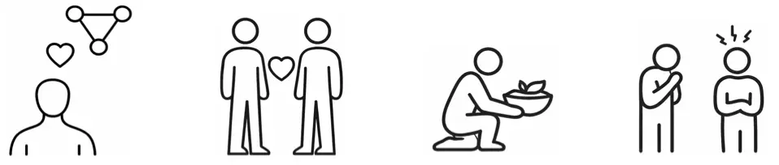
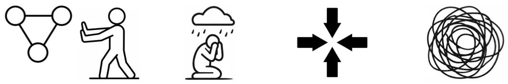
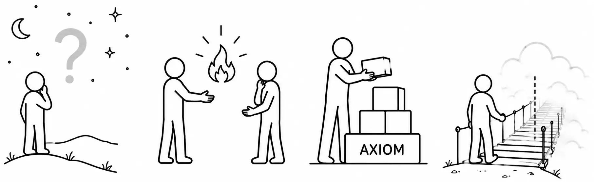
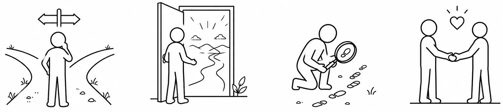
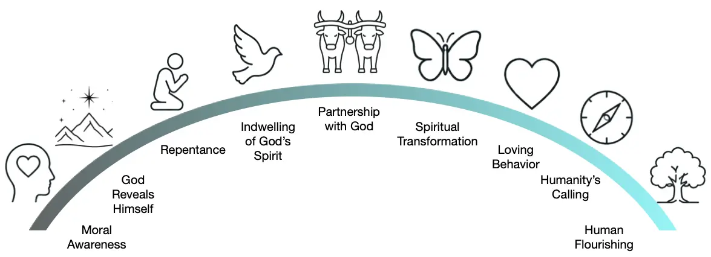
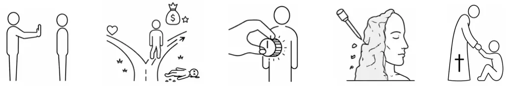
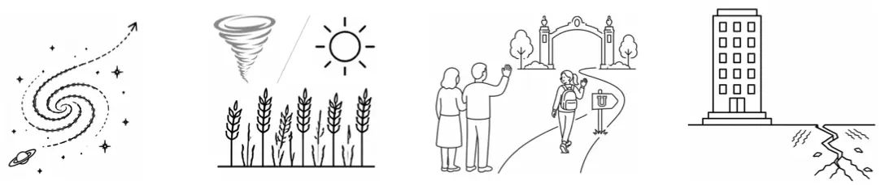
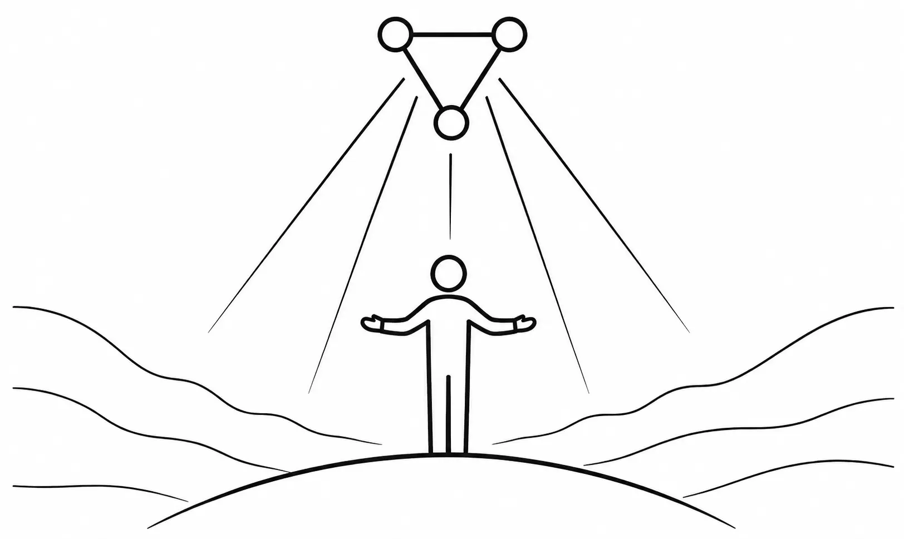

[Table of Contents] [Reading Guide] [Download PDF]
Writing this essay began with a simple aim: to express the central storyline of Scripture in ordinary language. At the core of Scripture’s storyline lies a striking claim—that God is love, not merely one of His traits, but His very essence. If that’s true, how does it show up in the storyline? Could love be more deeply woven into every relationship that makes life flourish than we’ve realized?
While exploring, I ran across a public discussion1 between Ayaan Hirsi Ali—who converted from Islam to atheism and later to Christianity—and Richard Dawkins, one of the most prominent advocates of New Atheism. Dawkins suggested that Christianity is preoccupied with sin. Hirsi Ali’s reply was concise: Christianity is not obsessed with sin, but with love. That response struck a chord and sharpened the question: could the Christian story be seen as an account of reality in which divine love stands behind creation, freedom, partnership, and even the openness of the cosmos?
My aim in this essay is to offer a clear account of the Christian story, so that a curious reader can examine it carefully and reach their own conclusions. As an engineer, when approaching a new topic I wanted to understand it for myself. It was helpful to have people and sources to learn from, but in the end, I needed to develop a “mental model”—a framework from which to think and reason in that new domain. I hope you’ll do the same here. This essay is an engineer’s attempt to write for other engineers and those with a similar, analytical mindset. With that in mind, I’ve tried to present the storyline of Scripture in a way that conveys its concepts and meaning, without evangelistic fervor and without pressing for agreement (except in the Epilogue).
Modern communication increasingly favors short-form media. Videos, posts, and articles often focus on individual questions or isolated topics that can be consumed quickly. Such formats are valuable for introducing ideas, highlighting specific issues, or stimulating discussion.
This essay pursues a different goal. Its purpose is to examine how the major themes of Scripture fit together into a coherent whole. Questions about God, love, freedom, faith, evil, suffering, redemption, and human purpose are often discussed separately; here they are examined as interconnected parts of a larger story. For this reason, the essay is intentionally long-form. Its value lies in the individual ideas it presents and in the relationships between those ideas. Readers who invest the time to follow the argument from beginning to end may discover that concepts often viewed as disconnected become more intelligible when seen as components of a unified framework.
This essay is my first foray into theology.2 Now retired from a career as a wireless/systems engineer in Silicon Valley, I finally have the time—and perhaps the audacity—to write as an amateur theologian.3 I’ve always been interested in why things are the way they are and enjoyed peeling back “the layers of the onion” to see how ideas fit together. I’ve never been a scientist—one to discover or invent new techniques or algorithms—but an engineer, interested in applying those ideas to build something practical and useful. As a systems engineer, I learned to think end-to-end—to “connect the dots” across complex architectures and see how individual components form a coherent whole. I approach theology the way I approached complex systems: by looking for coherence, explanatory power, and internal consistency.
Before retiring, I worked as a solution architect. My role was to understand our customers’ requirements—their objectives, assumptions, and operating realities—and then work with our team to design an end-to-end architecture in which every component fit coherently within the whole. Applied to this essay, the “requirements” for describing our reality are captured in the appendix on Foundational Questions, and the text that follows is an attempt to articulate an architecture that addresses them. Borrowing a term from my former profession, this essay is an exploration of the Solution Architecture described by Scripture—its integrated account of creation, freedom, corruption, suffering, and restoration. Like any solution architecture, it’s offered not as the only possible design, but as a coherent one that seeks to integrate the major components into a consistent whole.
The way I approached solution architecture was by first seeking to understand the individual components, then stepping back to discover how they fit together into a coherent whole, and finally returning to the components to verify that the resulting architecture satisfied the system’s objectives. I approached this essay in much the same way, except that the components are the major doctrines of Christianity. Rather than designing an architecture, however, I sought to discover one revealed in Scripture. This essay explores the architecture of Christianity by looking beyond individual doctrines to how they fit together into a coherent whole.
This essay did not begin with a defined audience in mind; it began as an effort to carefully think through the storyline of Scripture. Writing has a clarifying and corrective power of its own: once ideas are expressed in prose, assumptions surface, ambiguities are exposed, and poorly integrated thinking becomes difficult to ignore. In that sense, writing functions as a crucible for thought. If you come from a STEM background, I hope this exploration resonates with you—especially if you suspect that Christianity, if true, must be more than rules, rituals, or inherited tradition.
Over time, one observation gradually rose above the others. I came to see that humanity’s deepest problem is our separation from God. It also became clear that the grand narrative of Scripture is God’s work to restore our loving relationship with Him while preserving our freedom to embrace or reject that relationship. Everything else follows from that. Increasingly, I found that many Christian doctrines could be understood as either describing that separation or God’s work of reconciliation.
This observation also shaped how I approached the essay itself. My objective is not to present a formal proof of Christianity or to argue that this is the only legitimate way to synthesize Scripture. Instead, this essay presents a synthesis rooted in God’s love. As an engineer, I approached it as an exercise in design inference rather than deductive proof.
The choice of love as the organizing principle is not arbitrary. Scripture describes God in many ways, but its statements about what God is—His essential nature—are remarkably few. Among them is the extraordinary declaration that God is love. The opening section explores why this statement warrants being taken seriously as an organizing principle for understanding the Christian story.
Across history, many of the world’s leading scientists, philosophers, and artists have found Christianity deeply consonant with reason. Early scientists explored the cosmos expecting it to operate according to rational, intelligible laws—an expectation grounded in belief in an orderly Creator. It’s therefore not surprising that those who approach Christianity from technical or scientific backgrounds often find its claims open to careful and disciplined examination.
None of us stands outside this story. Whether we approach it as seekers, believers, engineers, artists, or something in between, the questions it raises involve each of us—our longings, our failures, and our hopes. What follows is a rediscovery of the central thread that gives Scripture its meaning: the story of divine, agape love.4 As you read,5 consider whether this account of love coheres with your lived experience and makes sense of the world as you actually encounter it. For if Christianity is true, then behind everything stands one great and unchanging reality: God is love.
My hope is not that every reader will agree with every conclusion. Rather, if this essay leads you to see Christianity as a more coherent explanation of reality—or simply as more intellectually compelling and worthy of further investigation than you previously believed—then I will consider it to have accomplished its purpose.
Note to reviewers: I’ve done my best to be careful and conscientious in the pursuit of truth and accuracy, but there are undoubtedly places where my thinking is incomplete, unclear, or wrong. In addition, I’m aware that as an amateur theologian, it’s quite possible my thinking has been biased by the particular books I’ve read. I’d be grateful if you’d point out what I’ve missed and help me see where arguments need sharpening or rethinking.
Epilogue: The Invitation of Love
Appendix: Foundational Questions
 |
Foreword |
 |
Introduction |
 |
The God Who is Love |
 |
Love Expressed |
 |
Imaging Love |
 |
Love Rejected |
 |
Love Revisited |
 |
Love Restored |
 |
Love Empowered |
| Love and the Reality of Hell |
 |
The Frontier of Faith |
 |
The Necessity of Faith |
 |
Freedom and Faith |
| Faith, Hope and Love |
 |
Love Corrupted by Deception |
 |
The Mystery of Evil |
 |
Love’s Gambit |
 |
The Arc of Love |
 |
Signatures of Love in Reality |
 |
The Architecture Converges |
 |
Becoming Truly Human |
 |
Epilogue: The Invitation of Love |
 |
Appendix: Foundational Questions |
 |
Appendix: Scripture & Modern Science |
 |
End Notes |
No doubt you’ve attended a wedding where two people beautifully profess their love, and during the ceremony the following Scripture is read:
1 Corinthians 13:1-7 (NIV),6 “If I speak in the tongues of men or of angels, but do not have love, I am only a resounding gong or a clanging cymbal. If I have the gift of prophecy and can fathom all mysteries and all knowledge, and if I have a faith that can move mountains, but do not have love, I am nothing. If I give all I possess to the poor and give over my body to hardship that I may boast, but do not have love, I gain nothing. Love is patient, love is kind. It does not envy, it does not boast, it is not proud. It does not dishonor others, it is not self-seeking, it is not easily angered, it keeps no record of wrongs. Love does not delight in evil but rejoices with the truth. It always protects, always trusts, always hopes, always perseveres.”
Few would argue that love is humanity’s highest virtue. In fact, Christianity at its core is the story of divine [agape] love told by Scripture. But this kind of love should not be mistaken for soft sentimentality or affection that fades with emotion or circumstance. It is a robust, self-giving love—a passionate commitment to the well-being of another. Such love can require sacrifice, restraint, discipline, truth, justice, protection, and the willingness to bear great cost for another’s good; for a preview of its characteristics, see the Axioms of Love. This essay argues that every act of God—from creation to judgment—is an expression of divine love. That may sound surprising at first, but it arises directly from Scripture, which will become clear as the essay unfolds.
The essay traces the grand narrative of Scripture from creation to new creation. It begins with God’s generosity in creating a world of beauty and purpose and humanity as His family. It continues with love corrupted by sin as humanity turns inward and the created order fractures, then explores the deeper story behind the evil we encounter in the world. Yet love does not withdraw. It is revealed anew in Jesus of Nazareth, who shows the world what agape love looks like in human form. Through His death and resurrection, love restores what sin destroyed, opening the way to a renewed world where love rules again. God’s Spirit then works to perfect love within the redeemed—people who’ve adopted the remedy God provides—forming hearts that increasingly reflect His own. Finally, even in judgment, love remains the measure—for hell is the tragic consequence of refusing love, and heaven the fulfillment of embracing it.
Ah yes, hell. That infamous destination from which we all need fire insurance. How can this tragic outcome fit within a love story? Somehow it must, for reality reveals the persistent presence of evil and deception, forces that have profoundly shaped the human story.
This is the arc of the Christian story—the movement of divine love through creation, corruption, revelation, restoration, perfection, and final consummation. Yet a central question remains. If God desires relationship with humanity, why is His existence not more obvious? Why does reality appear to contain evidence that points toward God while still permitting doubt, competing interpretations, and disbelief? This essay argues that these features are not flaws in the design of reality but consequences of a world structured for freely chosen love. As the discussion unfolds, we will explore how freedom, trust, hiddenness, faith, and hope emerge naturally from a reality whose deepest purpose is loving relationship.
Each section that follows traces one stage of this journey, revealing how the essence of Christianity is not rules, ritual, or philosophy, but the unwavering truth that God is love. Readers interested in the foundational assumptions from which this essay proceeds may wish to read Appendix: Scripture & Modern Science before continuing.

One of the quiet surprises of the Christian story is how closely it aligns with our inner yearnings—wanting to be loved and knowing we should love others—while answering the question of why this life of love proves so difficult to sustain.
Perhaps the most famous statement about God’s identity comes from God Himself. When Moses asked about God’s name, He replied, “I AM WHO I AM.”7 This enigmatic statement has traditionally been understood to reveal something fundamental about God’s being. Everything else exists because something caused it to exist; God does not. His existence depends upon nothing outside Himself. In philosophical terms, God is non-contingent. He simply is.
In another particularly striking text, the Apostle John writes: “God is love.”8 He didn’t write that God loves, or even that God is loving. He predicates the noun love directly of God—and does so twice. The construction points beyond what God does or what He is like toward something intrinsic to who God is. That unusual construction invites a question: Does Scripture speak about God this way anywhere else? Two other statements stand out:9
All three statements occur in the writings of John, and in each case the statement about God’s nature becomes the premise from which a consequence follows. Because God is spirit, worship cannot ultimately depend upon physical location; He must be worshiped “in the Spirit and in truth.” Because God is light, partnership with Him is incompatible with evil. And because God is love, those who know Him must themselves love.13 John’s pattern is striking: what God is shapes how God relates to us and what relationship with Him requires.
These statements do not exhaust God’s nature, nor do they imply that His other essential characteristics are less important. Scripture also says that God is faithful, righteous, true, holy, and more.14 These adjectives describe characteristics that are essentially true of God, whereas spirit, light, and love are nouns. John’s use of these noun predications suggests that they deserve careful attention.
This essay follows John’s pattern for the statement, God is love. It’s distinctive not only in its grammatical form, but also in its implication—it’s inherently generative, seeking the good of another and naturally expressing itself through giving and relationship.15 The unusual force of “God is love” caught my attention, and led me to take the statement as a lens through which to examine the Christian story. Since what God is shapes how He acts, perhaps this lens can help explain why God creates and, ultimately, why the Christian story has the architecture it does.
When God revealed Himself to Moses, He declared Himself to be “the compassionate and gracious God, slow to anger, abounding in love and faithfulness, maintaining love to thousands…”16
From Scripture we know God is a single being, comprised of three persons: the Father, Son, and Holy Spirit (the Trinity17). As such, He’s able to exhibit [agape] love—passionate commitment to the well-being of others within the Trinity—even before the cosmos or humankind were created.18 He didn’t “need” to create humankind because He was lonely.19 He didn’t need to create beings to worship Him, presumably to prop up His low self esteem.20 Scripture describes God as a perfect, just, omnipotent, omniscient, and omnipresent, to name a few of His key immutable attributes. Agape love is the kind of love whose shape we recognize most clearly in our deepest human commitments, where another’s flourishing becomes worth real sacrifice.

God created us out of love and a desire to share His loving, Trinitarian experience more broadly. God’s inner life is the fullness of goodness, eternally shared as love within the Trinity. When Scripture declares that “God is love,” it reveals the relational character of this divine life, graciously extended toward creation. For humans, love is the clearest way we encounter that reality, for His love is His goodness personally directed toward us.
We shouldn’t be surprised that God’s motivation for creation was love; after all, our own experience mirrors this when we create, no matter our field of endeavor. Even though a project can feel like work—sometimes taking a long time—we often express the experience as a “labor of love.” We enjoy talking about our creation and sharing that joy with others, especially those with whom we have a relationship.
Prior to creating humankind, Scripture teaches that God created the cosmos along with our planet, the latter teeming with flora and fauna. How He accomplished this is outside the scope of this essay. What’s clear is that we live in a rich, diverse, and awe-inspiring universe, demonstrating the magnitude of His unfathomable love for us. The greatest minds on the planet have been discovering its mysteries for thousands of years, and yet we’re still nowhere near a comprehensive understanding. We don’t live in a dull or ordinary place!
If this much is true—that ultimate reality is personal, relational, and rooted in self-giving love—then the shape of the universe begins to make sense. If love lies at the foundation, then we should expect that our own deepest longings for connection are not accidents, but echoes.
After the creation of the universe, in love, God proceeded to create humankind. In Scripture we read:
Genesis 1:26-28 (NIV), “Then God said,”Let us make mankind in our image, in our likeness, so that they may rule over the fish in the sea and the birds in the sky, over the livestock and all the wild animals, and over all the creatures that move along the ground.” So God created mankind in his own image, in the image of God he created them; male and female he created them. God blessed them and said to them, “Be fruitful and increase in number; fill the earth and subdue it. Rule over the fish in the sea and the birds in the sky and over every living creature that moves on the ground.”
From this Scripture passage, we learn…

Humans were created in God’s image. This means all people possess intrinsic dignity and worth because they bear the image of God—regardless of their social status, sex/gender, ethnicity, ability, or behavior. That’s why life is sacred and justice21 is fundamental in biblical ethics. We’re God’s vice-regents (representatives), or image bearers, on Earth—created to reflect His loving character and wisdom as we live. This is one of Scripture’s most astonishing claims: among all God’s creatures, humanity alone bears the image of God.22 From humanity’s very first breath, God marked us as His image bearers. He did not wait for us to prove ourselves worthy, nor was the image added later as a reward for moral achievement. The image belonged to humanity from the very beginning. That truth is not just about our value; it reveals God’s extraordinary purpose for humanity.
Humans were created in God’s likeness. To be created in God’s likeness means humanity uniquely mirrors God’s capacity for relationship, with Him and others.23 We have freedom of choice,24 reason, creativity, stewardship, and a conscience which instinctively knows right and wrong (moral awareness).25 These traits are among those humanity needs in order to carry out its role as vice-regents of creation (see below).
God created male and female. Together, the two sexes reflect God’s image in a way that neither does alone. Each is equal in worth and equally called to bear God’s image in the world. Scripture hints that this isn’t accidental. God is relational in His very nature, and the relational unity of husband and wife—the “two becoming one flesh”26—echoes, however faintly, the unity-in-diversity that exists within God Himself. So while marriage is not a direct parallel to the Trinity, it does provide a meaningful analogy of the relational harmony that flows from God’s own nature. In addition, God establishes a partnership between husband and wife that reflects the partnership each of us is invited to share with Him.
In Scripture, humanity represents the climax of creation; and the creation of male and female together forms the apex of that climax, revealing that the image of God is expressed most fully in relational partnership.27
Not incidentally, the Hebrew word used to describe God’s creative intent for woman does not denote a subordinate assistant (as the English translation, “helper”, can imply), but an equal counterpart who supplies what is missing in man, without whom the fulfillment of their shared vocation would not be possible. This same Hebrew word is used elsewhere in Scripture to denote a powerful rescuer or strength-bearing ally—often used of God Himself.
Humankind was given dominion over creation. God instructed humanity to subdue the earth—to bring it under control—and to rule over the other living creatures by exercising genuine authority over them.28 These are strong terms describing more than passive caretaking: humanity was commissioned to exercise God’s delegated authority over creation, shaping and governing it in accordance with His purposes. Scripture does not specify the full scope of this commission or precisely what subduing the earth was intended to entail. The command itself suggests that, beyond the cultivated Garden of Eden, there remained a wider world to be developed. We will return to the significance of humanity’s dominion later.
Humankind was given a vocation of stewardship. We were charged to cultivate the earth and care for its living creatures while preserving its beauty. We were also called to fill the earth with families—spreading communities that mirror God’s love, creativity, and wisdom. When rightly understood, stewardship is an expression of love: a posture of care and responsibility oriented toward the flourishing of what has been entrusted, not its exploitation or abuse.
In this essay, our vocation and dominion is referred to as “Humanity’s Calling”. Humans were never meant to carry out this calling independently from God—it was intended as a partnership!29 As the late pastor and author Tim Keller explains in his book, Every Good Endeavor,30 “We are to be gardeners who take an active stance toward their charge. They dig up the ground and rearrange it with a goal in mind: to rearrange the raw material of the garden so that it produces food, flowers, and beauty. And that is the pattern for all work. It is creative and assertive. It is rearranging the raw material of God’s creation in such a way that it helps the world in general, and people in particular, thrive and flourish.”
| Aspect | Implication for Humanity |
|---|---|
| Image of God | Intrinsic dignity and worth; called to reflect God’s character and wisdom. |
| Likeness of God | Capacity for relationship, free will, reason, creativity, conscience. |
| Male & Female | Complementary; together reflect God’s relational nature; equal in worth. |
| Vocation | Stewardship: cultivate, fill, and care for creation. |
| Dominion | Delegated authority: subdue, shape, and govern creation according to God’s purposes. |
In summary: Humanity represents the visible expression of divine love on Earth. To be made in God’s image is to be invited into partnership with Him—to reflect His nature through compassion, justice, and stewardship. The Imago Dei is therefore a statement about our origin and our calling: we find our purpose in shaping the world, and through partnership with God, we discover the deepest meaning of life. Humanity’s Calling invokes humans to seek a deep understanding of creation. Whatever your gifts—whether in science, the arts, or humanities—they are part of God’s calling. To illustrate, here are just some of the fields where human creativity participates in God’s plan:
Scientific fields: mathematics, natural sciences (physics, chemistry, biology), applied sciences (engineering, medicine, agriculture, environmental science), information technology, and data systems.
Humanities fields: philosophy, theology, law, politics, education, literature, arts, and music.
Economic and organizational fields: business, finance, entrepreneurship, commerce, manufacturing, operations, logistics, public administration, skilled trades, and technical vocations.
All of creation is therefore both a reflection and an invitation of divine love.
The point is simple but profound: whatever your vocation or passion, it is not peripheral but central to God’s purposes. You have a purpose and place in this story, and your gifts are meant to help fulfill Humanity’s Calling. God, out of love, designed a profoundly interesting, engaging, complex, sustainable, and beautiful environment for humankind—in the words of John Hammond (Jurassic Park), He “spared no expense.” And yet, just as Hammond’s lavish creation in Jurassic Park went horribly wrong, so too did God’s creation when rebellion entered the picture.
Jesus of Nazareth taught that all Scripture hangs on two precepts:31 (1) love God with all your heart, soul, and mind; and (2) love your neighbor as yourself.32 In this essay, they’re referred to as the “Love Precepts”. A restatement of these precepts is the Golden Rule: in everything, treat others like you want others to treat you.33, 34 Scripture’s rationale for this grand summation is that love does no harm to others.35
To ensure his message to love was clear, Jesus defined “neighbor” by relating the parable of the Good Samaritan.36 To make it crystal clear, He said, “… love your enemies, do good to those who hate you, bless those who curse you, pray for those who mistreat you.”37 Why? “That you may be children [image bearers] of your Father in heaven.”

Love directs not only outward behavior—it includes our inner life as well. We are told to love God with our minds. In other words, our thought life must also be loving.38 Jesus does not merely want to eliminate sexual exploitation; He wants to eliminate lust itself. He doesn’t just want to end murder and racism; He wants to eradicate hatred at its root. He calls us to sincerely love others—not merely out of duty (“because it’s the right thing to do”), and not for self-benefit (“quid pro quo”)—but out of genuine concern for the well-being of others.
We also learn something of agape love through the God-given institutions of marriage and family. Those who are married have an experience of love that is passionately committed to the flourishing of a spouse. Likewise, those who’ve raised children have tasted this kind of committed love as well.
As a further illustration, the Seven Deadly Sins39 can be understood as distortions of love—and therefore violations of the Love Precepts.
| Sin | Distortion of Love |
|---|---|
| Pride | Refuses humility, placing self above God and others. |
| Greed | Violates generosity; keeps rather than shares. |
| Lust | Violates faithful, honoring love; uses rather than cherishes. |
| Envy | Violates gratitude and goodwill; resents another’s good fortune. |
| Gluttony | Violates self-governed love; consumption exceeds rightful bounds. |
| Wrath | Violates patience, mercy, and peacemaking. |
| Sloth | Violates love through neglect; withholds care and responsibility. |
One of the implications of the Love Precepts, when combined with Humanity’s Calling, is that they call for an integrated life. It’s common for people to think of their “spiritual life” as what happens in explicitly religious settings—perhaps on Sundays—while the rest of their life is considered everyday life. But Scripture does not divide life this way. If we’re image bearers called to love God and neighbor, and to cultivate the world in partnership with Him, then every domain of life—work, relationships, creativity, decision-making—falls within that calling. An integrated life is one in which there are no separate compartments; the same love that directs worship also directs engineering, parenting, business, and daily interactions. We’re not two selves, one spiritual and one ordinary—we are one.
The best example of an image bearer in Scripture is Jesus of Nazareth.40 He was such a perfect representative that He could say,41 “Anyone who has seen me has seen the Father.” His life revealed what undistorted love looks like in human form.
During his time on Earth, Jesus demonstrated perfect image-bearing by serving humanity—even though He is God. When we read Scripture, we understand that true servanthood demands integrity—acting in harmony with one’s core nature. Jesus not only healed the sick, fed the hungry, and taught with compassion—behaviors that align with modern ideals of goodness—but His love for God also demanded that He boldly confront hypocrisy. He publicly rebuked corrupt religious leaders and, using physical force, drove the currency exchangers who were practicing extortion out of the temple.42
Perhaps the clearest description of Jesus’ servanthood is:43
In your relationships with one another, have the same mindset as Christ Jesus:
Who, being in very nature God, did not consider equality with God something to be used to his own advantage;
rather, he made himself nothing by taking the very nature of a servant, being made in human likeness.
And being found in appearance as a man, he humbled himself by becoming obedient to death—even death on a cross!
Isn’t it awe-inspiring that Jesus was a servant to us, sent to help and save us! We are so valuable to God! Many places in Scripture He calls Himself “our helper.”44 Let that sink in. It’s a staggering inversion of power.
It’s common for people to experience a deep sense of fulfillment after acts of service. Think of a time when you volunteered at a food bank or a community project. In hindsight, did it feel as though you received more than you gave—rewarded with an unexpected warmth or quiet satisfaction? This response is not accidental; it reflects our design.
Because we are made to mirror God’s moral nature, the command to love is not arbitrary—it’s the essence of true image-bearing. For many of us, this is where admiration quietly gives way to recognition: we see the beauty of this love clearly, yet realize how often something within us resists living it consistently. Unfortunately, seeing love embodied so clearly in Jesus does not automatically give us the ability to live it out; moral clarity, by itself, does not confer moral capability.
What would a life in partnership with God as an image-bearer look like? A practical life lived in partnership with God fulfilling Humanity’s Calling is one in which everyday work, creativity, and responsibility are consciously offered back to God as shared vocation rather than private ambition. In this partnership, a person seeks God’s wisdom and character while cultivating the world—whether through science, art, engineering, parenting, governance, or caregiving—so that creation increasingly reflects God’s goodness, order, and love. Work is done with excellence not merely for personal success, but as stewardship; relationships are shaped by justice and compassion because people are treated with dignity; and decisions are guided by trust in God rather than anxiety-driven self-rule. Such a life is neither withdrawal from the world nor domination of it, but faithful presence within it—learning, building, healing, and creating alongside God.
This kind of partnership is not one of constant control. In everyday life, we tend to value leaders who don’t micromanage—those who set direction and provide guidance, but entrust real responsibility to others. A micromanaging manager leaves little room for initiative or growth; the relationship becomes one of control rather than collaboration. By contrast, a healthy partnership involves trust, shared purpose, and meaningful participation. Love, by its nature, seeks the growth and development of the other. If humans are to live as image-bearers in partnership with God, then the relationship would be expected to take this latter form: not scripted or overridden, but guided and entrusted, with real responsibility in how we think, create, and act—so that, over time, we grow in wisdom, character, and capacity within that shared work.45
Upon creation of humanity, the first man and woman were placed in the Garden of Eden. There, they began fulfilling Humanity’s Calling. What occured next is often described as disobedience, but at its heart reflects a deep relational rupture. Here’s how the story unfolds in Genesis 3:1-7 (NIV):
Now the serpent was more crafty than any of the wild animals the Lord God had made. He said to the woman, “Did God really say, ‘You must not eat from any tree in the garden’?”
The woman said to the serpent, “We may eat fruit from the trees in the garden, but God did say, ‘You must not eat fruit from the tree that is in the middle of the garden, and you must not touch it, or you will die.’”
“You will not certainly die,” the serpent said to the woman. “For God knows that when you eat from it your eyes will be opened, and you will be like God, knowing good and evil.”
When the woman saw that the fruit of the tree was good for food and pleasing to the eye, and also desirable for gaining wisdom, she took some and ate it. She also gave some to her husband, who was with her, and he ate it. Then the eyes of both of them were opened, and they realized they were naked.
Besides Adam and Eve, four other entities were in the garden.46 Understanding their roles clarifies why the events in Eden unfolded as they did.
| God Himself. Scripture says He walked and talked with Adam and Eve in the Garden of Eden. |
| The Tree of Life (ToL). Humans were permitted by God to eat the fruit of this tree. The fruit of this tree imbued its eater with immortality47 and is a sign-act48 for the wisdom, given by God, which brings true fulfillment in life.49 |
| The Tree of Knowledge of Good and Evil (TKGE). God forbade humans to eat from this tree, under penalty of death.50 In other words, eating its fruit would sever their relationship with God and result in physical death. It was a direct violation of the first Love Precept—to love God above all. The TKGE was also a sign-act, and by eating, it represented taking for oneself the authority to decide right and wrong, good and evil, apart from God. In effect, it was a choice to trust one’s own understanding rather than God’s.51 |
| The Serpent. Scripture tells us the Serpent, the antagonist, was the evil spiritual being, Satan.52 As John H. Walton, Professor of Old Testament at Wheaton College, observes, serpents in the ancient Near Eastern world were often linked with chaos and disorder—imagery that would have signaled to ancient readers that a force hostile to God’s order had entered the story.53 |
One might think that putting the TKGE in the garden was a cruel thing to do. Why would a loving God put humans to such a fateful test, knowing ahead of time they’d fail? Here’s why: humans were created in the likeness of God—moral beings with free will. Our raison d’être is love—to live in willing relationship with God. If there had been no alternative way to live other than the original path imparted by God, there wouldn’t be any choice. Without choice, humans would essentially be robots.
This perspective differs from viewing the TKGE as a test. The ToL and the TKGE were sign-acts for wisdom and knowledge54 respectively, each pointing toward a distinct way of life. Choosing the ToL meant embracing connection and partnership with God; choosing the TKGE meant opting for independence and separation. A loving God thus granted His created beings the freedom to choose the way they wanted to live—He did not compel that His love be returned. It was not a test, but a genuine choice; whichever path they chose carried real and lasting consequences.
Note: the relationship between love and freedom can seem circular at first. Does love give rise to freedom, or does freedom give rise to love? In a sense, both are true, depending on one’s perspective. From God’s perspective, love comes first. Because God is love, He created persons with genuine freedom so that loving relationships would be possible. From our perspective, freedom comes first. We are free so that we may genuinely choose whether to love God, love one another, and partner with God in Humanity’s Calling. Thus, love is the reason freedom was given, while freedom is the condition that makes love possible.
The Garden of Eden itself appears to have been structured to preserve freedom of choice. God was present there and relationship with Him was immediately available, yet not overwhelming. God had demonstrated His love by providing abundantly and warning them of the consequence of choosing independence. Yet the TKGE was also accessible—making independence a genuine possibility—and God permitted the Serpent access to Eden and to Adam and Eve. He did not silence the Serpent or prevent it from challenging His word. Thus, the circumstances in Eden afforded the humans genuine freedom: both paths were available, with moral agents advocating for each.
In the dialog between the Serpent and Eve, the first statement by the Serpent was sarcastic, mocking God and questioning His generosity: “Did God really say…”? This was followed by a blatant lie, “You will not certainly die.” The Serpent was implying that God had hidden motives and couldn’t be trusted. Then he said, “You will be like God.” In other words, the Serpent suggested that God couldn’t be trusted to lead them into their best life—if they wanted true fulfillment, they would have to seize knowledge and make their own decisions. He was telling them that they could—and should—live independently from God. Eve believed the Serpent, as shown by her conclusion that the fruit was “desirable for gaining wisdom”.55 Put plainly, Eve listened to and trusted the Serpent; she believed the deception. The Serpent’s words appear to have struck a resounding chord in Eve, appealing to fear and a desire for control. Since Scripture is clear that Eve was deceived, she wasn’t acting in overt rebellion—she may have truly believed her relationship with God wouldn’t end. By contrast, Scripture presents Adam’s choice differently: he was not deceived, but knowingly joined in the act, bearing responsibility for their disobedience.
After both Adam and Eve ate the forbidden fruit, God cursed the Serpent and the ground in an event referred to as “The Fall.” In Scripture, a curse56 is a divine judgment placing its object under condemnation or diminished flourishing (adversity). Note that neither the humans themselves nor humanity in general were cursed, but they were disciplined with consequences.
| Who | What | Description |
|---|---|---|
| Serpent | Curse | God cursed the Serpent and predicted that He would eventually deal the Serpent a mortal wound. Before that wound was inflicted, Scripture says the Serpent would have offspring.57 What? How? In the Fall, the Serpent usurped God’s authority over the Earth by persuading humans to live without relationship with Him. By choosing independence, they effectively aligned themselves with the Serpent and became his “offspring.”58 Thus, the Serpent was forming a rival kingdom—a people defined by independence from God.59 |
| The Ground | Curse | Because of Adam’s choice, God cursed the ground—it would now produce thorns and thistles, making agriculture toilsome. Scripture links the fate of creation to the fate of humanity, likely because humans have the mandate to be the Earth’s stewards. It makes sense—humans broke their relationship with God, and so their relationship with creation was also broken.60 |
| Adam | Consequence | The ground would now resist his efforts; he would have to work by the “sweat of his brow” to produce food. Adam and Eve were banished from the Garden of Eden, losing their shared life with God (spiritual death)61 and access to the ToL, eventually resulting in physical death.62 Thus, God’s decree, “for when you eat from it you will certainly die,”63 was fulfilled in two forms of death: spiritual and physical. |
| Eve | Consequence | Childbirth would now involve great pain, and conflict would enter the relationship with her husband, who would “rule over” her, thereby introducing disorder into the marriage relationship. |
It’s interesting to note that knowledge of good and evil itself was not the issue in the Garden. God Himself has that knowledge and Scripture says that His goal for us is to be conformed to His image. God did not want humans to gain knowledge that way; they needed to have knowledge imparted according to His plan and timeline,64 much like parents gradually imparting knowledge to their children as they mature.65
There’s another perspective on eating the TKGE’s fruit. It’s not just disobedience, but love turned inward—the self preferred over God. The Fall thus becomes the corruption of love’s order. In other words, sin is not merely a transgression of God’s commands, but that which breaks or harms relationship. Pride66 is the root of this choice—indeed, as Augustine of Hippo has written, pride is the opposite of love.67
Note: many people naturally think hatred is the opposite of love, and that’s true when we are speaking of our relational disposition toward another person. Scripture, however, reveals a deeper truth: at the deepest level, the opposite of love is pride because it turns our focus inward instead of outward toward God and others. Hatred, by contrast, is the relational expression of that inward orientation. From pride flow self-centeredness, envy, resentment, hatred, and ultimately violence. This distinction also explains how Scripture can say that God is love while also saying that He hates evil.68 Hatred directed toward evil is compatible with love, whereas hatred that flows from pride isn’t. The Apostle Paul describes love as seeking the good of another—the very opposite of the attitudes and behaviors that flow from pride.
As a result of the Fall, humans were separated from God—death, in Scripture often means separation from God. Nevertheless, God, in His love, didn’t end the humans’ life immediately. He let them live out their lives in accordance with their choices and maintained their status as image bearers.69 Moreover, in His love, He promised to provide a remedy—the aforementioned mortal wound to the Serpent.
Note: in contrast to death as separation, the Apostle John defines eternal life in relational terms: John 17:3 (NIV) states, “Now this is eternal life: that they know you, the only true God, and Jesus Christ, whom you have sent.” In this verse, “know” refers to the kind of knowing stemming from relationship, not just intellectual awareness.
In His omniscience, God foresaw humanity’s rebellion. He designed a world capable of enduring—and even sustaining a measure of fruitfulness—when humans choose independence from Him. Though sin introduced death and rendered life finite, God continued to sustain human existence and endowed humanity with the capacity to live an entire lifetime apart from Him—though human flourishing became profoundly disordered by the loss of spiritual union with God. Humanity was never meant to exist untethered; only through intimate communion with God can our passions be rightly ordered and our lives fully aligned with their intended purpose.
In a paradoxical way, God’s love is revealed in declaring physical death as the consequence of disobedience. Once Adam and Eve fell and became disordered by evil, unmediated70 shared life with God was no longer possible; perfect goodness cannot coexist with corruption.71 Had they been permitted to live indefinitely in that state, they would have been estranged from God’s presence and partnership forever. By making them mortal, God opened a different future. Death introduced the possibility of redemption—a second chance, and indeed, a lifetime of second chances. By imposing mortality, God acted in a way consistent with His own character: He neither ignored evil nor abandoned His creatures, but created a path by which they could one day be restored. In this sense, death was a severe mercy—God remaining true to Himself while preserving the hope of reconciliation.
Put in contemporary terms, God’s love is not performance-based. Despite Adam and Eve’s choice, His love for them did not become conditional—He acted to preserve the possibility of restoration. As parents, this is the kind of love we aspire to—continuing to love our children even in the midst of their failures. Does God still love this way today? Absolutely! His nature doesn’t change over time; the love revealed in the Garden remains the same today.72
After humanity’s rebellion, God pronounced curses and consequences that have often been understood primarily as punishment. While the serpent and ground were explicitly cursed, the consequences imposed upon Adam and Eve can also be understood as loving discipline. Like the discipline of a wise parent, they uphold justice while seeking humanity’s ultimate good.
Consider a loving parent whose child steals a candy bar from a store. A wise parent does not simply impose an arbitrary punishment. Instead, the child is required to return to the store, apologize to the owner, and make restitution. If the child has no money, the parent may assign chores so the debt can be repaid. Justice is upheld, but the deeper goal is not the child’s suffering—it’s the child’s growth in honesty, responsibility, and character.
Scripture describes God’s discipline in much the same way. Scripture teaches that God’s discipline is painful “for the moment,” yet it later yields “the peaceful fruit of righteousness.”73 The goal is not pain, it’s formation.
Seen in this light, it is noteworthy that the consequences imposed upon Adam and Eve touch responsibilities God had originally entrusted to them. The curse resulting from Adam’s sin falls upon the ground he was commissioned to cultivate and steward. Having chosen independence from God, Adam would now experience what creaturely independence entails: securing the necessities of life through sustained effort in a world that resisted him. Eve, who had been created because “it is not good for the man to be alone,” was given as Adam’s companion and partner. Her discipline therefore touches both childbirth and her partnership with Adam, through which humanity was to multiply and flourish. Rather than being arbitrary penalties, the consequences appear carefully fitted to each person’s God-given vocation, much like the discipline of a wise parent is fitted to the child’s wrongdoing.
By touching the very responsibilities God had entrusted to humanity, these disciplines could also remind them of their dependence upon him. Difficult harvests would remind Adam that life and fruitfulness ultimately come from God. Hardships in human relationships would remind humanity that genuine love and flourishing cannot be achieved apart from their Creator. Rather than driving humanity away from God, these disciplines had the potential to draw them back. Isn’t this often what happens to us? When we reach the limits of our own strength, we begin searching beyond ourselves for help, meaning, and hope.
As we’ll see in Part III, the problem of evil in the world is not just due to the mistakes of the first humans. Human rebellion did not occur in isolation; it unfolded within a wider spiritual reality.
An important question to ask at this juncture is, “What does God want?” God wants a deep, personal relationship with each and every human on the planet. We see this reflected across the arc of Scripture. In the Garden of Eden before the Fall, God walked and talked daily with Adam & Eve.74 In the present day, as will be explained later, God’s Spirit indwells redeemed humans, thereby living with them. At the end of the age, God promises a new heaven and a new earth75 wherein God and humans dwell together eternally.
Although God wants you to join His family, He won’t override your will. Suppose a man and woman begin dating. After a few dates, the man realizes he’s fond of the woman and asks if she’d like to be his girlfriend. She breaks his heart by replying, “I just want to be friends.” At this point, what is the loving thing to do? Should he respect her wishes and just be friends? Or should he think, “I’m going to win her over—she just needs to see how much I love her”—and then begin constantly texting her, buying her gifts, and pushing past her boundaries? Obviously, he should honor her request. In the same way, God honors your response to Him. Scripture describes many examples of this truth: if a person persistently seeks things outside the bounds of the Love Precepts, God will acquiesce.76
C. S. Lewis, the Oxford and Cambridge literary scholar—the first person to hold first-class honors, a fellowship at Oxford, and later a professorship at Cambridge—was one of the most influential Christian thinkers of the twentieth century. He stressed that God won’t override your free will even regarding the most important decision of your life, the one which determines your ultimate destiny. In his book, The Great Divorce,77 Lewis writes that God doesn’t send people to hell against their will: “There are only two kinds of people in the end: those who say to God, ‘Thy will be done,’ and those to whom God says, in the end, ‘Thy will be done.’ All that are in hell, choose it.”
God loves us so much that He actually protects our free will. This protection is described by a concept known as the “hiddenness of God.” God is hidden in that He doesn’t always make His presence, power, or purposes unmistakably obvious to us. It’s not that He’s absent, but that He chooses not to overwhelm humans with constant, undeniable displays of His existence. After all, if He revealed to each of us His full nature—so powerful and glorious as to remove all doubt—we would be overwhelmed with proof of His existence and love.78 Consequently, our love for Him would no longer be a choice; it would be a foregone conclusion compelled by revelation.
This perspective on God’s hiddenness appears in common RomCom movie plots: one character conceals their wealth at the beginning of a dating relationship. Their goal is not deception but to avoid influencing the other person’s motives. Wealth can shape behavior—leading someone to appear genuinely affectionate when their underlying motive is self-interest. God’s restraint serves a similar purpose. By not placing His glory constantly in the foreground, He allows our desires to surface more clearly. Are we moving toward partnership with Him, or simply toward the outcomes we hope He’ll provide? In this sense, divine hiddenness does not merely preserve freedom—it clarifies the authenticity of our love.
However, even if we desire a relationship with God, there’s a problem. Humans are sinful, and God’s love requires justice for sin. Suppose two people go to court over stolen property. During the trial, the defendant admits to stealing it, but says he sold it and gambled away the proceeds. It might be loving for the judge to show mercy to the thief (perhaps because of extenuating circumstances), but it would be unloving to ignore the victim’s loss—she no longer has her property nor the resources to replace it. Love demands justice, because love takes harm seriously.
Moreover, true justice becomes exceedingly difficult when there’s no human remedy. How can virginity be restored to a rape victim? How can a lost life be returned to the family of a murder victim? How can the emotional harm of verbal abuse simply be undone? In such cases, human courts can only offer imperfect justice. But God promises to administer final, perfect justice at the end of the age. Those who accept the remedy will receive new bodies—fully healed, freed from every defect, and restored from every wound—rectifying every wrong ever committed against them or by them and removing the aftereffects of accident or disease.79 For those who reject the remedy, Scripture teaches their final judgment will be just and proportionate.
In a hypothetical “court” in which God and humanity are on trial, who is the one who is seeking justice? Who committed the offense? If humans are the offenders and God is the one offended, what “harm” has been done to God that requires compensation? In a way, it seems a silly question since God is a perfect and complete being—humans’ sin cannot diminish Him nor can recompense “repair” Him. But if this is true, why does He demand justice?
Actually, it turns out that God was wronged (“harmed”)—as described in the table below.
| Sin breaks our relationship with God.80 God views our relationship with Himself much like a human marriage relationship; He sees us as His beloved spouse. So when we choose something besides Him—whether money, fame, or anything else—He views it as adultery.81 Scripture even describes His emotional response as that of a jilted spouse.82 Most of us never stop to consider God’s perspective, but it makes sense: He created us for relationship. |
| Sin causes God emotional
pain.83 As a parent, how do you feel when
you see your children making poor choices? Another way to picture
this is to recall a time when you gave a spouse or close friend a
meaningful gift—something you chose or created especially for them—and
instead of showing gratitude, they responded with indifference, as if
your effort didn’t matter. How did that make you feel?
This is not to say that humans can manipulate God using emotion.84 God truly feels anguish, compassion, and delight, yet His inner fullness is not diminished nor psychologically altered by our actions. |
| Sin breaks humans’ ability to function as proper image bearers. Thus, Humanity’s Calling isn’t being fulfilled. Imagine if you created a sophisticated AI robot, and one day it decided to reject its programming and refused to do what you designed it for. You’d feel frustration and loss. That’s a faint echo of how God feels when we, His image-bearers, refuse our purpose. |
| Sin damaged humans themselves. Since humans are too precious to God to be destroyed or annihilated, they need to be “repaired.” Sin is more than bad actions; it corrupts our hearts, bending our desires and judgments away from good. Continued sin compounds this effect. Much of human sin is committed against other people—through cruelty, injustice, betrayal, or neglect. Ultimately, these acts are sins against God as well, because they violate the second Love Precept.85 Again, only God is capable of repairing what has been damaged—and it cost Him His Son’s life. |
| Sinful humankind has damaged God’s property (i.e., the Earth and its flora & fauna). Consider how many animal species have become extinct due to human behavior, and how much air, water, and ocean pollution humanity has caused. The world is now on the verge of a human-induced ecological crisis. What should have been a glorious display of God’s creative genius has been tragically degraded. The earth is no longer “fit for purpose.” If God wants it back—and He does—He’ll have to remake it; no one else can. |
Something is wrong with all of us. We act with genuine love sometimes, but it isn’t our intrinsic nature. Throughout world history, we see hate, racism, sexism, human trafficking, slavery, war, and genocide. In daily life, we observe theft, anger, lying, divisiveness, manipulation, arrogance, and greed. Not only do we all observe this, each of us knows we’ve committed our own sins.86 And yet, God still loves us and wants us to be part of His family. But He cannot ignore sin,87 and He demands justice for the wrongs humans have committed against Him and against each other.
In Scripture, sin refers to humanity’s rebellion against God—the willful turning of the heart toward self-rule. The Greek word for sin means “missing the mark,”88 a failure to live in alignment with the Love Precepts. All sin is therefore evil, yet evil extends beyond sin itself. It also includes the aftermath of sin—suffering, injustice, death, and spiritual darkness. Together, they describe both the cause and the consequences of humanity’s estrangement from God.
The purpose of the Remedy is for humans to establish a partnership with God—so that we can be proper vice-regents of Humanity’s Calling—not just get “fire insurance.” Before we describe the Remedy, we need to understand where the problem lies—what exactly happened to the human condition as a result of the Fall.
As a result of the Fall, the first humans broke their relationship with God; consequently God withdrew His immediate presence from them.89 This was truly a profound change! In The Lost World of Adam and Eve,90 John H. Walton, Professor of Old Testament at Wheaton College, explains that the Fall occurred because humans elected to pursue life on their own terms. This decision resulted in a fundamental change to their motivations. When God describes Himself as “I AM,”91 He reveals Himself as a being who depends on nothing outside Himself for His existence. Humans are not like this. We’re dependent creatures—on air, food, and ultimately on God Himself. When we choose to live independently from God, we’re not stepping into a neutral alternative, but into a way of life that runs against our own design.
With their decision to eat from the TKGE, humans assumed moral autonomy and, having chosen independence from God, found themselves responsible for ensuring their own survival—adequate food, shelter, clothing, and social stability. The Fall’s curses brought hardship to subsistence, thereby creating a world marked by scarcity, fear, and frustration—conditions that further turned human attention inward. In such an environment, self-protection, rivalry, and mistrust become embedded patterns of behavior. Over generations, these patterns shaped the human experience so deeply that they began to appear natural, arising from life in a disordered world, separated from God’s immediate presence.
Within these conditions, ordinary human passions became increasingly distorted.92 For example, libido, designed for spousal [eros] love and fulfilling Humanity’s Calling (being fruitful and having families), often turns to lust, engendering sexual immorality. The passion of subsistence, motivation to provide our own food, often turns to unhealthy ambition engendering competition and a win-lose strategy for life (I win, others lose). Hunger can turn to gluttony. And so on. Sin, by its very nature, breeds more sin by strengthening sinful habits and weakening the conscience.
More generally, Scripture describes sin not as an automatic expression of a corrupted essence, but as a developmental process that begins when human desire is stimulated and misdirected.93 Each person is tempted to sin when they are “lured and enticed by their own desire,”94 language that portrays desire itself as morally neutral but vulnerable to distortion by our own thoughts as well as external conditions. Theologically, this would be referred to as a functional view of corruption: human beings as morally vulnerable creatures whose desires, shaped by a broken world, can be trained toward either life or destruction, good or evil.
This perspective also helps explain why children demonstrate selfishness even in households marked by abundance and nurture. Their behavior is evidence of being born into a relational and cultural environment already shaped by fear, brokenness, and competing desires. Children learn patterns of self-centeredness through the influence of the adults in their lives—parents who, even if redeemed, still wrestle with the lingering effects of sin. Every generation is shaped by the accumulated distortions modeled and reinforced by those who came before. In this view, humanity’s propensity to sin is best understood as the compounded effect of relational separation from God, environmental hardship, learned behaviors, and intergenerational patterns of sin.
Adam and Eve were unique among humans. They did not enter the world through pregnancy and birth, but were created directly by God. They were morally mature when entrusted with Humanity’s Calling and explicitly commanded not to eat from the TKGE (Scripture does not specify their apparent “age” at creation). Because they possessed moral awareness and agency from the outset, their disobedience rendered them fully culpable; God was fair in judging their rebellion at the Fall.
What about everyone else? Babies are not born with the capacity to make moral decisions. They don’t yet understand Humanity’s Calling or the Love Precepts. For this reason, they’re not morally guilty of any transgression at birth—and not for some time thereafter. Scripture portrays God as holding children innocent, not accountable, before they’re capable of moral awareness.95 Over time, each child reaches a point—different for each individual—at which moral awareness awakens. By then, their developing passions have already been shaped by a disordered environment—home, school, culture, and the behavior of other people. Eventually, each person knowingly participates in that disorder.
Allow me to take a brief tangent. Humanity’s creative partnership with God is expressed every time a human is conceived. Our parents provide the biological origin of our life while God grants its personal reality—our [non-material] soul. Thus, human procreation becomes the means through which God brings about new human life. Scripture consistently presents God as the giver of life and the one who forms each person; many understand this to include the creation of the soul from the earliest stages of life in the womb.96 In this way, procreation is one of the clearest expressions of humanity’s original calling to partner with God—a coordinated participation in His ongoing gift of life.
The Apostle Paul tells us that because of Adam’s sin, death passed to all humanity.97 As discussed earlier, this occurred due to humanity’s loss of access to the Tree of Life, God’s provision for overcoming mortality. We therefore enter a world already marked by death, separation from God’s immediate presence, and generations of accumulated human sin. This is a profound problem. Our passions become disordered from early childhood. Given this starting point, it’s inevitable that all sin.98
This is the world we actually live in—one where beauty is mixed with brokenness, where we sometimes love, but sometimes wound others (and ourselves). If we’re honest, this matches our experience. Two things need to be fixed—restorative justice for our sin and indwelling by God’s Spirit.99 Scripture refers to the first as atonement. Scripture teaches—and history confirms—that only God, or a person empowered by God, is capable of truly reflecting His image.100 The only person in all of history who perfectly reflected God’s image was Jesus,101 who was (and still is) God. As humans, we need God’s indwelling to empower us to reflect His image properly.
A common way of thinking about religion came into focus for me during a series of conversations with a former coworker. When I worked at a Wi-Fi company, I used to go on lunchtime walks with a colleague who was Jewish—born in Israel and educated in that tradition. Our conversations ranged widely, and from time to time we would discuss religion. He explained Judaism, and I explained Christianity. When I asked him about the purpose of religion, he said it was to help us become better people—more acceptable to God. In his view, Scripture provides guidance about what is good and what is not, but the responsibility to live it out rests with us.
I suspect many people share this view. We recognize that we don’t live as we should—perhaps not even close—and yet we hope our efforts will be enough. The idea is that, in the end, when our deeds are placed on a balance scale, the good will outweigh the bad. What often goes unnoticed, however, is that improvement alone cannot resolve the problem. Even if we were to live better going forward, we cannot undo our past. The wrongs and the guilt remain. Something more than effort is required.
Humanity cannot fix itself from inside the very problem it created. No amount of self-improvement, moral effort, or religious performance can undo the damage nor provide the needed empowerment. Because we cannot undo our own guilt or overcome our disordered passions, the solution must come from the outside—God Himself must act on our behalf.
And God did act on our behalf.
The person who made the atonement for us102 is God’s Son, Jesus of Nazareth, the Messiah.103 Scripture teaches that Jesus took upon Himself all the sins of all humans throughout the ages, giving up his life (being crucified on a Roman cross) as the requisite payment. So the first thing we need is a way to obtain this atonement for ourselves.
Many worldviews accommodate the concepts of power, knowledge, or transcendence. Christianity is distinctive because it centers reality on self-giving love. Rather than remaining distant from humanity’s brokenness, the God who is love, entered into it Himself. In so doing, He authentically demonstrated what real love looks like.
Some may argue that God, due to the fact that He created us, is responsible for the remedy. This is analogous to a corporation paying for a remedy stemming from an improper act by one of their employees (e.g., erroneously opening a valve allowing hazardous chemicals to flow into a river). God has this angle covered as well, since He Himself provided our remedy in the person of His only son, Jesus.104, 105
Note: discussion of the human condition and the reasons we sin can be illuminating and worthwhile for understanding ourselves and reality, but in an important sense, is secondary.106 Our fundamental problem is not why we sin or how we arrived here, but that we have all sinned—each of us has made morally responsible choices that have broken our relationship with God.
Up to this point we have explored the Christian explanation of reality in conceptual terms—creation, human purpose, and the problem of brokenness. But Christianity does not present itself merely as a philosophical framework. It makes a historical claim: that God overtly acted within human history through the life of Jesus of Nazareth. If that claim is credible, the entire framework moves from an interesting idea to a credible explanation of reality.
At this point, the pivotal question becomes the resurrection of Jesus.107 Sin causes physical death and separation from God. Jesus’ resurrection proves that even though all humanity’s sins were placed upon Him, God accepted His death as valid atonement for all.108 Even though Jesus was cursed in the process, He was resurrected to life and immediately re-connected with God in spirit, and on the third day later, in body. Thus, all humanity is assured of the possibility of being restored to life and an eternal connection to God. Jesus’ resurrection from the dead is the key event in all of Scripture. The earliest followers of Jesus publicly proclaimed His resurrection in Jerusalem—the very city where He had been executed—and many endured imprisonment and death rather than deny what they claimed to have seen. Something extraordinary convinced them. If it were somehow proven that Jesus did not, in fact, rise from the dead, all of Scripture would be rendered moot by its own admission.109
Many skeptics doubt this historical event.110 Yet, there is a small core set of historical claims about Jesus that enjoy very broad acceptance—often near-consensus—across the spectrum, including skeptical, Jewish, agnostic, and atheist historians. Contemporary resurrection scholar, Gary Habermas, has cataloged thousands of academic publications and refers to the following as “minimal facts”—data points granted by the majority of critical scholars regardless of worldview.111
| Jesus of Nazareth was a real historical person. Jesus lived in first-century Judea and functioned as a Jewish teacher. His existence is affirmed not only by the New Testament112 but also by independent, non-biblical sources, placing him firmly in ancient history rather than legend or myth. |
| Jesus was executed by crucifixion under Roman authority. Jesus’ death by crucifixion—ordered during the prefecture of Pontius Pilate—is one of the best-attested facts of ancient history. The method of execution is significant: crucifixion was public, brutal, and deeply shameful, making it an unlikely invention of His followers. |
| Jesus’ earliest followers sincerely believed he rose from the dead. Shortly after Jesus’ execution, His disciples proclaimed He had appeared to them alive. This conviction emerged very early and was central to their message, even though it exposed them to persecution. The creed, preserved in 1 Corinthians 15:3–8—affirming His death, burial, resurrection, and appearances—is widely dated to within just a few years of the crucifixion, far too early to be a legend or myth. |
| Key skeptics and enemies were transformed. James, the brother of Jesus, who had been skeptical during Jesus’ ministry, became a leader in the Jerusalem church after claiming a resurrection appearance. Paul, formerly a persecutor of Christians, reversed course after reporting that he too had encountered the risen Jesus. These conversions are widely acknowledged historical events that demand explanation. |
| The resurrection proclamation produced a sudden and enduring transformation. The movement surrounding Jesus changed dramatically following his death: fearful disciples became public witnesses, skeptics were converted, and the resurrection became the organizing center of Christian belief and practice. Scholars broadly agree that some powerful explanatory cause is required to account for this transformation. |
Many scholars also argue that the tomb was discovered empty. The burial by Joseph of Arimathea—a Jewish religious ruler—and the early testimony of women as primary witnesses (whose testimony carried limited legal weight in that culture) make fabrication unlikely. While not universally accepted, the empty tomb remains strongly supported in contemporary scholarship.
Taken together, these facts form a coherent data set. As in systems engineering, any viable explanation must account for the full set of constraints. A solution that explains only part of the evidence ultimately fails. Naturalistic explanations have been proposed. Hallucination theories do not account for group appearances or an empty tomb. Conspiracy theories struggle to explain sustained persecution and the conversion of former skeptics. Legend theories require time that the early creedal material does not allow. Each proposal addresses fragments of the data but leaves significant elements unexplained.
The resurrection hypothesis, by contrast, accounts for the empty tomb, the early proclamation, the transformation of the disciples, the conversion of enemies, and the explosive growth of the movement—beginning in the very city where Jesus was executed. It requires no additional layers of speculation beyond the claim itself.
Within a few centuries, this small, persecuted Jewish sect spread across the Roman Empire and beyond. Today, billions across cultures, languages, and educational backgrounds confess that Jesus rose from the dead. Historical movements of this magnitude demand adequate causal explanation.
Before describing the remedy, we need to understand how it dovetails into the “Kingdom of God” (KoG). The Scripture’s New Testament begins the explanation with the introduction of the prophet, John the Baptist. John entered the scene proclaiming, “Repent, for the Kingdom of Heaven [God] is at hand”. This begs two questions: (1) Repent from what? and (2) What is meant by the KoG?
When John taught repentance, he meant not just a change in thought, but a change that results in transformed behavior. When asked what repentance looked like, John pointed to concrete acts of love—generosity toward the needy, honesty in dealings with others, and contentment rather than grasping for security.113 In other words, genuine—not superficial—change; not lip service, but behavioral transformation stemming from sincere renewal of the mind.
Although John didn’t expand on the KoG, Jesus of Nazareth taught on it extensively. From Jesus’ teaching, the KoG can be described as follows…
| God is the King and redeemed humans are its citizens. In this essay, “redeemed” refers to persons who’ve adopted the remedy. |
| At present, it’s a spiritual kingdom that began with the resurrection of Jesus. Redeemed humans are its citizens. Both redeemed and unredeemed humans live together on the present, cursed earth. Unredeemed humans are citizens of the rival kingdom ruled by the Serpent. |
| The KoG grows invisibly, like yeast working through dough or a mustard seed that becomes a great tree. It expands as hearts are changed. |
| Eventually, at the end of the
age, when the new heavens and earth are brought forth, the KoG
will be fully realized in a new physical kingdom. Redeemed
humans—having undergone their final transformation (what theologians
refer to as glorification) and possessing new, pristine,
immortal bodies114—are its citizens. God and
His people are dwelling together once again, as in Eden. On the
new earth, there is no more death, mourning, crying/tears, pain,
sin/evil, or night (God is the ever-present light).115
All unredeemed humans are isolated in hell, separated from the
redeemed.116 Little is said in Scripture about
the nature of an unredeemed person’s new body other than it’s capable of
enduring ongoing ruin.117 Note: Jesus, during His time on earth, provided a preview into the ultimate KoG. He healed people of their sickness and disease (removed the source of crying and pain), He cast demons out of people (overcame dark spiritual forces), raised people from the dead (reversed physical death), and helped people establish a connection with God. |
If this is what God has done—stepped into our brokenness, absorbed the cost of our rebellion, and defeated death itself—it calls for a response. At a minimum, it calls for a sincere investigation of the Remedy.
The Remedy is a set of life-shaping truths that, when truly believed, become effective within us. How do we get this remedy? Scripture teaches the following:
| Step | Description |
|---|---|
| 1 | Repent of self-rule and make God your primary allegiance. |
| 2 | Believe the gospel, I Corinthians 15:1-4. |
| 3 | Declare your belief out loud. |
Repent of self-rule and make God your primary allegiance. In the words of Jesus (Luke 9:23-25 (NIV)),
“…Whoever wants to be my disciple must deny themselves and take up their cross daily and follow me. For whoever wants to save their life will lose it, but whoever loses their life for me will save it. What good is it for someone to gain the whole world, and yet lose or forfeit their very self?”
In his book, Renovation of the Heart: Putting On the Character of Christ,118 Dallas Willard, former Professor of Philosophy at the University of Southern California (USC), offers a helpful perspective:
“Without that ‘giving up,’ you cannot be his disciple, because you will still think you are in charge and just in need of a little help from Jesus for your project of a successful life. But our idea of a ‘successful life’ is precisely our problem.”
In his book, The Problem of Pain,119 C. S. Lewis describes it this way:
“Now the proper good of a creature is to surrender itself to its Creator—to enact intellectually, volitionally, and emotionally, that relationship which is given in the mere fact of its being a creature. When it does so, it is good and happy… In the world as we now know it, the problem is how to recover this self-surrender. We are not merely imperfect creatures who must be improved: we are, as Newman said, rebels who must lay down our arms… But to surrender a self-will inflamed and swollen with years of usurpation is a kind of death.”
We shouldn’t be surprised by Jesus’ teaching. He isn’t introducing anything fundamentally new; He’s revealing what the first Love Precept requires—the surrender of self-rule.
Typically, a big concern relative to relinquishing control of our life is that despite being run by God, things will run amok. If you have this concern, it’s important to remember that you’re not surrendering control to just anyone, you’re relinquishing control to God Himself. God is pure goodness—there is not a speck of evil in Him.120 Therefore, whatever He asks of us will be good for us, our families, and society. Nevertheless, we can easily imagine God will get our lives crazily out of control or ask us to do strange, bizarre things we’d never want to do. Jesus addresses the run-amok concern directly in Matthew 11:28-30 (NIV):
“Come to me, all you who are weary and burdened, and I will give you rest. Take my yoke upon you and learn from me, for I am gentle and humble in heart, and you will find rest for your souls. For my yoke is easy and my burden is light.”
A yoke was for pairing two oxen so they would work together as a team; a yoke was often used to help a young ox, inexperienced in plowing, learn from a seasoned one. Jesus is inviting us into partnership (the yoke) and is promising to teach us—we just need to be ready to learn. In Jesus’ day, yokes were made to fit the animals that used them.121 The image suggests that Jesus calls each of us into a uniquely customized, personal partnership. Crucially, wearing the yoke is not temporary. We don’t learn and then take it off so we can go on by ourselves; we leave it on because we’re in a partnership.
In addition to Jesus’ promise, we can be assured our lives won’t run amok because what God asks of us will be bounded by a set of three Scriptural constraints. The first is that they’ll be in harmony with Humanity’s Calling and the Love Precepts—His purposes revealed in Scripture; the second is that they’ll be consistent with His character as revealed in Jesus; and third, ordinarily His asks will be congruent with how He’s made us—according to our gifts, abilities, and the capacities He’s woven into our lives.122
A second major concern about relinquishing control of our life is that we’ll no longer have fun. Many equate sin with fun—whether in drinking parties or sexual freedom—and assume that following Jesus means settling for less. Scripture acknowledges that sin can be a fleeting pleasure. Instead, Jesus promises an abundant, fulfilling life.123
Believe the gospel. The gospel is the minimum set of necessary beliefs for the Remedy. The gospel is: Jesus died for our sins, He was buried, He was raised on the third day according to the Scriptures, and then appeared to Peter, the Disciples, and to more than 500 persons at once (I Corinthians 15:1-4).124
Declare your belief out loud, thereby demonstrating your internal faith with an externally observable action—revealing your faith as genuine: Romans 10:9-10 (NIV), ‘If you declare with your mouth, “Jesus is Lord,” and believe in your heart that God raised him from the dead, you will be saved. For it is with your heart that you believe and are justified [legally exonerated from sin], and it is with your mouth that you profess your faith and are saved.’ Note: this verse reiterates the criticality of primary loyalty to God and belief in Jesus’ resurrection.
It’s crucial to understand that our redemption rests entirely on God’s grace and the death and resurrection of Jesus—not by any action on our part.125
This is where Christianity decisively departs from what many assume it to be. At its core, it’s not a system of rules to follow, rituals to perform, or traditions to inherit, but a restored relationship grounded in trust and loyalty to God.126 Scripture consistently teaches that God rejects outwardly good or religious actions when they are offered as a substitute for faith or as a means of establishing one’s own way to Him. These include, for example, charitable giving, personal sacrifices, religious festivals, and other devotional practices—good things in themselves, but powerless to restore our relationship to God.127
The Remedy, then, is not earned by what we do for God, but received through trusting what God has already done for us. We come as we are—no prior self-improvement is needed, nothing to fix first.
Ideas that are incoherent rarely endure. That this story has survived sustained intellectual critique for two millennia suggests there is something here worth serious attention. However, many who reject Christianity do so not because they find it unintelligible, but because they feel its moral demands are too great, particularly the surrender of control.
A natural question to ask at this point is, “What can I expect if I accept the Remedy?” There’s a two-part answer to this question: (1) from now (the point of repentance) until the time you physically die and (2) after death, throughout eternity.
| While Alive | After Physical Death |
|---|---|
| Adopted permanently into God’s family. | Immediately in paradise with God. |
| Empowered by God's Spirit. | Await new heavens and earth in paradise. |
| Two drives: God's Spirit vs. disordered passions. | Receive new, immortal, uncorrupted body. |
| Growth through failure, acknowledgement of wrongdoing, and restoration. | No more sin, death, mourning, or pain. |
| Called to service, may face testing, suffering and persecution. | Live in fully realized Kingdom, partnering with God forever. |
Since the second answer is simpler, let’s start there. When we die, we immediately go to be with God in paradise.128 We remain in paradise until the end of the age when the new heavens and earth are brought forth; thereafter, we live out our citizenship in the fully realized KoG living on a new earth, within a new cosmos.
The first part of the answer is more complicated. Here are the primary things that will happen:
When we place our trust in Jesus, our sins are fully forgiven—not ignored, but paid in full. Our sin was atoned for by Him, and His goodness—His perfect record—is credited to us, so that God now relates to us on the basis of Jesus’ record rather than our own.129 God now sees us in Jesus as if we’re without sin.130 Atonement solves the problem that God won’t have a relationship with sinful beings.
We’re immediately brought into a proper relationship with God. In fact, Scripture teaches that we are “adopted” into God’s family, a status that never changes.131 Subsequently, once redeemed, we can never do anything to lose this status.132 It makes sense: we were redeemed by God’s grace, a gift. God maintains our adopted status because of His own faithfulness, not our performance. Since our redemption was received by grace rather than earned by our merit, it cannot be forfeited through our moral failures.
God’s Spirit indwells us and begins working within us, gradually reshaping our character and empowering us to live according to the Love Precepts.133 His Spirit is the source of our spiritual transformation.134 Empowerment doesn’t eliminate human freedom or struggle; it enables genuine change without coercion. Growth is real but neither automatic nor uniform. We’re now equipped to be proper image bearers—however, there’s a catch (see next bullet).
Theologians traditionally refer to the end-result of this transforming work as holiness. Unfortunately, the word often carries connotations of being unusually religious or morally flawless. In Scripture, however, holiness refers to wholehearted devotion to God and our relationship with Him. As God transforms us, our thoughts, feelings, will, and relationships increasingly reflect His love.135
A helpful illustration is found in traditional marriage vows. Husband and wife promise to remain faithful “for better, for worse, for richer, for poorer, in sickness and in health,” while “forsaking all others.” These promises describe the attitudes and behaviors that protect and preserve the marriage relationship throughout the seasons of life. Our relationship with God is much the same. Empowered by God’s Spirit, holiness naturally expresses itself through holy living—faithfulness, honesty, humility, forgiveness, purity, and self-giving love. These are the visible expressions of God’s transforming work. They protect and strengthen our relationship with Him; similarly, they protect and strengthen marriages, friendships, families, workplace teams, communities, and society itself. Holy living preserves and deepens the relationships that love has created.
Note that spiritual transformation is different from simply trying to improve a particular moral virtue, such as patience. Cultivating patience is a good and worthwhile endeavor. However, God’s objective is much broader. Through His Spirit, He’s transforming our entire personhood—our thoughts, feelings, will, the way we relate to others—our very souls.136 This is one of Christianity’s distinctive claims. While many philosophies and religions encourage transformation through self-mastery, discipline, meditation, or greater knowledge, Christianity teaches that the primary agent of transformation is God’s indwelling Spirit. Spiritual transformation is Spirit-empowered and unfolds through our willing partnership with God.
The catch is that once redeemed, we have two fundamental drives in our lives: God’s Spirit and our disordered passions. These two drives are conflicting. The rest of our life is spent training ourselves to follow His Spirit and ignore our disordered passions.137 This isn’t easy and is fraught with failure, the result of which is sin. We find ourselves not doing the loving things we want to do and instead doing things we don’t want to do.138 When we fail to follow His Spirit, we don’t lose our redeemed status, but experience a temporary disruption in our connection with God. It’s repaired immediately when we acknowledge our sin to God in prayer.139
This tension helps explain why some people have become disillusioned with Christianity—because of the hurt they’ve experienced from Christians or the church. That hurt is real and shouldn’t be minimized. Christians are expected to live by the Love Precepts, yet they frequently fail because the journey of spiritual transformation begins where you are, not where you ought to be. Churches are communities of people at different points along that journey, which means that some will, sadly, cause hurt.
More troubling still are those who claim the name “Christian” while living lives that bear little resemblance to the One they profess to follow.140 Additionally, leaders who exploit religious authority for personal gain or misuse the language of faith to justify harm are likewise sinister.141 Note: this is a violation of the Ten Commandments—taking God’s name in vain.142
Nor is this problem new. Jesus of Nazareth Himself confronted corrupt religious leadership. The Sanhedrin (the Jewish ruling council) brought false accusations and testimony against Him and, through an unjust trial, condemned Him on a false charge of blasphemy—a capital offense under Jewish law. In this sense, hypocrisy and spiritual abuse are not foreign to the Christian story, they’re part of the story.
There’s still more. History offers painful examples in which those in positions of Christian authority have not only failed morally, but have actively contributed to suffering—most recently in the clergy sexual abuse scandals in which leaders protected institutions rather than vulnerable people. This reality casts a long and understandable shadow over how God and His intentions are perceived.
My response is not to excuse these failures, but to humbly redirect attention to Jesus of Nazareth Himself. If His life and character represent what a true image bearer looks like, then the question is not whether Christians have lived up to that standard, but whether the love He embodied is compelling—and worth considering on its own terms.
As we learn to follow God’s direction, we’ll experience a full, abundant life.143 I believe this happens, in part, because we’re directed to live in harmony with our natural gifting. Globally, this results in the KoG having redeemed citizens in all walks of life, spreading loving behavior and the news of redemption throughout the world. Thus, all redeemed-humans’ work becomes God’s work, regardless of our fields of endeavor.
As we learn to follow God’s direction and become good image bearers, our lives will begin to imitate the way Jesus lived, in accordance with the Love Precepts.144 This leads to serving others.145 Conversely, the practices of our pre-redeemed life—hatred, discord, jealousy, envy, sexual immorality, fits of rage and selfish ambition, to name a few146—fade away.
As we learn to follow God’s direction, our life will become characterized by love, joy, peace, patience, kindness, goodness, faithfulness, gentleness, and self-control.147
We can expect persecution for our new beliefs.148 Depending on the culture in which one lives, this could be minimal (e.g., being teased for “irrational” beliefs) or severe (e.g., being ostracized from your family or even martyrdom).
We can expect to have our new beliefs tested and endure suffering.149 Scripture tells us that the purpose of such testing is to develop perseverance and maturity in our lives.150 Some preachers describe redemption as a means to “health and wealth” during our lifetime on earth; however, Scripture does not teach this—it’s a false expectation.
The work of God’s Spirit is to transform us from the inside out. Such transformation is neither instantaneous nor coerced. It unfolds over a lifetime as God patiently forms our character through the ordinary experiences of life.
This raises an interesting question. If God’s nature is love, what would we expect Him to desire for those He loves? Love seeks the flourishing of its object. Parents do not simply hope that their children survive. They long to see them mature—to grow in wisdom, character, responsibility, and love. Scripture portrays the same desire in God.
Human beings are not born morally complete. We begin life dependent on others and gradually mature through relationships, responsibility, successes, failures, and difficult choices. This appears to be an intentional feature of God’s design of the world. He is not merely creating life; He’s forming persons.
God could have created human beings with perfect knowledge or flawless behavior, but such people wouldn’t possess mature character. Character develops through freely chosen responses to real alternatives. Therefore, since love must be freely chosen, the process of becoming loving must also be freely chosen. Moreover, character requires time to develop through repeated opportunities to choose and practice what is good. Thus, people must remain free to embrace—or resist—that growth.
Consider the virtues we most admire. Courage requires danger. Patience requires delay. Forgiveness requires being wronged. Perseverance requires adversity. Trust requires uncertainty. Humility requires recognizing our limitations. The Apostle Paul portrays qualities such as these as expressions of love. None of these qualities can simply be installed. They must become part of us. Empowered by God’s Spirit, we gradually learn to love this way.
Character cannot be programmed. It must be formed.
Scripture consistently portrays God’s work in participatory terms: He invites, teaches, convicts, disciplines, empowers, and waits. We are called to walk by the Spirit rather than being mechanically transformed because God’s purpose is not outward conformity but inward formation.151
This perspective also changes how we evaluate our lives. We naturally judge life by our circumstances. When hardship comes, we ask why God has allowed sickness, disappointment, loss, or suffering. We wonder why He has not made life easier or granted what we hoped for. Implicitly, we assume that His highest purpose is our comfort or happiness.
But God’s purpose is deeper. Difficulties are no longer measured solely by whether they increase or diminish our happiness, but by how they shape our character. The question shifts from “Why is this happening to me?” to “Who am I becoming through it?”
We naturally ask whether life is making us happy. God is concerned with whether it’s forming us into people who love well.
This does not mean that every hardship is sent by God or that suffering is good in itself. Rather, it means that God faithfully works within every circumstance to accomplish His larger purpose. For many people, this is not the Christianity they’ve heard. Yet it’s the Christianity Scripture has been describing all along.
This lifelong work of transformation is what it means to become truly human.
When the subject of hell arises, many instinctively respond, “I’m a good person—I know I’ve made mistakes, but I’m not that bad.” Hell feels harsh, even unjust. Yet beneath that confidence, there is often an uneasiness. We know our selfishness, our pride, our divided loyalties. We sense that something in us is off, yet fear being held accountable.
Scripture reframes the issue in a way that differs from popular imagination. The question is not whether someone has committed enough sins to cross an invisible threshold.152 Nor is hell reserved for particular categories of wrongdoing. Sin is universal. The issue is deeper and relational: whether one has entered into genuine partnership with God—whether one has given Him prime allegiance. Here’s the sobering truth in Jesus’ words (Matthew 7:21-23, NIV):
“Not everyone who says to me, ‘Lord, Lord,’ will enter the kingdom of heaven, but only the one who does the will of my Father who is in heaven…Then I will tell them plainly, ‘I never knew you. Away from me, you evildoers!’”
When Jesus says, “I never knew you,” He’s not speaking of intellectual awareness, but of relationship—the kind of knowing that entails intimacy and loyalty—a relationship similar to that of a lifelong friend or spouse.
When Jesus spoke of hell, He used the Greek term, Gehenna, referring to an actual place—the Valley of Hinnom outside Jerusalem. In Israel’s history, the Valley of Hinnom was a place associated with idolatry, child sacrifice, and ritual uncleanness. It was a place of rejection and a symbol of exclusion from the holy city.
God’s invitation to redemption is an act of love, but love that must be freely received. Those who reject it choose separation from the only source of true goodness and life. Hell, therefore, is not a cruel imposition—it is the natural outcome of refusing God’s love.153 Typically, the trajectory of a human heart does not remain neutral. Over time, what we repeatedly choose becomes what we desire—and what we desire becomes who we are.
In his book, Hell, the Logic of Damnation,154 contemporary philosopher of religion Jerry L. Walls writes, “Of course, the greatest loss of those in hell is that of knowing God and enjoying life with him in heaven. This is the true end for which we were created, and the ultimate tragedy of hell is that some will lose out on the joy of eternal fellowship with God.”

Many people who reject the Remedy imagine hell as an underground torture chamber,155 and then understandably proceed to wonder how a loving God could eternally consign anyone there. Joshua Ryan Butler in his book, The Skeletons in God’s Closet,156 spends a great deal of text unwinding this caricature of hell.
One of his main points is that hell functions as the final protection of the redeemed. It’s the final separation of evil from good—so that unredeemed humans and dark spiritual beings can no longer harm or influence the redeemed. Unlike the Garden of Eden, no evil will ever be allowed in the new heavens and earth. This is God’s loving protection of His family, forever.
Scripture teaches that hell is not temporary. This permanence is what makes the doctrine so weighty. Jesus Himself speaks of those who reject God going away to “eternal punishment,” just as the redeemed enter “eternal life,” placing both destinies on equivalent timescales.157 Many people—including theologians—find this deeply troubling, myself as well. It’s difficult to imagine how eternal separation is proportional to the finite sins of a human life, no matter how horrific those sins might be. Of all the doctrines of Christianity, this is one many wish was different—that some further reconciliation might yet await those who reject the Remedy. However, Scripture does not teach that we’re given a second chance after our life on earth has ended.158
In a way, this makes sense because love cannot be coerced. If someone has spent a lifetime resisting God, it’s hard to see how shifting that person into heaven (the new earth) and into permanent [compelled?] allegiance to God would be loving. One may hypothetically argue that after spending time in hell, some people would change their minds. When the human heart hardens against love, prolonged resistance often deepens resentment rather than dissolving it. Hell, in this light, is not God forcing rejection, but God finally honoring it.
Hell is often described using vivid imagery—most famously as a “lake of fire”—which has led many to imagine it primarily in terms of physical torture. Yet Scripture also speaks of hell as a place of darkness, indicating that this language is metaphorical rather than literal. Jesus’ own words emphasize torment in the sense of inner anguish, remorse, and separation, rather than suffering imposed through external instruments.159 For this reason, many theologians describe hell not as a torture chamber, but as a state of eternal, conscious torment.
Hell is often described in Scripture as “God’s wrath” upon the unredeemed. Because eternal separation from God—the source of all life, goodness, and meaning—has such devastating consequences, Scripture describes that condition as wrath. This can be confusing, because normally we think of wrath as anger expressed through punishment; where human wrath is involved, we often imagine torture or destruction. In his book, Hell, the Logic of Damnation, Walls continues: “The suffering of hell is the natural consequence of living a life of sin rather than arbitrarily chosen punishment. In other words, the misery of hell is not so much a penalty imposed by God to make the sinner pay for his sin, as it is the necessary outcome of living a sinful life.” Walls goes on to quote Peter Geach, a twentieth-century analytic philosopher of religion:”God is the only possible source of beauty and joy and knowledge and love: to turn away from God’s light is to choose darkness, hatred, and misery. God is not like a jealous parent resenting his children’s seeking happiness outside the home; apart from love for God men can find only misery, in this world or in any conceivable world; and God could not make men so that they did not need Him [emphasis mine].”
Because God is the source of all goodness, this withdrawal is not mild—it’s devastating in ways we can scarcely imagine. The following paragraphs are an attempt to picture the desolation of hell as life apart from God.
In our present lives in a world marked by rebellion, we continue to live sustained by a kindness that is not our own. We experience the steady comfort of a spouse who knows us fully and remains. We feel the loyalty of a lifelong friend who answers the late-night call. We remember the embrace of a parent, the laughter of a sibling, the quiet strength of someone who says, “I’m here.” We’re quietly upheld by acts of loving service—the nurse who keeps watch through the night, the neighbor who brings a meal, the stranger who stops to help. These moments do more than comfort us. They keep despair from swallowing us whole.
None of these loves originate within us. They’re reflections—fragile, partial, but real—of the One who is love itself. Even those who deny Him still wake each morning with breath in their lungs, are met with patience when they fail, and are helped by people who expect no repayment. Conscience still restrains cruelty. Loving service still interrupts selfishness. Beauty still breaks through despair. Hope still whispers that change is possible. Scripture teaches that every good gift comes from above, and that love itself is from God. If that is true, then even the genuine affections and acts of service of those who don’t acknowledge Him ultimately depend upon His sustaining kindness.160
If God is truly the wellspring of every good thing161—every impulse toward mercy, every capacity for trust, every tenderness that binds one heart to another—then separation from His favorable presence would mean more than loneliness. It would mean the loss of the very conditions that make love, comfort, and hope possible. Remove gravity and the planets scatter. Remove oxygen and life suffocates. Remove the sustaining warmth of God’s gracious presence,162 and what remains is not neutral existence, but relational collapse—a reality in which love no longer softens pride, mercy no longer tempers justice, and the soul turns inward without relief.
Consider the most stabilizing love you have ever known. The person whose presence calms your anxiety. The one who forgave you when you didn’t deserve it. The voice that reminded you that you weren’t alone. Now imagine not only losing that person, but losing the very possibility that such love could ever arise again—no reconciliation, no tenderness, no relief, no hope of change. If God is the source of every such mercy, then to be finally separated from the blessing of His presence is to step into a reality where those mercies no longer flow.
Not only this, but C. S. Lewis in his book, The Great Divorce,163 describes hell as solitary. He puts it this way: “The trouble about the place [hell] is that it’s so empty. That’s what makes it so hopeless. It seems the deuce of a town at first, but it soon gets worse. That’s what brings us to live so far apart. As soon as anyone arrives, he settles down in some street. Before he’s been there twenty-four hours, he quarrels with his neighbor. Before the week is over, he’s quarreled so badly that he moves.” Eventually, everyone ends up being alone.
Scripture speaks of differing degrees of judgment in hell because people do not reject God to the same extent, nor with the same knowledge or moral deformation.164 All who persistently refuse God experience the same kind of consequence—exclusion from His presence—but the depth of that loss varies according to how profoundly a person has disordered their loves and resisted the light they were given.
Scripture is sober about this one final reality: our lives are not rehearsals. We are given one earthly life in which to respond to God’s invitation. After that, the direction we have chosen is final.
But if the invitation is so consequential, why doesn’t God overwhelm all doubt and compel belief? The answer leads directly into the role of faith.
Up to this point in the essay, we have explored a vision of reality grounded in a God whose nature is love. Yet important questions remain: If God desires a loving relationship with humanity, why does that relationship require faith? Why is God’s existence not made overwhelmingly obvious? Why does reality permit doubt, disagreement, and competing interpretations? These questions lead us to one of the most important and often misunderstood concepts in Christianity—faith. In this part, we’ll examine the nature of faith, why it’s necessary, how it relates to freedom and love, and what role it plays in humanity’s search for truth and relationship with God.
Faith is not merely one Christian doctrine among many; it’s the relational posture through which many other doctrines become personally meaningful. Why does God place such extraordinary value on faith? To answer that question, we must understand what faith truly is, how it differs from mere intellectual assent, why it’s indispensable to love, and why hope sustains faith until God’s purposes are finally fulfilled.
Scripture provides a working definition of faith in Hebrews 11:1 (NIV):
“Now faith is confidence in what we hope for and assurance about what we do not see.”
Faith is portrayed as confidence and assurance, not absolute proof; it allows room for questions and doubt. Nevertheless, faith conveys the idea of trust—leaning on something so fully that if it were to fail, you’d fall.
There’s another important aspect of faith, fidelity—faithfulness, loyalty, or steadfast adherence to a person, commitment, duty, or standard. This sense of faith is often used in Scripture as well.165 We’re quite unlikely to have fidelity in someone or something in which we have no trust. Thus it makes sense that Scripture often expresses these two aspects through the same word. In Part II of this essay, the word faith will normally mean trust rather than fidelity.
Finally, a further clarification to our definition of faith is crucial. Michael Guillen, physicist, author, and former science editor for ABC News clarifies the meaning of faith by dividing it into two classes: misguided faith and enlightened faith.166 Misguided faith is a belief in known fantasies or hypotheses which can be categorically discredited; enlightened faith is a belief in hypotheses consistent with available evidence, even when certainty remains incomplete or unattainable. Popular dialog often ignores this critical difference. In Part II, the word faith conveys the meaning of enlightened faith.
Scripture declares that it’s by faith that we understand God is creator of the universe, Hebrews 11:3 (NIV):
“By faith we understand that the universe was formed at God’s command, so that what is seen was not made out of what was visible.”
This verse can be interpreted in two ways. The first and most natural interpretation is that we apprehend by faith that God is creator. How might one apprehend this? By observation. Some examples:167
However, there’s a second interpretation that suggests something deeper—that one can apprehend God as creator solely by faith, because absolute proof or assurance will never be available. If this is the case, then God has created the universe in a manner that preserves interpretive freedom rather than offering coercive certainty. Why? If relationship rooted in love requires freedom, and if coercive certainty would compromise interpretive freedom, then a partially veiled creation becomes philosophically coherent. In other words, this Scripture suggests that God has designed the universe such that reasonable, intelligent persons can attribute its creation to other phenomenon or forces. For example, the “Many Worlds” or “Multiverse” hypothesis. Not that God designed deception into His creation or caused these other hypotheses to arise, but He foreknew humanity would propose them. This is analogous to the presence of evil. God allowed the freedom which admitted the possibility of evil; he foreknew humanity would commit evil, but He didn’t create evil nor did He coerce humanity’s choices.
The fact that we apprehend God as creator of the universe through faith dovetails nicely with the definition of faith. When we add up all the evidence, we have assurance. However, it’s not absolute proof. Moreover, intelligent people can and do believe in alternative explanations. This leads to the following progression of thought:
This logic implies that faith is fundamental to love-based relationships.

How can we know that someone truly loves us? This is a crucial question to ask, particularly if that “someone” is a key person in our life—a spouse, parent or good friend. You might say, “I just know.” But if we stop and think about how we know, it’s a bit more nuanced.
In this essay, we’ve defined agape love as the passionate commitment to the well-being of another. For a key person in our life, that definition might be care and concern exhibited through loving behavior over an extended timeframe. Notice that “care and concern” is a mental attitude, something not externally observable—at least by humans. Many different attitudes could evoke the same, seemingly loving behavior. For example, if someone close to you gives you a gift, the outward behavior may appear loving, yet the underlying motivation could arise from several different internal attitudes:
Here’s the thing: they tell you they love you, but do you trust their word—do you have faith in them? And if this person were someone seeking a long-term commitment, would you stake your future on it?
So the question becomes, how do we know we trust someone? Trust comes by observing the long-term behavior of the one being trusted. Brené Brown, research professor and bestselling author provided a great illustration about trust.169 Brown built this illustration off a marble jar analogy used in her daughter’s classroom at school. In the classroom, the marble jar was used to reward classroom behavior. When students exhibited good behavior, marbles were added to the jar; when poor behavior was exhibited, marbles were removed. When the jar became full, the teacher held a class-wide celebration for all to enjoy. Brown’s illustration of trust worked similarly. Brown explained that when someone does a little thing for you that builds trust, we put a marble in their marble jar. For example, a friend keeping promises, being kind, not sharing secrets, and showing up consistently. When the jar gets full enough, they’ve become a trustworthy person.
This analogy works in adult life as well. If the marble jar gets really full, we might trust our lives to someone (e.g., a fellow police officer), our finances (e.g., a business partner) or something else so big, if they were to betray our trust, it would devastate us. Once someone is trustworthy, we believe what they say—by faith. It’s not blind faith, it’s faith based on the evidence of a track record—what they’ve said and done in the past.
So it is with God. He asks us to trust our life to Him. But how do we experience God such that we can put marbles in His jar?
Is there the possibility of absolute proof when it comes to reality? Many objections to faith assume certainty is possible. Probably the closest we can come to absolute proof is mathematical proof. Remember back to High School geometry class and the agony associated with learning to prove theorems? Concepts were logically built up step-by-step until the theorem was proven.170
Something like this:
That stopping place is an axiom or set of axioms. An axiom is a foundational statement accepted without proof within the system itself. Once the axioms are accepted, conclusions can be logically derived from them.
This is important because even mathematics—the discipline most associated with certainty—ultimately rests on unproven starting points. The term, “unproven,” refers to absolute proof; it does not imply that such starting points are unfounded or unreasonable. Generally, they are carefully chosen, internally consistent, and have withstood centuries of scrutiny without revealing contradictions or counterexamples. Nevertheless, they haven’t been proven absolutely. Mathematical proofs are absolute only relative to the axioms upon which they’re built.
Without foundational assumptions, reasoning cannot even begin.
The same is true more broadly of human reasoning and worldviews. Every worldview begins with foundational assumptions (axioms) about reality. Some people consciously examine those assumptions; others simply inherit them from parents, teachers, professors, or culture.
Here are a few examples of philosophically-foundational axioms some people may hold:
One interesting observation is that people often criticize religious belief for resting on faith or assumptions, while overlooking how deeply assumptions are woven into everyday life, human reasoning, and even our most trusted intellectual frameworks. The difference is not whether axioms exist, but which axioms are chosen and whether they’re acknowledged.
Faith, then, is not the opposite of reason. In many ways, it operates at the foundation of reasoning itself.
Kurt Gödel was an Austrian logician and mathematician, and later a professor at the Institute for Advanced Study at Princeton University; he was also a contemporary and close friend of Albert Einstein. His incompleteness theorems profoundly influenced mathematics and philosophy. His work proved that in any consistent formal system rich enough for arithmetic, some true statements cannot be proven within the system itself. This result has reshaped twentieth-century thought about certainty and proof.
Gödel’s Incompleteness Theorem has profound implications for mathematics and philosophy. It means that even in mathematics there are limits to what can be formally proven from within a system. Some truths transcend the proving power of the axioms themselves. This is astounding because it reveals that absolute certainty has boundaries even in the most rigorous domains of human reasoning. Truth and proof are not always identical concepts.
The implications extend beyond mathematics. Some beliefs may be strongly supported by evidence, coherence, experience, explanatory power, or repeated observation and yet remain beyond the reach of absolute proof. Not all things that are true are provable. Sit with that thought for a moment.
This realization invites intellectual humility. It reminds us that certainty is not the only basis upon which rational people form convictions.
Faith, therefore, can be understood as trust grounded in sufficient reasons even when absolute certainty is unavailable or unattainable.
The expression is really, of course, Seeing is Believing. But have we got it right? Michael Guillen171—contends we have it backwards. Guillen writes, “Faith dictates how you see, think about, and relate to everything within and beyond the universe. Everything. In other words, believing is seeing.” Why does Guillen say this? Because we reason from axioms. Guillen goes on to say …
“What you believe dictates how you see life, others, and the world around you. Believing is seeing. How you see things, in turn, dictates how you react to circumstances, to crises, to everything. Seeing is reacting.
Unless you’re willing to believe that something might be true, you’ll never bother to investigate and see for yourself whether it is true (or not). You’ll remain in a state of confident ignorance.”
What role should faith play when knowledge is incomplete? We often encounter realities that cannot be directly observed, fully understood, easily explained, or intuitively grasped. Yet we don’t necessarily reject such realities. Instead, we weigh the available evidence and decide whether it is sufficient to warrant trust. The following questions illustrate how this process occurs even within the sciences.
None of these examples proves the existence of God, the reality of a spiritual realm, or the truth of Christianity. They do, however, illustrate a recurring lesson from human inquiry: reality often proves more complex, surprising, and difficult to understand than we initially imagine. Scientific progress has repeatedly revealed truths that would once have seemed impossible, irrational, or contrary to common sense. For that reason, theological claims should not be dismissed merely because they transcend ordinary experience or challenge our intuitions about how reality ought to work.
At the same time, these examples reveal another important principle. Human beings routinely rely upon realities that they do not fully understand. Scientists and engineers often employ mathematical models that describe nature with extraordinary accuracy while acknowledging that the deeper reasons behind those models remain only partially understood. Complete understanding is rarely a prerequisite for accepting that something is true. More often, trust develops as evidence accumulates and a pattern of reliability emerges.
In this sense, faith is often the response to knowledge that remains incomplete. We frequently move forward on the basis of well-supported truths before we fully comprehend them. If reality contains dimensions beyond the material world, we should expect some aspects of that reality to be difficult to observe, explain, or fully understand. Intellectual humility therefore counsels neither blind acceptance nor premature dismissal, but rather an openness to follow the evidence wherever it leads.
Our worldview is fundamental to the way we live our lives. Our worldview is the foundational framework of beliefs and assumptions through which we interpret reality, meaning, morality, and our existence. Regarding worldview, Guillen writes: 173
“Even if your worldview is evidence-based, to use a popular buzzword, it is founded on axiomatic beliefs you can’t prove, see, or even fully imagine. Your worldview, therefore, even if it is atheistic, is faith based.”
If we have a poor worldview, it could impose rough consequences when we encounter a so-called “Titanic Moment” in our lives. In Believing is Seeing, Guillen writes:174
“The engineers who designed the Titanic believed she was unsinkable. That belief defined their reality; consequently, they saw no need to stock the ship with lots of life vests and lifeboats.
And they reacted accordingly. If they hadn’t believed the Titanic was unsinkable, it would’ve been a totally different story. Their misguided worldview contributed to the deaths of more than fifteen hundred people.
The passengers on the Titanic’s maiden voyage also believed the ship was unsinkable. Consequently, they saw no great risk in voyaging across the North Atlantic through the area known as Iceberg Alley. And they reacted by shelling out big bucks for the privilege. …
Believing is seeing. Seeing is reacting.
If your reality is seriously at odds with absolute reality, when a Titanic Moment strikes, your worldview will sink your ship. Maybe you’ve gotten away with having a misguided worldview for years; but when disaster hits, your make-believe reality will blow up in your face.”
Belief shapes perception. The fundamental tenets of our worldview—which ultimately govern our choices, relationships, and understanding of reality—rest upon beliefs (axioms) that cannot themselves be exhaustively proven from within our worldview’s frameworks. This is one reason the subsection is entitled Faith, the Final Frontier.175
Faith is foundational to human life. The Frontier of Faith is the boundary beyond which evidence can inform but no longer compel, requiring a person to decide whom or what they will ultimately trust.
Every worldview eventually reaches this frontier. This is not unique to religion. Scientists trust that the universe is intelligible and governed by consistent laws. Rational inquiry depends upon confidence that our minds are capable of apprehending truth. In everyday life, we trust memory, perception, testimony, and the existence of other conscious minds. These assumptions are so deeply embedded in human experience that we rarely notice them, yet without them coherent thought and meaningful relationships would be impossible.
The frontier is not the point at which evidence ends; it is the point at which evidence alone can no longer determine which interpretation of reality one ought to embrace.
Belief also shapes action. We go to college because we believe we can learn; we do research because we believe truth can be discovered; we start businesses because we believe success is possible. In engineering, problems can appear impossible when we believe no solution exists. Yet once we learn that another person or company has solved the problem, our posture changes. We begin exploring new approaches, finding paths forward, and before long, solutions emerge. What we believe profoundly influences what we attempt, how we persevere, and even what possibilities we are able to perceive.
At the personal level, relationships themselves require faith. We trust that another person’s love, loyalty, and intentions are genuine even though they cannot be proven. A marriage, friendship, or partnership cannot survive by forensic verification alone. At some point, trust becomes necessary. Faith, then, is woven into the fabric of human relational life itself.
Christian faith—enlightened faith—operates within this broader human reality. The claim of Christianity is not that we should believe without evidence, but that evidence alone cannot compel love, trust, loyalty, or surrender. If God desires genuine relationship rather than coercion, then reality would be expected to preserve interpretive freedom—the ability to trust, reject, follow, ignore, or rebel.
At the same time, reality confronts us with foundational questions that remain profoundly difficult to fully explain: consciousness, morality, rationality, beauty, meaning, personhood, the existence of the universe itself, the fine-tuning of physical reality, and the origin of biological information. Every worldview must somehow account for these features of existence.
The question, then, is not whether humans live by faith. We do. The deeper question is which vision of reality best explains the world we inhabit, whether the object of our faith is trustworthy, and whether we’re humble enough to follow truth wherever it leads.176
Taken together, the ideas explored in this section suggest a broader pattern regarding faith, trust, and how human beings come to know reality (epistemology). The following table summarizes these key observations.
| Faith is best understood as trust, not blind belief. Scripture portrays faith as confidence, assurance, fidelity, and relational trust. Faith is not opposed to reason. Faith operates where meaningful evidence exists without the need for absolute certainty. |
| Absolute proof is elusive in both reason and life. Even mathematics and logic depend upon foundational assumptions that cannot themselves be fully proven. Human reasoning therefore rests upon evidence, inference, and trust. |
| We live by faith in everyday life and relationships. Humans routinely trust memory, perception, motives, promises, and the character of other people. Relationships cannot function on absolute proof alone. Trust develops through a track record of evidence and experience. |
| We live by faith at the worldview level. Naturalism, rationalism, empiricism, and theism all begin from foundational commitments that shape how reality is interpreted. We all live by faith. The deeper question is where we should place that faith. |
| Modern physics shows that reality transcends ordinary human intuition. Relativity, quantum behavior, dark matter, dark energy, and expanding space challenge our understanding of reality. Many scientifically accepted ideas cannot be directly observed and remain difficult to conceptualize intuitively. People routinely accept realities that appear strange, invisible, or counterintuitive when the evidence supporting them is compelling. |
| The Frontier of Faith. The Frontier of Faith is the boundary beyond which evidence can inform but no longer compel, requiring a person to decide whom or what they will ultimately trust. |
| Therefore we should approach the world with intellectual humility and openness. Since all people live by foundational trust commitments, faith itself should not be dismissed as irrational. Since reality already contains truths beyond ordinary intuition—apprehended by faith—shouldn’t divine revelation be granted the same allowance? |
A common thread runs through all of these examples. Human beings often possess sufficient reasons to trust something long before they possess a complete understanding of it. Faith frequently operates in a similar manner. We move forward on the basis of knowledge that is real but incomplete, trusting what we have good reason to believe while continuing to seek deeper understanding. If this principle is accepted in science, engineering, and everyday life, it should not be surprising to find it operating in questions of ultimate reality as well.
Thus far we have examined what faith is and why every worldview ultimately rests upon commitments that extend beyond demonstrable proof. The deeper question now emerges: Why would God design reality this way? If God desires loving relationship rather than mere acknowledgment of His existence, then faith is not an arbitrary requirement but an essential feature of the kind of world love requires.
Faith is woven into the very architecture of human relationships. Relationships don’t operate through absolute proof, coercion, or exhaustive certainty, they require trust. A child trusts a parent’s care long before fully understanding it. Friends trust one another’s loyalty without proof. Spouses entrust themselves to one another through promises whose future fulfillment cannot be guaranteed in advance. Relationship requires a willingness to move beyond detached observation into personal trust.
This principle appears deeply embedded within reality itself.
God’s self-revelation therefore appears sufficient for discovery without becoming irresistible. Hiddenness preserves not only freedom, but the possibility of genuine trust.

The Scriptural concept of faith portrays it as fundamental to our relationship with God. Consider the Scripture in the table below. We come to God by faith, then as our relationship grows, so does our ability (wisdom) to respond to reality and relationship.
| Hebrews 11:6 (NIV), “And without faith it is impossible to please God, because anyone who comes to him must believe that he exists and that he rewards those who earnestly seek him.” |
| Proverbs 9:10 (NIV), “The fear of the Lord is the beginning of wisdom, and knowledge of the Holy One is understanding.” |
Faith is not just the doorway into relationship with God; it is also the means by which the relationship is lived. As new circumstances arise throughout life, we continue to approach God in trust, seeking wisdom, guidance, and provision. Just as love requires ongoing trust between persons, partnership with God requires continual faith. We come to God by faith, and as we continue to trust Him, we grow in wisdom and understanding. Faith initiates relationship; wisdom helps us navigate that relationship and respond rightly to reality. In this sense, faith is not simply the beginning of the journey; it is the posture by which the journey is traveled.
In modern usage, the word “fear” often suggests terror or dread, but the Scriptural idea is closer to reverence, humility, and a proper recognition of reality. It begins with the acknowledgment that God is greater than ourselves and that our understanding is necessarily limited. Such humility enables us to properly respond to epistemic openness with a posture of learning, correction, and discovery. Wisdom, therefore, is not merely the accumulation of knowledge; it begins with adopting the right posture toward truth itself. By recognizing our dependence upon the One who created and sustains reality, we become better equipped to understand reality as it truly is.
Faith is also necessary because human beings are finite. We do not possess complete knowledge of reality, nor can we predict the future with any certainty. Every significant decision in life involves some degree of uncertainty. We choose careers, form friendships, marry, raise children, and make countless other decisions without knowing exactly how events will unfold. In this sense, faith is a fundamental feature of human existence. We continually act on the basis of incomplete knowledge, trusting that the future will prove our confidence well placed.
This limitation is not a defect in human design. Scripture portrays human beings as creatures who learn, mature, and grow over time. We all start life as infants, growing as children, teenagers and finally into adults. Wisdom is acquired gradually through experience, reflection, instruction, and relationship. We make mistakes and learn from them. We harm relationships and seek forgiveness. We gain understanding through successes and failures alike. The possibility of growth is inseparable from the reality that we do not begin life with complete knowledge or perfect wisdom.
Trust likewise develops over time. We rarely place deep confidence in another person immediately. Instead, trust grows as character is revealed through words, actions, and consistency over time. A track record is established. The same pattern appears throughout Scripture. God reveals Himself progressively through creation, conscience, history, Scripture, and personal experience. As His character becomes known, faith is strengthened. Faith is therefore not opposed to evidence or experience; it often emerges from them as relationship deepens.
Although faith is essential on our part, the relationship itself is not reciprocal in every respect. We trust amid uncertainty; God acts with complete knowledge. We walk by faith, while God sees the entirety of reality at once. Yet this asymmetry does not prevent genuine relationship. Scripture repeatedly portrays God entrusting responsibilities to human beings. He grants stewardship, vocation, authority, and meaningful choices. He calls people into partnership with purposes larger than themselves. Although God already knows the outcome, we do not. From our perspective, faith remains necessary as we learn to trust His character and follow His guidance through circumstances we cannot fully understand.
The logic developed thus far leads naturally to another question. If reality contains meaningful reasons to trust God, why is faith often resisted?
The Scriptural narrative suggests that the central obstacle is not necessarily intellectual uncertainty. From the beginning, humanity has faced a deeper question: whether we will trust God’s wisdom or insist on determining reality for ourselves. The issue is whom we’re willing to trust.
If trust lies at the heart of every healthy relationship, then Scripture naturally asks a more personal question: Whom will we ultimately trust? Scripture presents this not merely as an intellectual decision but as the defining posture of the human heart.
Throughout Scripture, faith is consistently contrasted with self-reliance. The central question is not whether we will exercise reason, initiative, or responsibility—Scripture encourages all of these. Rather, the question is whether we will ultimately rely upon our own understanding as the final authority or trust the wisdom and character of God.
| A Posture of Self-Reliance | A Posture of Faith |
|---|---|
| One relies primarily on one’s own judgment. | One seeks wisdom beyond oneself. |
| One trusts one’s understanding of what is good. | One recognizes that one’s understanding is incomplete. |
| One determines what one will accept as true. | One remains open to discovering truths beyond current understanding. |
| One waits for complete certainty before commitment. | One has sufficient reason to trust even though understanding remains incomplete. |
Scripture often identifies the first posture as pride—not necessarily arrogance, but the belief that one’s own judgment is ultimately sufficient. Faith begins with a different posture: the recognition that reality may be larger than oneself and that trust may be warranted before complete understanding is attained.
| Pride Path | Humility Path |
|---|---|
| Pride produces personal epistemic closure. | Humility embraces epistemic openness. |
| Epistemic closure resists discovery. | Epistemic openness permits discovery. |
| Resistance to discovery inhibits trust. | Discovery fosters trust. |
| Lack of trust prevents relationship. | Trust enables relationship. |
| Absence of relationship frustrates love’s purpose. | Relationship fulfills love. |
Scripture portrays humility as thinking of ourselves with sober judgment177—recognizing both our dignity as God’s image bearers and the limits of our understanding as finite creatures. Such humility naturally leads to wisdom,178 for those who recognize their limitations remain open to learning, correction, and discovery.
Humility is the proper response to epistemic openness.
God has structured reality so that He may be freely discovered.179 Epistemic openness makes faith necessary, but humility makes faith attainable. Pride resists further discovery, while humility remains open to it.180 Humility is therefore both a moral virtue and an epistemic virtue.
The serpent’s temptation was ultimately an invitation to self-reliance: “You do not need to trust God. You can determine reality for yourself.” Humanity’s choice was not really about obedience or disobedience—it was between trusting God and relying upon themselves.
The tragedy of Eden was therefore deeper than disobedience. The relational break was the disease; disobedience was one of its symptoms.
| The Fall | Redemption |
|---|---|
| Humans ceased trusting God. | God reveals Himself in Jesus of Nazareth. |
| Humans elevated their own judgment above God’s. | Discovery becomes possible. |
| Pride produced epistemic closure. | Trust becomes possible. |
| Epistemic closure prevented trust. | Relationship becomes possible. |
| Loss of trust ruptured relationship. | Love becomes possible. |
| The rupture manifested as disobedience. | Human flourishing becomes possible. |
Once faith and its primary obstacle are understood, several important implications follow:
The very conditions that make trust, freedom, and relationship possible also create the possibility of error, confusion, and false belief. Faith is therefore not only a matter of trust, but of learning to distinguish what is worthy of trust from what is not.
Yet a world in which trust can be freely given is also a world in which trust can be misplaced. Once freedom is granted, faith is no longer guaranteed. It can mature, weaken, or become directed toward unworthy objects. Understanding these possibilities helps explain much of both Scripture’s warnings and ordinary human experience.
If reality is structured such that love, freedom, and trust are possible, then another implication follows naturally: faith can fail. The same openness that permits genuine trust also permits doubt, confusion, distortion, and misplaced allegiance. A world arranged for non-coercive relationship is not merely a world where faith is possible; it is also a world where faith can be resisted, redirected, or broken.
This helps explain why human experience often contains ambiguity. If God does not overwhelm human freedom through irresistible self-disclosure, then evidence will rarely function as compulsion. Reality may point toward meaning, purpose, morality, beauty, and transcendence, yet remain sufficiently open that alternative interpretations remain possible. Some see design; others see accident. Some perceive divine love; others perceive silence. The same openness that allows trust also allows uncertainty.
Yet the problem runs deeper than uncertainty alone. Humans do not merely struggle to trust; we often place trust in the wrong things. Scripture repeatedly describes this pattern as idolatry—in modern times, the elevation of finite things into ultimate things. Power, pleasure, status, ideology, wealth, nation, tribe, self, and even other people can become objects of misplaced trust. Humans are trust-oriented creatures; if trust is withdrawn from God, it does not disappear. It relocates.
Compounding this further is the reality that false signals exist within human experience. Love can be counterfeited. Authority can be abused. Communities can manipulate. Institutions can corrupt. People can invoke the language of truth while acting deceptively. Trust, because it is relationally necessary, is also vulnerable. The very openness that allows authentic love also creates the possibility of betrayal.
This helps explain why disillusionment can become spiritually devastating. A person who has trusted deeply and experienced manipulation, hypocrisy, abandonment, or abuse may begin to question not just particular individuals or institutions, but trust itself. The collapse of confidence in one domain can spill outward into skepticism toward meaning, goodness, or even God. Wounded trust often reshapes the way reality itself is interpreted.
In this sense, the failure modes of faith are not peripheral to the human condition; they are woven into the same relational architecture that makes love possible in the first place. A world capable of genuine trust must also be a world where trust can be violated. The possibility of faith necessarily carries with it the possibility of deception, corruption, and alienation.
The possibility of doubt, deception, and misplaced trust can feel unsettling. If reality truly permits freedom, then it also permits the possibility of choosing poorly, interpreting incorrectly, or missing important signals altogether. Jesus alluded to this sobering reality when He spoke the following words as recorded in Matthew 7:13-14 (NIV):
“Enter through the narrow gate. For wide is the gate and broad is the road that leads to destruction, and many enter through it. But small is the gate and narrow the road that leads to life, and only a few find it.”
The implication is that while truth is accessible, finding and following it is neither automatic nor inevitable. Many signals compete for our attention. Many voices claim authority. The possibility for error is real. Jesus taught that few find the path leading to life. Let that sink in. The odds are not in our favor.
If faith can fail, another question immediately follows. Why doesn’t God simply remove the ambiguity? Why not reveal Himself so unmistakably that doubt becomes impossible? The answer reaches back to the very purpose of creation. God seeks freely chosen relationship, not compelled acknowledgment. The manner in which He reveals Himself therefore preserves both genuine opportunity and genuine freedom.
We now turn to the question: How does God make Himself known? Scripture does not present God as a distant observer who leaves humanity to navigate reality alone, but as one who continually draws humanity to Himself, invites inquiry, and responds to those who seek Him.
Previously, a concept referred to as the Hiddenness of God was introduced. To summarize, God does not fully reveal Himself to humanity in order to preserve our freedom. This raises a natural concern: has He hidden Himself so much that one might never notice? Scripture answers with a clear “No.” It teaches that God draws all people to Himself for the purpose of establishing relationship.181 Individually and collectively, these diverse means of self-revelation consistently point toward God. Taken together, they reveal the remarkable lengths to which God goes to draw humanity to Himself. The table below summarizes these means. Personally, I have experienced several of them at different times and to different degrees.
One key concept clearly stands out from all the ways God reveals Himself: they’re all non-coercive—they can be easily ignored if one chooses. Nevertheless, they reveal God is real in ways that are clear to each of us—if we listen. They’re real signals.
I’d like to draw your attention to one concept in particular—moral conscience. We all have a conscience which gently pushes us to act in ways that establish and build relationships, to have loving behavior. It’s an echo of God’s love. Our conscience could have been made so strong that it would be impossible to ignore—but that would violate our free will. The one thing that all humanity has, our conscience, points us in the direction of love, but does not force us. This suggests humans were designed for relationship.
More surprising still, Scripture itself appears to operate in a profoundly non-coercive manner. It reveals, invites, persuades, warns, convicts, and calls, yet it does not compel belief in the way a mathematical proof compels assent. The same text can lead one person toward faith, another toward skepticism, and still another toward indifference. Even Jesus taught in parables that both revealed and concealed truth. Some listeners perceived wisdom and beauty; others walked away confused or offended. Revelation was genuinely present, but it still required response. Scripture consistently portrays the human condition not merely as lacking information, but as involving the heart, the will, and one’s openness to truth.
Given that we all begin our lives separated from God, how do we begin filling God’s marble jar of trust? Here are two key concepts that may help:
| Concept | Development |
|---|---|
| Jesus of Nazareth | Read the New Testament’s gospels. Ask whether His life and teachings are better explained by legend, deception, madness, or truth. |
| God’s Spirit | If you sense His message to you, do what’s being asked and see what happens next. Pay attention to persistent conviction that calls you toward humility, honesty, forgiveness, or love. Caution: Scripture tells us to “test” these thoughts before taking action to verify they’re sourced from God (see the remedy’s set of constraints).184 |
| Scripture | Read Scripture. See the suggestions in the Reading Guide. Read slowly and honestly enough to allow yourself to be challenged rather than merely confirmed. Contemplate what you read. |
| Conscience | Take note when your conscience is “pricking” you. Is it aligned with what you know about Scripture? Notice recurring moral failures or regrets and ask why humans experience guilt at all. |
| Cosmos/Nature | Spend time in a Dark Sky Park185 or National Park. Spend time observing nature without distraction or entertainment competing for attention. |
| Providence | Take note of unexpected convergences. Ask yourself whether they are merely coincidence or evidence of God’s quiet guidance. Reflect on what these events may be inviting you to notice. |
| Healing Miracles | Consider carefully documented reports of remarkable healings. Ask whether such events are better explained by coincidence, unknown natural processes, or divine intervention. |
| Near-Death Experiences | Explore carefully documented near-death experiences, especially those containing independently verified observations. Ask whether they are adequately explained by current neuroscience or point toward a reality beyond bodily death. |
| Human Relationships | Pay attention to relationships that are especially life-giving, whether in your own life or someone else’s. Do you want to express gratitude to someone? Observe how trust, sacrifice, and forgiveness deepen relationships while selfishness corrodes them. |
| Eternity in our Hearts | Take note when you’re wondering about the afterlife. Pray to God, asking Him to show you whether He’s there. Ask yourself why humans across cultures consistently seek transcendence, worship, or permanence. |
| Restlessness | Notice when success, possessions, or accomplishments leave you wanting more. Pray to God, asking Him to show you where lasting meaning is found. Ask yourself why each accomplishment eventually leaves you searching for the next one. |
Every meaningful human relationship has its own story. No two friendships develop in exactly the same way, and no loving parent relates identically to every child. A wise parent knows each child personally—their personality, strengths, fears, questions, and needs—and responds accordingly. Justice treats equals equally, but love treats persons personally.
If God is love, should we not expect His self-revelation to be equally personal?
Perhaps this diversity is itself part of the design. Rather than overwhelming every person with exactly the same evidence, God speaks to each individual through a unique combination of circumstances, experiences, relationships, questions, and insights. One person may be drawn by the order and intelligibility of the natural world. Another by beauty. Another by suffering. Another by historical evidence. Another through the love of a faithful friend. Although the means differ, each person responds to a unique pattern of God’s self-revelation.
This perspective also helps explain Jesus’ instruction to ask, seek, and knock. These are intensely personal actions. No one can ask on our behalf. No one can seek for us. No one can knock in our place. Relationships are bilateral. God reaches toward us and we must reach back to Him.
Scripture consistently portrays God as knowing every individual completely.186 He knows us before we are born,187 calls His people by name,188 and orders the circumstances of history so that people might seek Him.189 It is therefore unsurprising that His revelation and invitation into relationship would reflect that same intimate knowledge. Love does not mass-produce relationships.
Human beings are profoundly social creatures. We naturally adopt the beliefs, values, and behaviors of those around us—our culture. While God often works through families, communities, and the witness of other believers, He does not appear content with belief that is inherited. Each person’s “yes” to Him should be genuinely their own.
God’s self-revelation makes faith possible without making it irresistible. Yet faith alone is not sufficient for the Christian life. Once we entrust ourselves to God, we continue living in a world where many of His promises remain future. That raises one final question: How are we to live while awaiting the fulfillment of those promises? Scripture’s answer is found in the enduring triad of faith, hope, and love.
The Apostle Paul famously concluded his brief essay on love in 1 Corinthians 13:13 (NIV) with this verse: “And now these three remain: faith, hope and love. But the greatest of these is love.” These are often treated as moral qualities, but they may also be understood structurally—as the relational dynamics that initiate, sustain, and fulfill love-centered existence.
Faith makes relationship possible, while hope sustains relationships across time. Relationships persist because people believe that growth can occur, promises matter, reconciliation is possible, and the future holds goodness. Hope carries relationship through uncertainty, suffering, distance, disappointment, and even failure. Without hope, relationships can collapse into despair or cynicism. Hope allows people to endure because it looks beyond present difficulty toward future restoration or fulfillment.
Not only does hope sustain relationship, it encourages growth. Everyone hopes to improve their relationships with others or to achieve meaningful goals; hope fuels these desires to persevere. For redeemed people, hope extends beyond the present life. Because we anticipate an enduring relationship with God throughout eternity, hope motivates us to prepare for that future while we’re still alive.190
Faith and hope are not ends in themselves; they serve something greater. Trust opens the door to relationship. Hope preserves it through time. Love is the reality they are moving toward—mutual self-giving, communion, faithfulness, and flourishing relationship. This helps explain why Scripture calls love the greatest of the three. Love is the culmination and purpose of the entire relational structure.
Love is also the initiating force. In 1 John 4:19 NIV, Scripture records: “We love because he first loved us.” Love begins in God Himself. Creation, revelation, redemption, patience, mercy, and the invitation to relationship all originate in divine love. Faith is the trusting response to love extended first. Hope rests on the belief that love remains faithful into the future. Love both initiates the relationship and fulfills it.
With the addition of hope as a key component, the progression of thought becomes more coherent and stronger:
Seen together, faith, hope, and love form a coherent relational architecture:
While many Scriptural discussions of hope are directed toward redeemed people, hope also plays an important role for those who have not yet entered into relationship with God. Before trust can develop, a person must first believe that seeking is worthwhile. Hope provides the motivation to search for truth, meaning, purpose, and ultimately God Himself.
Scripture repeatedly presents humans as seekers who are invited to pursue answers to life’s deepest questions. Such seeking would make little sense if there were no possibility of discovery.
| Hope motivates the search for truth and God. |
| Hope rests on the possibility that God may be found. |
| Hope exists because God patiently calls people to repentance. |
| Hope arises from God’s invitation to reconciliation. |
| Hope reflects God’s ongoing work of drawing people to Himself. |
For the redeemed, hope takes on a richer and more specific character. Having come to trust God, hope now looks forward to the fulfillment of His promises and our spiritual growth. Hope enables the redeemed to endure suffering, persevere through setbacks, and continue participating in God’s transforming work even when the outcome is not yet visible.
God’s Spirit empowers our spiritual formation and growth, while hope provides the confidence and perseverance needed to continue participating in that work.
| Benefit193 | Importance |
|---|---|
| Hope prevents despair. | People need a reason to keep going when life becomes painful, confusing, or tragic. |
| Hope sustains believers through suffering. | Suffering is universal; hope helps people endure hardship without giving up. |
| Hope anchors the soul. | Humans seek stability amid uncertainty, change, and fear. |
| Hope produces perseverance and endurance. | Long-term goals, relationships, and faithfulness require the ability to keep going. |
Hope therefore serves an important role. Faith establishes trust in God’s character and initiates the relationship. Hope carries that trust forward into the future, sustaining believers as they await the fulfillment of God’s promises and the completion of His transforming work. Love remains both the goal of that transformation and its final fulfillment.
Now that the themes of faith, hope, and love have been explored, it’s helpful to step back and view them within the larger process by which God draws people to Himself and transforms them. The Arc of Redemption summarizes that journey—from our first awareness of right and wrong, through God’s gracious initiative and our response of faith, to a life of partnership with Him and the flourishing for which humanity was created.

Moral Awareness — We are created with an innate sense of right and wrong.
God Reveals Himself — God’s grace comes first, drawing and enabling us.
Seeking & Discovery — We respond by seeking God, moving toward personal relationship.
Repentance — We turn to God in faith and pledge our allegiance to Him.
Indwelling of God’s Spirit — God’s Spirit comes to dwell within us, empowering new life.
Partnership with God — We enter into a relationship of trust and cooperation with God.
Spiritual Transformation — God renews our whole person, making us more like Jesus.
Loving Behavior — Transformed within, we love others as an expression of God’s love.
Humanity’s Calling — We live out our God-given purpose to love, serve, and steward His world.
Human Flourishing — We experience the abundant life God intends—now and forever.
This journey is ultimately about more than forgiveness or moral improvement. It’s God’s work of restoring us to the people we were created to become—a theme we’ll return to in Part IV
Yet before we can fully appreciate that restoration, we must first understand the forces that oppose it.
If love is fundamental to reality, why does deception wield such extraordinary power? Why are humans so vulnerable to distortion, manipulation, and self-deception? Why does evil so often operate through the corruption of trust itself? This leads naturally to the next set of questions taken up in Part III.
If reality is ultimately grounded in love, then we must also confront one of the deepest questions of human experience: Why is there so much evil? Human history is marked by deception, suffering, injustice, violence, and loss. Every generation encounters the same troubling reality—that the world is not as it ought to be. The existence of evil has led many to question the goodness of God, while others have concluded that no satisfactory answer exists. Yet the story developed throughout this essay suggests that evil is not an isolated problem. It emerges from the same reality that makes genuine love possible. In this part, we’ll examine the nature of evil, deception, suffering, and the ways the architecture of love helps explain them.
Not all evil feels merely human in scale. When people reflect on history, they often notice that harm arises both from isolated individuals and through large institutions and organized systems—governments, economic systems, bureaucracies, organized crime networks, and even respected organizations. Over time these large structures have often produced patterns of exploitation: rulers who expand taxation or conscription to sustain their own power, colonial administrations that extract wealth from distant populations, corporate or financial systems manipulated so gains accumulate for a few while risks fall on many, and bureaucracies that enforce harmful policies long after their moral consequences are obvious. It can be tempting to conclude that institutions themselves are the source of the problem. Yet institutions do not act on their own; they’re run by people. Institutions can amplify human behavior. They concentrate power, diffuse responsibility, and make it easier for individuals to pursue self-interest without directly confronting the human cost. The old observation that “power tends to corrupt, and absolute power corrupts absolutely” reflects a recurring pattern of human behavior operating within systems of authority. For this reason, evil is often experienced not merely as personal wrongdoing but as organized patterns of influence, incentives, and authority that shape how people act. The table below highlights several recurring forms of this kind of structured evil.
| Category | Description | Examples |
|---|---|---|
| Transnational criminal exploitation | Durable cross-border networks organize coercion and exploitation for profit, adapting continually to evade law enforcement. | Global human-trafficking networks; international narcotics cartels. |
| Propaganda and narrative control | Communication systems are deliberately used to shape public perception, mobilize populations, or suppress dissent. | Nazi propaganda under Joseph Goebbels; Soviet state propaganda under Joseph Stalin. |
| Terror networks | Ideologically driven groups coordinate violence across regions using decentralized cells, training networks, and modern communications. | al-Qaeda attacks including September 11 (2001); ISIS campaigns in Iraq and Syria (2014–2019). |
| Genocide and bureaucratized mass violence | State institutions—law, administration, propaganda, and security forces—are coordinated to persecute or eliminate targeted populations. | Holocaust in Nazi Germany (1939–1945); Rwandan genocide (1994). |
| Ethnic or ideological purges | Societies periodically erupt into organized violence fueled by ethnic, religious, or ideological divisions. | Armenian genocide (1915–1917); ethnic cleansing in the Balkans (1990s). |
| Persistent warfare | Large-scale organized conflict between societies recurs across centuries despite advances in diplomacy, institutions, and technology. | World War I (1914–1918); Russia–Ukraine war (2022–present). |
Scripture offers a further layer of explanation: it portrays evil not only as the product of flawed systems or disordered human desires, but also as the work of non-human intelligences that actively distort trust and breed fear—much as the Serpent did in Eden. These spiritual forces do not override human freedom or remove moral responsibility; rather, they manipulate and amplify the weaknesses already present in us, making our worst impulses seem reasonable. Such claims can provoke strong reactions—either dismissal or unhealthy fascination.
C. S. Lewis cautioned in the preface to The Screwtape Letters:194 “There are two equal and opposite errors into which our race can fall about the devils. One is to disbelieve in their existence. The other is to believe, and to feel an excessive and unhealthy interest in them. They themselves are equally pleased by both errors.”
If one allows for the possibility that God exists, then reality may extend beyond the material universe. A creator of the universe would necessarily exist outside the physical system He made. And once the possibility of such a spiritual dimension is admitted, it’s an incremental step to consider that it might include other personal beings—some aligned with good, others with evil—including the Serpent. In that case, the forces shaping human history may not be limited to the visible realm.
Scripture presents a cosmos in which moral and spiritual agency is real, consequential, and ultimately accountable to God. Whether one accepts this unseen dimension or not, the pattern Scripture describes—persistent deception aimed at fracturing trust and corrupting love—remains disturbingly familiar in our world.
Before the creation of humanity, Scripture teaches that God created spiritual beings and endowed them, like humans, with genuine freedom. One of these beings is depicted symbolically as the Serpent—the prime antagonist in the Garden. Scripture portrays the Serpent as one who rebelled against God and became an adversary by corrupting what God had made.
What motivates such an adversary? Scripture does not provide details, but many theologians have observed that the Serpent gains nothing in the sense of reward or benefit. His actions are oriented toward opposing God by damaging what He loves. In this sense, the evil propagated was parasitic, shattering good while contributing nothing of its own. The Serpent’s defining trait is portrayed as pride, the antithesis of love.195
Following humanity’s fall, Scripture traces a long conflict centered on God’s promise to heal and restore what had been broken. Throughout the Scriptural narrative, the Serpent appears as one who seeks to frustrate that promise—culminating in opposition to the mission of Jesus of Nazareth. Significantly, the Serpent presented similar temptations to Jesus as he did to Adam and Eve; the result with Jesus was different—He did not succumb to deception.196 The patterns Scripture describes—fear amplified, trust eroded, truth twisted, communities fractured—are not relics of an ancient world; they remain disturbingly recognizable in our modern times.
The New Testament portrays the ongoing unfolding of God’s Kingdom through the free response of human beings to the remedy. At the same time, it depicts evil as continuing to oppose this work through deception, division, and doubt. Scripture does not detail the inner motivations of such beings, but it consistently presents them as purposeful agents whose activity seeks to corrupt trust and sustain rebellion. The Apostle Paul summarizes this reality with sobering clarity: “our struggle is not against flesh and blood [humanity], but against the rulers, against the authorities, against the powers of this dark world and against the spiritual forces of evil in the heavenly realms.”197 This struggle, therefore, is not confined to the ancient past; it remains a present reality.
Evil, in Scripture’s account, is not merely personal or psychological; it’s also systemic and spiritual. Yet Scripture is equally clear that these forces are not God’s equals. They cannot defeat Him by power. Instead, they seek to undermine His character through deception, lies, and slander. This is a shrewd strategy, because sheer power cannot answer such accusations. Imagine a hypothetical mayor falsely accused of corruption: silencing critics through power would only confirm suspicion, not dispel it. What is required is a demonstration of integrity so compelling that the accusation collapses under its own weight.
In the same way, Scripture presents God’s response to evil as self-giving love. Even as deception continues, God reveals His character to humanity through patience, faithfulness, and ultimately through Jesus Himself—the true image bearer. Spiritual warfare,198, 199 then, is not merely a clash of power, but a cosmic contest over truth and trust.
Taken together, the activity of evil spiritual forces and humanity’s own disordered passions are Scripture’s explanation for why evil is so pervasive in our world. Love remains the goal of creation; but when love is opposed, its perversion can leave deep and lasting scars.
Rampant evil in our world raises deep questions: Did God create evil? If God is truly good and all-powerful, why does He allow evil to exist and persist? The latter is Oxford philosopher J. L. Mackie’s “Logical Problem of Evil.”200
University of Notre Dame Professor of Philosophy, Alvin Plantinga, successfully rebutted Mackie’s assertion in his book, God, Freedom, and Evil.201 Plantinga writes that God could have a valid reason to permit evil. One reason would be to grant his creatures genuine free will. If God restricted everyone’s choices such that they could never make an unloving one, they wouldn’t have genuinely free will. Plantinga continues to argue that even an all-powerful God cannot guarantee that genuinely free creatures will always choose love. While it may be logically possible to imagine free beings who never sin, it may not be feasible for God to actualize such a world without overriding their freedom.
Therefore, evil exists because God’s created beings possess genuine free will. When we make poor choices, to one degree or another, bad things happen (sin). God prefers beings who possess free will and can choose either good or evil rather than beings who lack freedom altogether. It seems that genuine love requires genuine freedom of choice; otherwise, as previously stated, God has merely created robots.

At this juncture, it’s imperative to state that God did not create evil—He declared his creation “good”. Nevertheless, when He created spiritual and human beings, He knew in advance that evil would arise. Knowing an outcome in advance is not the same as causing it. God’s foreknowledge of human choices does not make those choices necessary or coerced; they remain genuinely free acts for which the creature, not the Creator, is responsible.
One further clarification may help. When Scripture speaks of God knowing the future, it does not imply that He predicts events the way humans do. Classical Christian thought understands God as existing outside time, seeing all moments—past, present, and future—simultaneously. From that perspective, God’s knowledge of human choices does not coerce them; rather, He eternally knows the free actions of creatures within the world He sovereignly sustains.
As in the case of Adam, so it is for us too—our choices are meaningful and carry real outcomes; when we choose sin, we are morally culpable. Free will implies real consequences and genuine justice.
What we often wrestle with is the sense that there ought to be some threshold at which God steps in and curbs evil. We tend to imagine God as a parent watching over children. For the small stuff, a parent won’t interfere; but when the screaming or crying starts, they do. Why isn’t it the same with God? Especially in truly horrific acts of evil—why doesn’t God, the ultimate authority and embodiment of goodness, step in to prevent the situation from getting worse?
Part of the answer lies in Humanity’s Calling. God created humanity to serve as His vice-regents on earth, entrusting us with genuine responsibility for its care and governance. As such, one of the first commands given to humanity after the great flood was Genesis 9:6 (NIV):
“Whoever sheds human blood, by humans shall their blood be shed; for in the image of God has God made mankind.”
In other words, God entrusted the administration of justice for the taking of human life to humanity rather than ordinarily intervening directly. Later Scripture develops this responsibility into the institution of civil government. Consider again the evil described in the table, Examples of Structured Evil. Four of the six categories of evil would be substantially restrained if governments consistently fulfilled their responsibility to administer justice and protect the innocent.
Plantinga’s argument suggests a further implication. Genuine freedom is not the only gift God has entrusted to humanity; He has also entrusted us with genuine responsibility. Throughout Scripture, humanity is called to exercise stewardship over creation, protect one another, and administer justice. If God were to routinely override humanity’s exercise of that responsibility, they would cease to be genuine responsibilities at all. Love not only grants freedom—it entrusts real responsibility and holds us accountable for how we exercise it.
There’s an easily overlooked phrase in the Apostle Paul’s description of love: “…it always protects.” Earlier, this essay argued that one expression of love’s protection is God’s ultimate separation of evil from the redeemed. Here we see another: love protects by entrusting humanity with genuine responsibility to restrain evil in the present age. Stated architecturally, love grants genuine responsibility, and protection is one of love’s essential expressions.
Entrusted human responsibility—and humanity’s failure to fulfill it—explains much of the moral evil we observe, but it’s not the whole story. Scripture itself invites us to look deeper. An entire book—Job—is devoted to it. Many scholars believe Job is the earliest book of Scripture written. If so, perhaps it’s not coincidence that Scripture’s very first book confronts the mystery of evil. Job, a man described as upright and faithful, loses his children, his livelihood, and his health—not because of hidden wickedness, but because God permits a spiritual adversary to test him. The text is explicit: God is not the author of the moral evil or natural evil (see next section) that Job experiences, yet nothing occurs outside His sovereign allowance.
In anguish, Job demands an explanation. When God finally speaks,202 He does not offer a detailed justification. Instead, He reveals the vastness of divine wisdom and the limits of human understanding. The answer is not that suffering is trivial, nor that questioning is forbidden, but that God’s purposes extend beyond what humanity can fully grasp. Pastor and theologian, Tim Keller articulates it this way:203
“…if evil appears pointless to me, then it must be pointless. This reasoning is, of course, fallacious. Just because you can’t see or imagine a good reason why God might allow something to happen doesn’t mean there can’t be one… If you have a God great and transcendent enough to be mad at because He hasn’t stopped evil and suffering in the world, then you have (at the same moment) a God great and transcendent enough to have good reasons for allowing it to continue that you can’t know. Indeed, you can’t have it both ways.”
Yet Job’s story does not end in cold detachment. His fortunes are restored, he again has sons and daughters, and his friends who insisted his suffering must have been deserved, are corrected. The book leaves us with tension rather than resolution: God is sovereign, evil is real, and human understanding is partial.
Beyond the story of Job, Scripture consistently portrays God as patient to a degree that far exceeds human tolerance.204 Evil is permitted for a long time because judgment is restrained. Again and again, divine judgment appears only after prolonged warning, forbearance, and opportunity for repentance.205 From the days of Noah, to the exile of Israel, to the delayed conquest of Canaan, the pattern is the same: God patiently waits, warns, and endures long before He acts.
Why is God’s patience exercised at this scale and for this long? Why is suffering permitted to reach such intensity; why does it fall so unevenly across humanity; why are some evils restrained while others are allowed to unfold; and why do the effects of evil echo across generations? Scripture affirms that God has reasons for His restraint, yet does not disclose them fully. It’s here that the mystery of evil remains—finite creatures cannot fully grasp the purposes of a God whose wisdom exceeds their own.
The problem of evil looks quite different depending upon the temporal horizon over which it’s evaluated. If this present life is all there is, then suffering, injustice, and death often appear dreadful, final, and hopeless. Christianity, however, asks us to view evil within the larger storyline of Scripture. The hope of resurrection, the redemption of creation, and God’s promise to make all things new do not diminish the horror of evil, but they do mean that evil does not have the final word. What appears irredeemable within the span of a lifetime may ultimately become part of God’s greater work of restoration.
This eternal perspective also provides a lens through which we can better understand how God works through our experience of evil. This does not mean that God creates evil or delights in suffering. Evil remains a corruption of His good creation and stands opposed to His will. Yet because God is infinitely wise and loving, He is able to bring meaning and redemption even from evil. Evil continually interrupts our lives with pain, grief, loss, broken relationships, injustice, violence, and war. These experiences remind us that something is profoundly wrong with the world, stirring within us the feeling that there must be a better way.
Throughout Scripture, God repeatedly brings redemption out of tragedy without ever calling the tragedy good.
This may be one reason suffering so often prompts life’s deepest questions. When our own resources prove insufficient, we begin searching for help, meaning, and hope beyond ourselves. Every encounter with hatred, injustice, violence, disease, or death reminds us that this world is not functioning as its Creator intended. Evil does not reveal God, but it does reveal our need for Him. In its ugliness, we taste what separation from God has done to humanity. It bears witness to the reality that humanity cannot flourish apart from partnership with its Creator.
Seen in this light, suffering can become an summons—it confronts us with reality. It can awaken within us a longing for the life, love, and flourishing that we yearn for; and maybe even turn our thoughts heavenward. Even in a fallen world, God continues His loving work of drawing humanity back into partnership with Himself.
C. S. Lewis expresses this insight memorably in The Problem of Pain:206
“The human spirit will not even begin to try to surrender self-will as long as all seems to be well with it… pain is unmasked, unmistakable evil; every man knows that something is wrong when he is being hurt… pain insists upon being attended to. God whispers to us in our pleasures, speaks in our conscience, but shouts in our pain: it is His megaphone to rouse a deaf world.”
Remarkably, Scripture teaches that suffering has a profound role in the transformation of the human spirit. Romans 5:3-4 (NIV) states, “…we know that suffering produces perseverance; perseverance, character; and character, hope.” In other words, God can use evil for our good if we’re in partnership with Him.
We all can become angry at God over our own pain and suffering, or that of someone we love. To this, Peter Kreeft, a Catholic philosopher at Boston College and The King’s College, points out in his book, Making Sense Out of Suffering:207
“… the Christian God came to earth to deliberately put himself on the hook of human suffering. In Jesus Christ, God experienced the greatest depths of pain. Therefore, though Christianity does not provide the reason for each experience of pain, it provides deep resources for actually facing suffering with hope and courage rather than bitterness and despair.”
The mystery of evil has resisted a resolution for centuries. Neither philosophy nor theology has produced a fully satisfying account, and even Scripture does not offer a comprehensive explanation. In mathematics, when a problem proves intractable, progress sometimes comes by changing the question—finding another way in.208 The same may be true here. The way in may be a different frame—one grounded in a God who has entered into suffering.
Christianity does not offer a simple explanation for every instance of suffering, but it does proclaim a God who has entered into it. If evil reveals the cost of freedom, it also reveals the depth of God’s commitment to love—a commitment that is neither passive nor resigned, but purposeful.
A corollary to the problem of moral evil is the problem historically known as natural evil. If God is truly loving and good, why did He create a world in which suffering, injury, and death arise apart from human wrongdoing, often without human involvement?
Traditionally, natural evil refers to suffering and death resulting from the ordinary functioning of the physical and biological structures of creation. In this essay, however, I will instead use the term Natural Suffering and Death (NSD). While the historical label is well established in philosophy and theology, it is somewhat misleading because evil correctly implies moral agency, whereas nature possesses no agency. Earthquakes, hurricanes, disease, and genetic disorders are not moral agents; they arise from the world operating according to stable causal patterns governed by the laws of physics. Nature is simply doing what nature does.
Consider a thought experiment using gravity. Gravity keeps us on the ground, shapes rivers and oceans, governs the motions of the planets, and is indispensable for a universe capable of sustaining life. Yet the same gravity that enables life can also cause a broken leg when someone falls from a ladder—or death when someone falls from a tall building. Yet no one concludes that gravity is morally objectionable. Rather, we recognize gravity as a feature of creation whose benefits and hazards are inseparable.
Gravity is only one example. Fire cooks our food and keeps us warm, yet it can also burn and kill. Rain nourishes crops, yet it can also produce floods. Rivers provide fresh water, yet whitewater can prove fatal to the unprepared. Sunlight makes life on Earth possible, yet excessive exposure can damage our skin. In each case, we don’t regard these features of creation as defects, but as aspects of a world that sustains life.
Given that creation causes NSD, what are its principal sources? Broadly speaking, they fall into three domains: geological catastrophe, meteorological disaster, and biological suffering.
Tectonic processes produce earthquakes and volcanic eruptions and can trigger tsunamis and landslides—geological catastrophes—yet they also contribute importantly to Earth’s long-term habitability through carbon cycling, continental formation, and nutrient recycling. The same forces that raise mountains and sustain ecosystems can also devastate cities. Without tectonic activity, Earth would lack important processes that have helped sustain its complex biosphere over geological time.
Meteorological disasters arise from atmospheric systems that distribute heat, water, and energy around the globe. Hurricanes, monsoons, tornadoes, floods, droughts, and avalanches are extreme expressions of the same weather dynamics that make agriculture, freshwater renewal, and ecological balance possible. The violence of storms is not the breakdown of order, but order operating at immense energy scales.
Biological life likewise depends upon extraordinarily complex systems of replication, growth, immune defense, maintenance, and repair. Those same systems can malfunction, contributing to cancer, genetic disorders, and disease.
Physicist-theologian John Polkinghorne explores one possible account of how such a consequential creation might work. In Science and Providence: God’s Interaction with the World,209 he proposes that God created a world that is not only lawful but possesses integrity and is genuinely open.
When Polkinghorne suggests that God has created nature with real integrity, he means that the natural world is allowed to develop according to its own consistent laws—the laws of physics—without the need for being micromanaged by God. From integrity flows the concept of openness. In Polkinghorne’s view, openness means that the natural world is not mechanically deterministic: the future is not exhaustively fixed by the past, allowing genuine novelty to arise.
Just as God’s love grants humans genuine freedom, Polkinghorne suggests that God—in love—grants creation genuine openness. Physical creation is neither conscious nor agentic, but unfolds within the range of possibilities allowed by physical law. Polkinghorne points to several features of the natural world that exhibit openness: chaotic systems (where small variations produce divergent outcomes), quantum indeterminacy, and emergent behavior in complex systems. Such openness contributes to the richness and fruitfulness of the natural world, while allowing outcomes that can cause suffering.
All three domains—geological, meteorological, and biological—include what scientists call chaotic behavior: systems that are lawful, yet practically unpredictable because very small differences in conditions can eventually produce dramatically different outcomes. Technically, “chaotic” does not mean disordered; it means that small uncertainties in a system’s state grow exponentially over time. This behavior defines a Lyapunov time—the horizon beyond which prediction fails because starting conditions cannot be specified with sufficient precision. Once that time horizon is crossed, the system is unpredictable. Weather forecasting provides a familiar example; despite well-understood physical laws, forecasts beyond one to two weeks (related to the system’s Lyapunov time) become inherently unreliable. In such systems, unpredictability is not a defect of nature, but a built-in feature of openness.
A skeptic may object that even if NSD arises from lawful and open physical processes, God could still have intervened to prevent particular instances of suffering. This objection parallels the classic challenge raised against human free will: if God is truly good, omnipotent, and omniscient, why allow harmful outcomes at all? Plantinga’s insight also applies to NSD. The mere fact that God could intervene in a natural process does not mean He should—a moral obligation to prevent an evil arises only if no greater good is secured by allowing it. Where divine restraint preserves such goods, the existence of preventable evil poses no contradiction. In a world intended to possess real integrity, divine non-intervention may facilitate good such as responsibility, trust, and meaningful action on the part of humans. For example, even though we cannot precisely predict when or where an earthquake will occur, we remain responsible to design buildings that don’t collapse when one does. If God regularly intervened, we likely wouldn’t take our engineering and construction responsibilities seriously.
On this view, divine restraint can preserve nature’s ordinary operation while leaving human action genuinely consequential. It makes prayer meaningful and responsibility real. Yet it also means that creation’s lawful powers are permitted to unfold—even when the outcomes are tragic. God’s love is not expressed through a padded simulation but through a real world with real risks.
If this understanding is correct, NSD exists not because creation is purposeless but because in love, God risked creating a world that’s truly alive. By “risk,” I do not mean uncertainty for God, as though He were guessing at outcomes. Rather, from humanity’s perspective, we inhabit an order that’s not mechanically predetermined. A maximally safe world might therefore sacrifice some of the very goods that a consequential world makes possible.
None of this establishes that every form or severity of NSD is necessary to obtain these goods. It establishes the more limited point that removing natural hazards while preserving all the other features and purposes of creation unchanged may not be as straightforward as it first appears.
In addition to the creative openness of Polkinghorne’s cosmos, Scripture tells us that spiritual beings—both good and evil—have the capability to manipulate nature. For example, in the story of Job, the Serpent is the instigator of calamities that take the form of recognizable natural events—fire falling from heaven (lightning?), killing sheep and their shepherds, and a great wind collapsing a house and killing its occupants.210 The text leaves the physical mechanisms unspecified, allowing for spiritual agency working through natural processes. In another instance, the Serpent afflicts Job with painful sores all over his body.211 In a benevolent situation, Jesus calmed a storm.212
Scripture presents NSD as the result of multiple, layered causes rather than a single mechanism. We don’t know the reason for each instance of NSD. At the most fundamental level, creation itself is subject to decay as a consequence of the Fall. At times, God also permits or employs natural events as acts of judgment or healing, while spiritual forces of evil further exploit creation’s brokenness. These explanations are not rivals, but operate together within a creation that is no longer functioning as it was originally intended.
Taken together, these observations point to another fundamental truth about God’s love: love lives with risk.
Love that refuses risk is not love; it’s control.
Imagine parents who never permit their child to take age-appropriate risks—their child’s growth would be stunted, not protected. Imagine a spouse who refuses to trust their partner with freedom; such a relationship would be suffocating. In every meaningful relationship, love entails vulnerability, and vulnerability carries risk.

If you genuinely love someone, you want to see them grow and mature. That’s true of parents, teachers, and—at their best—managers. In my own experience as an engineer, when managers focus on developing people rather than tightly controlling outcomes, innovation and initiative flourish. Not every manager did this equally well, but the pattern was clear: excessive control suppresses growth and motivation, while trust and freedom invite it. If this is true in human systems, it’s not difficult to see why God’s love might operate in the same way—seeking our formation rather than our containment.
God could have created a world that functioned entirely on its own, like the planetary motions that require no human guidance or the water cycle that continually circulates across the Earth without our help. Instead, His creation is filled with latent potential that invites human participation. Sand becomes the foundation of modern computing when silicon is refined into microprocessors. Lightning hints at the presence of electricity, but only human ingenuity transforms that discovery into power grids that illuminate cities. Metal ores lie buried in rock—often concentrated in veins that make mining commercially viable—awaiting the ingenuity that extracts and forges them into tools, bridges, and machines. Creation therefore contains immense possibilities that unfold through human creativity and stewardship.
The same creation also contains NSD. Rather than existing entirely apart from Humanity’s Calling, these hazards may help define it. They invite us not only to enjoy creation, but to understand it, care for it, and protect one another within it.
The continuing presence of NSD may also remind us of the conditions resulting from the Fall. Failed harvests, storms, droughts, and reminders of our mortality point back to the reality that creation is not what it was meant to be. These hardships continually bear witness to humanity’s need for the restoration that God has promised.
| Aspect | Description |
|---|---|
| Free Will | Genuine love requires genuine freedom; evil results from misused freedom. |
| Soul-Making | Suffering develops character, perseverance, and hope. |
| Open Cosmos | Nature is granted lawful integrity and openness, allowing real risk. |
| Spiritual Warfare | Evil spirits actively deceive and corrupt, fomenting rebellion. |
Creation, then, is love’s gambit—not a gamble born of uncertainty, but a deliberate commitment to a world in which freedom and its consequences are real. In such a reality, freedom carries the possibility of both rebellion and responsibility; NSD can harden the heart or deepen compassion; and love itself can be chosen or withheld.
Instead of controlling every outcome, God brought forth a cosmos that’s truly alive—even at great cost—so that love itself might be real.
The presence of NSD leads to a sobering implication about the nature of God’s love. We often imagine that a perfectly loving God would create the safest possible world and prevent His creatures from experiencing serious harm. But that assumption may say more about our understanding of love than it does about God. Scripture does not portray humanity as children whom God intends to shelter indefinitely. From the beginning, He created us in His image and entrusted us with genuine responsibility for His creation.
Good human parents do not maximize their child’s safety at every stage of their life. They initially provide extraordinary protection because an infant lacks the capacity to manage risk. But as the child develops, they deliberately permit increasing exposure to consequential reality. A good parent doesn’t create an environment in which fire cannot burn a child. The parent teaches the child how fire works and how to use it safely. Eventually the mature child exercises competent control over fire.
Perhaps God’s relationship with humanity was similarly developmental. Jesus Himself, though without sin, “grew in wisdom and stature” as He aged.213 Therefore, complete knowledge is not a requirement for moral goodness. Humanity too may have been intended to grow progressively into its calling, with God’s protection and instruction appropriate to its stage of development. Eden may therefore have been, among other things, a protected starting environment.
The implications of NSD require an important qualification. Not everything we now experience as NSD should necessarily be understood as part of creation’s original design. Scripture says that after humanity’s rebellion, creation itself was “subjected to frustration” and is now in “bondage to decay,” and “groaning” as it awaits liberation.214 Since Scripture does not explain precisely what changed or how those changes relate to particular natural processes, we should be cautious about assuming that every form of NSD originally existed.
Nevertheless, some hazards arise simply from living in a physical creation. Gravity means we can fall; fire means we can get burned; rivers and oceans mean we can drown. And if the age of the Earth is multi-billion years old, tectonic plate activity long predates humanity and the Fall. Weather may belong in this category as well. Ice cores preserve evidence of substantial climatic variability and turbulent atmospheric circulation long before the appearance of humanity. If the accepted chronology is correct, vigorous weather predates the Fall, but does not tell us whether the Fall affected its severity.
Regardless of whether Earth is young or old, a good creation need not have been a risk-free creation. From the beginning, Humanity’s Calling required learning how creation works and exercising wisdom, foresight, and responsibility within it. Moreover, the Fall did not revoke Humanity’s Calling—it made the calling harder.
A world without meaningful consequences would also be a world in which much of that responsibility would be meaningless. There would be little need for foresight if nothing could go seriously wrong, little need for courage if there were no real danger, and little need for compassion if no one could suffer. Medicine, engineering, agriculture, sanitation, emergency response, and countless other expressions of human ingenuity and cooperation exist because creation presents us with real problems whose consequences matter. Humanity’s Calling is therefore not exercised in spite of living in a consequential world; in important ways, such a world gives that calling substance.
Consider what that means in practice. The engineer who makes a bridge safer is loving neighbors she will probably never meet. The physician who develops greater competence is better able to care for the person who will someday lie on his operating table. The mechanic who properly torques wheel lugs protects the family who will later travel at highway speed in that car. The electrician who carefully wires a home protects people from fire and electrocution. The restaurant worker who follows sanitation procedures protects customers from illness. The building inspector who identifies a structural weakness may protect people when the next earthquake comes. The scientist whose research reduces suffering, the sanitation worker who prevents disease, the farmer who produces food, the firefighter who enters a burning building, and the teacher who patiently develops a child’s abilities can all be fulfilling Humanity’s Calling through love.
This reveals something important about the nature of love: competence can become an expression of love. If another person’s welfare has genuinely been entrusted to us, then how well we fulfill our responsibilities can have moral significance. Foresight can be love. Preparation can be love. Learning can be love. Maintaining something properly can be love. Doing our ordinary work carefully because its consequences affect other people can be love. Excellence is not inherently virtuous, but excellence pursued because other people matter can become an expression of loving our neighbor as ourselves.
In a consequential world, love therefore requires more than acting with good intentions. It requires knowledge, foresight, competence, preparation, cooperation, courage, sacrifice, and sometimes accepting risk ourselves in order to protect someone else. The Good Samaritan wasn’t just compassionate, he accepted responsibility for the injured man’s immediate welfare—treating his wounds, transporting him to safety, paying for his care, and providing for what he would need afterward.215 Jesus carried this principle to its ultimate expression: “Greater love has no one than this: to lay down one’s life for one’s friends.”216
Seen this way, Humanity’s Calling and the Love Precepts are deeply connected. Humanity’s Calling tells us that we have been entrusted with genuine responsibility; the Love Precepts tell us how that responsibility is to be exercised. And a consequential world gives both their seriousness. Where another person’s life and flourishing can genuinely depend upon what we do, love becomes more than sentiment. Love becomes responsibility. And as human capability increases, the character of those exercising that responsibility becomes increasingly consequential.
Humanity’s growing technological and scientific capabilities reveal another reason why moral maturity matters. Throughout history, advances that increased our ability to understand and shape the world have also increased our ability to harm one another. Better metallurgy produced better swords; gunpowder produced cannons; engines powered tanks and bombers; nuclear physics produced nuclear weapons; rocket technology produced ICBMs. Artificial intelligence now presents a similar dual use: capabilities with enormous potential for human flourishing can also be adapted to warfare. Throughout history, such capabilities have often enabled conquest, colonial domination, genocide, and the concentration of enormous destructive power in the hands of unprincipled rulers. The same pattern extends to biology: knowledge capable of producing medicines and curing disease has been used to engineer bioweapons. The problem is not knowledge or technological power itself, but the character of the people who possess it.
Yet even morally responsible people can be drawn into this dynamic because we cannot fully trust one another. Nuclear deterrence provides a stark example. A nation may sincerely desire a world without nuclear weapons and still conclude that it cannot safely disarm while a potential adversary remains armed. A similar dilemma may unfold with the weaponization of AI. Even leaders who would prefer not to weaponize a technology may conclude that they have a responsibility to do so if they cannot trust others to exercise the same restraint. Our collective moral immaturity therefore does more than make the misuse of power possible; our inability to trust one another can actively drive us toward dangerous uses of power that none of us would otherwise desire. Thus, individual moral maturity alone cannot resolve the problem; where vulnerability is consequential, trust requires reciprocal moral maturity.
Our closest relationships provide a glimpse of the alternative. We willingly trust our lives to our spouses or closest friends because experience has shown their character to be worthy of that level of trust. Imagine that principle extended throughout society and across nations: persons whose commitment to the good of others was sufficiently mature and reliable that trust became rational. Such a world may be beyond fallen humanity’s ability to achieve, but it closely resembles the kind of community Scripture envisions God ultimately creating. Extraordinary knowledge, creativity, freedom, and technological capability could remain, while much of the need to defend ourselves from one another would disappear. Mature love forms trustworthy character; when trustworthy character is mutual, trust becomes rational and vulnerability becomes safe.
Seen this way, the Love Precepts and Humanity’s Calling converge. Learning to love God and neighbor is not merely preparation for private moral goodness; it forms the kind of people to whom increasingly consequential power and responsibility can safely be entrusted. Humanity’s moral formation may be inseparable from both the extraordinary capacities God has embedded within creation and the extraordinary ability He has given His image bearers to understand and harness them. As our power increases, character matters increasingly because power magnifies the consequences of our choices. The solution to dangerous human power need not be diminished freedom, intelligence, creativity, or capability, but the formation of persons who can be trusted with them.
Our relationships, choices, accomplishments, sacrifices, failures, forgiveness, and love form a genuine personal history. We do real good, exercise real responsibility, care for real people, and, in doing so, become particular kinds of people. This suggests that God’s love may be expressed in entrusting us with genuine responsibility within a consequential world in which we must mature to fulfill our calling. This does not mean that God causes particular tragedies to teach us lessons; Scripture gives us little warrant for assigning purposes to individual instances of suffering. Even so, the question posed by NSD shifts. We can still ask, Why would a loving God allow a world this dangerous? But Humanity’s Calling suggests another question worth asking: What kind of beings does God intend us to become that He would entrust us with a world this consequential?
Perhaps the seriousness of the world reflects the seriousness of Humanity’s Calling.
How far was Humanity’s Calling of dominion intended to extend? One intriguing possibility is that humanity’s commission included responsibility for mitigating, overcoming, and sometimes preventing NSD. If so, at least some NSD may represent hazards within a consequential creation that humanity was intended to address in partnership with God.
Dominion need not mean controlling or suppressing every potentially dangerous natural process. Wise rule begins with understanding creation and working with its processes. Flooding, fire, storms, and other disturbances can play important ecological roles, and attempts to eliminate them can sometimes increase rather than reduce their dangers. Dominion might therefore involve accommodating natural processes, avoiding unnecessary exposure to their hazards, mitigating their harmful consequences, and exercising technological control only where appropriate.217
This distinction matters because some of history’s most devastating natural catastrophes cannot be properly understood solely by the natural event itself. The 1906 San Francisco earthquake ruptured the ground, but broken water mains crippled firefighting while fires devastated much of the city. The Black Death was caused by a natural pathogen, but its spread and staggering human cost were also shaped by human travel and commerce, limited medical knowledge, and inadequate public-health institutions. Natural hazards and human systems can interact to magnify the resulting catastrophe.
We already exercise such dominion, albeit imperfectly. We study earthquakes and weather, construct safer buildings, develop warning systems, treat disease, manage ecosystems, and increasingly learn when accommodation is wiser than control. Sometimes responsible dominion means changing nature; sometimes it means changing our own behavior—for example, preserving floodplains or avoiding development in locations subject to recurring hazards. Humanity cannot prevent tectonic plates from moving, but better engineering, infrastructure, and preparation can dramatically change what happens when they do.
Humanity’s commission to subdue the earth suggests an ongoing task of discovery and development. Individual discoveries, however, are not enough. Knowledge must become cumulative and institutionalized—preserved and embodied in practices, standards, institutions, and education so that each generation can build upon what previous generations have learned. Subduing the earth may therefore be, in part, a civilizational learning project.
Scripture provides a striking example of how partnership with God could accelerate that learning. When seven years of severe famine threatened Egypt, God did not prevent the famine. Instead, He provided advance warning through Pharaoh’s dreams and enabled Joseph to understand what they meant. Joseph then devised a plan, Pharaoh entrusted him with the authority to implement it, and Egypt used the years of abundance to prepare for the years of famine.218 God supplied knowledge humanity could not otherwise have possessed, while human beings remained responsible for reasoning, organizing, preparing, and acting. The natural hazard remained, but partnership with God enabled humanity to mitigate its consequences.
Perhaps Humanity’s Calling envisioned something similar on a much larger scale. Humanity would learn progressively about creation through observation, reason, experience, and God’s guidance; discoveries would accumulate and become embedded in human communities; and growing knowledge would enable increasingly effective dominion.
Scripture does not tell us what, if anything, changed ontologically within nature after the Fall. What it does make clear is that the Fall didn’t abolish either Humanity’s Calling or humanity’s extraordinary capacity to learn. But it did fracture the partnership within which that learning was intended to occur. Humanity has continued to accumulate remarkable knowledge, but doing so is now complicated by ignorance, disagreement, selfish interests, mistrust, and failures to preserve or act upon what has been learned. Scripture adds another complication: humanity lives within an adversarial spiritual environment in which intelligent beings seek to deceive us. The exercise of dominion may therefore be impaired not only by what humanity does not know, but by the difficulty fallen human communities have in recognizing truth, trusting one another, cooperating, and turning knowledge into sustained collective action.
This does not mean that every catastrophe could have been prevented if humanity had been wiser or more faithful, nor can we know how much divine guidance may have been offered and ignored in any particular historical event. But it does challenge the assumption that the dangers of nature were simply God’s responsibility to remove. Humanity was given a responsibility of its own: subdue the earth. At least some of what we call NSD may therefore reflect the still-incomplete exercise of Humanity’s Calling.
Yet there are obvious limits. Humanity can mitigate the effects of some hurricanes and earthquakes, but the energies involved in atmospheric and tectonic systems place their underlying processes far beyond our ability to control completely. Dominion over nature at these energy scales seems to require capabilities humanity does not possess on its own. But perhaps humanity was never intended to exercise such dominion on its own. From the beginning, Humanity’s Calling was intended as a partnership with God.
Several Scriptural texts make this possibility more plausible than it might initially seem. Psalm 8, reflecting the Genesis text, says that God placed all His creation under human dominion. Hebrews 2:5–9 then quotes this Psalm and makes a striking observation: “…God left nothing that is not subject to them [humanity]. Yet at present we do not see everything subject to them. But we do see Jesus.” Moreover, while on earth, Jesus demonstrated that He possessed both the authority and the power to control nature.
Jesus’ miracles were consistent with such dominion. Disease yielded to Him. He commanded the wind and waves and they obeyed.219 He walked upon the sea.220 He fed thousands from a meager supply of bread and fish.221 He healed bodies and even raised the dead. The Gospels present these miracles principally as signs of Jesus’ identity as the Messiah and the arrival of God’s Kingdom, not explicitly as fulfillment of the dominion mandate. Nevertheless, their correspondence is striking: the natural world that humanity cannot fully control is subject to Jesus.
This may also illuminate Paul’s otherwise enigmatic statement that creation was “subjected to frustration” and now waits eagerly for the children of God to be revealed.222 Perhaps creation’s frustration consists, at least in part, in the failure of its designated vice-regents to fulfill their vocation. Humanity was commissioned to govern creation in partnership with God, but rebellion severed that partnership and impaired our dominion. Significantly, Paul connects creation’s eventual liberation with the future glory of God’s children. Creation and redeemed humanity reach their fulfillment together.
If this interpretation is correct, NSD takes on a different character. A consequential physical creation need not have been designed to be intrinsically harmless. Rather, humanity may have been commissioned to understand it, cultivate it, protect life within it, and progressively bring its hazards under wise dominion. Where ordinary human capabilities were insufficient, complete dominion may always have depended upon God’s power exercised through humanity. Jesus provides a concrete picture of authority over aspects of creation otherwise beyond human control.
Some of the conclusions reached in The Realm of Evil may be difficult to accept, particularly when juxtaposed with the pervasiveness and horror of suffering in our world. Scripture does not minimize that suffering nor do the arguments presented here explain why God permits particular tragedies. Instead, this essay presents a larger framework within which evil, suffering, human responsibility, and God’s love can be understood. Before leaving The Realm of Evil, it’s worthwhile summarizing the main concepts of this framework:
None of this makes suffering less horrific. But it does challenge the assumption that God’s decision not to prevent every instance of evil or suffering means that He doesn’t care about us or isn’t good. There will come a time when God no longer tolerates evil and when suffering and death are no more.
We have explored the nature of God, the purpose of humanity, the role of love, the necessity of faith, and the reality of evil. Along the way, we have examined questions that span theology, philosophy, science, human experience, and Scripture. The individual pieces have been considered separately, but they were never intended to stand alone. The purpose of this final part is to bring those threads together and consider the larger pattern that emerges.
We will begin with The Arc of Love, tracing the Christian story from creation through fall and redemption to the New Creation, and asking whether these events can be understood as expressions of a single underlying reality: the self-giving love of God. Signatures of Love in Reality will then turn from the Scripture’s storyline to the world we inhabit, asking whether features of reality itself are consistent with what we would expect if love lies at its foundation. The Architecture Converges will bring the pieces together more systematically, showing how doctrines that can appear separate—or even puzzling in isolation—become interconnected when viewed through the logic of freely chosen relationship with God.
Finally, Becoming Truly Human will turn from architecture to purpose. If humanity was created in the image of a God who is love, then becoming fully human means becoming what we were created to be: people who embody His love. The Epilogue: The Invitation of Love will close by bringing that question to the reader personally.
The progression, then, moves from story, to evidence, to architecture, to human purpose, to invitation. If the arguments presented throughout this book are substantially correct, love is not merely one feature of Christianity among many. It is the organizing principle that gives coherence to the whole.
What kind of world would God create if He intends real love to exist within it?
If love is genuine, it cannot be coerced. Humanity, therefore, must possess moral freedom—the possibility of rejection and the risk of betrayal. A world inhabited by morally free people necessarily contains vulnerability, contingency, and the possibility of suffering. Not because God is weak, but because love chooses vulnerability. Creation is not merely power displayed; it’s vulnerability introduced.
If rejection is possible, suffering becomes possible. And if suffering becomes possible, self-giving love must be willing to bear its cost. The cross of Jesus, then, is not divine improvisation but the deepest revelation of the same self-giving nature that brought the world into existence. Creation says, “I will share my life.” The cross says, “I will bear the cost of sharing it.”
Creation is the first act of chosen restraint. In bringing forth free creatures, God willed a reality in which He would not exercise coercive control over every outcome. Love does not grasp or dominate; it invites response. The moment God created beings capable of saying “no,” He accepted the vulnerability inherent in love—power held back for the sake of relationship.
If glory means brilliance or dominance, the cross is a contradiction. But if glory is the radiant beauty of self-giving love, then the cross is its unveiling. The Apostle John records that, on the eve of His crucifixion, Jesus declares, “…Now the Son of Man is glorified and God is glorified in him.” (John 13:31, NIV), revealing that His glory would be displayed in the ultimate outpouring of self-giving love. In that moment, glory and suffering converge, and divine beauty is unveiled through sacrifice.
Creation’s purpose can therefore be understood as bringing others into the life of divine, self-giving love—even at extreme cost to God Himself.
The universe exists because love moves outward.
History exists because love refuses to retreat.
Redemption exists because love absorbs loss rather than abandoning it.
The cross was not necessary because God failed. It was necessary because love does not withdraw. Creation was the first “yes.” The cross was love saying “yes” again after humanity said “no.” When humanity fractured the relationship, God did not undo creation. He entered it.
And this reframes everything:
Glory is not self-exaltation.
Sovereignty is not domination.
Power is not coercion.
In the Christian story, ultimate reality is self-giving love all the way down. If God is eternally love, then everything He does bears that signature: creation expresses it, the cross reveals it, and the new creation completes it.
If God created to display power, evil would be a problem of control. But if God created to share love, evil becomes a problem of freedom.
This doesn’t explain every instance of suffering, but it explains why God would create a world in which suffering is possible. The crucial distinction is this: in some philosophical systems, God permits suffering while remaining distant from it. In the Christian story, God permits suffering—and then enters it.
The cross shows that God doesn’t eliminate freedom to solve evil; He absorbs the cost of freedom. Evil is neither part of God’s character nor beyond His redemptive reach. Love does not prevent all wounds; it heals them from within.
Seen across the whole biblical narrative, this pattern forms a coherent arc.
Creation says – I will share my life.
Freedom says – You may choose.
The Fall says – Love is rejected.
The cross says – I will bear the cost.
The resurrection says – Love cannot be extinguished.
Restoration says – You are welcomed back.
Transformation says – You are being remade.
The new creation says: – Love perfected, corruption gone.

We instinctively recognize self-giving love as the highest good. If the universe is grounded in something lower than that, this moral intuition is accidental—a chemical mirage produced by blind forces. But if the universe is grounded in self-giving love, then our deepest intuitions are not illusions. They are echoes.
If love is the signature of reality, where does that love become most visible within creation? There’s a remarkable verse in Scripture, written by the Apostle John, regarding God’s love, 1 John 4:12 (NIV):
“No one has ever seen God; but if we love one another, God lives in us and his love is made complete in us.”
It’s not that God’s love is deficient and needs completion, but that it reaches its intended fullness in human relationships.
John begins this verse by noting that God is unseen. How is the unseen God encountered? Through love embodied in human action. God’s love originates in Him, enters humans, and becomes visible in relational life. Love becomes “complete” when expressed outwardly. It’s human participation.
This verse signals a remarkable chain of logic:
The most beautiful thing we know—sacrificial love—is not an anomaly. It is the signature of reality itself.
The discussion so far naturally yields a small set of principles that describe the architecture of divine love.
| No. | Axiom / Description |
|---|---|
| 1. | Love creates and shares life. Love is inherently generative. It seeks the existence, flourishing, and participation of others rather than remaining self-contained. |
| 2. | Love grants freedom. Genuine love cannot be coerced. It permits meaningful choice, including the possibility of choosing for or against love. |
| 3. | Love entrusts responsibility and holds us accountable. Genuine love entrusts others with real responsibility and holds them accountable for how they exercise it. Through partnership with God, humanity participates in His purposes for creation while remaining answerable to Him for its choices. When the welfare of others depends upon what we do, love can require knowledge, foresight, preparation, competence, and the character to exercise that responsibility for the good of others. |
| 4. | Love lives with risk. The possibility of rejection, betrayal, suffering, loss, and death is inseparable from the possibility of genuine love. A world capable of meaningful relationship must also permit the possibility that love will be rejected or corrupted (moral evil) and that creation will operate with genuine consequence (NSD), engendering responsibility and stewardship. Love does not eliminate that vulnerability; it can call us to courage, compassion, and sacrifice in the face of it. |
| 5. | Love does not coerce. Love invites, persuades, and reveals itself, but does not compel devotion through overwhelming force or manipulation. |
| 6. | Love absorbs the cost of evil and seeks restoration. Love does not ignore evil, nor does it perpetuate it through retaliation. Instead, it willingly bears cost in order to forgive, reconcile, heal, and restore what has been broken (redemption). Love also protects the beloved from evil and, when necessary, acts to restrain or finally separate that evil so that it cannot continue to harm others. |
| 7. | Final outcomes reflect the trajectory of freely chosen love. Love honors freedom. The ultimate consequences of human choices reflect whether love is embraced or persistently rejected. |
| 8. | Humans were created for relationship. Human beings are designed for relationship with God, one another, and creation. Relationship is not incidental to human existence, but central to its purpose. |
| 9. | God’s creative purpose and human flourishing converge when divine love is embodied through relationships with God and one another. The fullest expression of God’s purpose for creation is realized when love becomes visible through freely chosen relationships that reflect His character. |
These axioms provide the conceptual framework for what follows: an integrated view of how divine love shapes the structure of reality.
If God is love, then perhaps one of the most important questions we can ask is this: What would we expect reality to look like? Shouldn’t we expect love’s fingerprints to appear throughout the world we inhabit? Consider what we observe:
Moreover, a relational pattern appears across human existence. Moral conscience points beyond mere survival advantage. Humans possess profound longings for connection, meaning, forgiveness, and permanence. Love generates families, communities, cultures, sacrifice, art, and acts of courage that transcend self-interest. Even though our deepest wounds are often relational, so are our deepest joys.
The pattern extends even to aspects of reality that initially seemed difficult to reconcile with love. As discussed in Love’s Gambit, the cosmos operates as an open and dynamic system. The same physical processes that make life possible also permit storms, earthquakes, disease, accidents, and countless other sources of suffering. Such a world involves genuine risk. Yet risk is not necessarily contrary to love. Freedom, growth, courage, sacrifice, and compassion all require conditions in which outcomes are not guaranteed. The very realities that expose human beings to suffering often become the occasions through which love is most visibly expressed.
| Reality Contains… | Love Becomes Visible As… |
|---|---|
| Danger | Courage |
| Suffering | Compassion |
| Need | Generosity |
| Vulnerability | Sacrifice |
These are more than isolated examples. Together they suggest that reality consistently provides opportunities for virtues that cannot exist in their absence.
These signatures point toward something deeper than a universe capable of sustaining life. They suggest a reality intentionally structured for the formation of persons. Human beings are not born morally complete. We mature through relationships, responsibility, successes, failures, and difficult choices. This appears less like an accident than an intentional feature of God’s design. He’s not merely creating life; He’s forming persons.
That formation may be inseparable from Humanity’s Calling. The extraordinary capacities associated with the image of God—reason, creativity, freedom, and the ability to exercise increasing power within creation—can become dangerous when divorced from love. Human history repeatedly demonstrates that growing capability without corresponding moral maturity can magnify our capacity to harm one another. Mature character also makes trust rational, allowing vulnerability and increasing capability to coexist without the same need for defensive power. As human capability grows, maturation in love becomes increasingly important because character determines whether power is used for flourishing or destruction. God is not merely forming powerful beings, but beings capable of wielding great power in love.
Christianity claims that life, consciousness, morality, relationship, and even the redemptive possibilities hidden within vulnerability are not disconnected phenomena. They are signatures. Clues embedded throughout reality that point toward a relational source.
If so, then love is not merely a human invention arising accidentally within the universe. It is closer to the opposite. The universe itself may ultimately arise from love.
Throughout this essay, individual Christian doctrines have often been examined through two different lenses. Viewed in isolation, some appear unnecessary, problematic, or perhaps contradictory. Viewed as parts of a larger relational framework, however, they serve an important purpose within the overall architecture. The following examples illustrate how the same doctrine can appear differently when considered as a standalone concept versus as a component within a system whose ultimate purpose is love.
| Viewed in Isolation | Viewed Within the Architecture of Love |
|---|---|
| Evil appears incompatible with a good and loving God. | Evil becomes possible in a world where love and freedom are real. |
| Human freedom appears too costly given the suffering it permits. | Freedom is necessary for love. |
| God’s hiddenness appears inconsistent with His desire for relationship. | Hiddenness preserves freedom and trust. |
| Faith appears to require belief without sufficient evidence. | Faith is required for non-coercive relationship. |
| Hope appears unnecessary if reality can be fully known. | Hope becomes necessary because reality preserves interpretive freedom. |
Faith and hope are not arbitrary religious requirements imposed upon humanity. They arise naturally within a reality structured for freely chosen love. Love requires freedom; freedom preserves uncertainty and the possibility of rejection; relationship therefore requires trust. Faith is that trust directed toward God, while hope extends that trust toward a future not yet seen.
Viewed through the lens of relationship, Christian doctrines take on new meaning too. Many of humanity’s deepest problems can be understood as relational failures.
| Concept | Relational Meaning |
|---|---|
| Sin | More than simply rule-breaking → relationship-breaking. |
| Disordered Passions | Desires distorted due to separation from God. |
| Repentance | More than behavioral change → return to relationship. |
| Redemption | More than atonement → reconciliation. |
| Holiness | Devotion that preserves and deepens relationship. |
| Eternal Life | Enduring existence with relationship with God. |
| Hell | Enduring existence without relationship with God. |
By now a broader pattern should be visible. Love, freedom, faith, hope, relationship, redemption, and even suffering are not separate themes competing for attention. They are interconnected parts of a larger structure, each illuminating the others. Having explored these pieces individually, we can now view the architecture as a whole.
From this architecture emerges one of the primary conclusions of this essay: reality is structured to invite us into a freely chosen, loving relationship with God. Everything else follows from that.
The architecture of a complex system is often easier to understand visually than verbally. For that reason, engineers commonly use block diagrams to show how the major components relate to one another. The following diagrams are intended to serve the same purpose for the architecture presented in this essay.
By this point in the essay, the conceptual diagram below should be largely self-explanatory, bringing together the themes developed throughout the discussion. The movement of love through the diagram implies the existence of established relationships through which that love is expressed. The icon of a tablet overlaid with a heart represents the Love Precepts.

The next figure presents the same ideas in the form of a more traditional block diagram. In this diagram, love functions as the “system bus”—the unifying principle that runs through the entire architecture. It originates in God, flows through humanity, and is expressed through the structures of human life. In this diagram, both God’s love and humans’ love flows through the same bus. The blocks illustrate the major elements of this architecture, while the arrows indicate how love moves through relationships, shaping family, culture, and human creativity, and ultimately pointing toward the restoration of all things in the New Creation.

In both diagrams, it’s worth considering what would happen if love stopped flowing from its source in God. The result would be the rupture of every relationship and the collapse of the social structures built upon them—a complete system failure. Engineers might compare it to a total power outage at a data center followed by the failure of every backup generator. Everything dependent on that power would immediately cease to function. If love truly is the “system bus” of reality, then the permanent loss of that connection would mean the permanent breakdown of the entire relational structure. In theological terms, this is what Scripture describes as hell: the final and irreversible separation from the source of love itself.
This section addresses a natural question that may remain: How do we know that reality is ultimately grounded in love? The discussion that follows examines several interpretive questions and skeptical objections, asking whether love is merely a human preference projected onto the universe or whether it’s the best explanation of the structure of reality itself. Readers primarily interested in the practical implications of the essay rather than these philosophical considerations may wish to skip ahead to the next section.
Many objections to Christianity arise from misunderstandings of its central claims. When viewed primarily as a system of rules, rituals, or rewards and punishments, Christianity can appear arbitrary or unappealing. Yet viewed through the lens of relationship, many of its core doctrines take on a different character as described by the table below.
| Common Perception | Relational Perspective |
|---|---|
| Christianity is primarily a system of rules. | Christianity is fundamentally about relationship with God and one another. |
| Christianity requires blind faith. | Faith is trust based on sufficient reasons when certainty is unavailable. |
| Christianity is about getting into heaven and avoiding hell. | Christianity is about entering into genuine partnership with God. |
| Eternal life is simply endless existence. | Eternal life is enduring relationship with God. |
| God wants obedience more than relationship. | Obedience serves and protects relationship. |
Love might be viewed as merely one human value among many. Why elevate it above reason, power, survival, or beauty? The answer begins with the essay’s method. That love is foundational is reasoned from first principles. Specifically, the essay begins with two stated axioms: that Scripture is the reliable and inspired source of spiritual revelation and that God is the loving Creator of the universe. If those foundational premises are granted, the question becomes what Scripture reveals to be most fundamental about reality itself, not what humans happen to value most.
Within that framework, love occupies a unique position. Scripture does not merely teach that God is loving; it declares that God is love. This is an ontological statement about God’s nature, not merely a description of His actions. If God is the source of all existence, then love is not simply one virtue among many but a foundational aspect of reality itself. Reason, power, survival, beauty, and other human goods remain important, yet they derive their deepest meaning from the purposes of the One who created them.
Apart from those premises, the remaining answer is that love occupies a unique place within the framework developed here. Love appears as the culmination of a long chain of prerequisites embedded within reality itself. Relationship requires persons. Persons require consciousness, agency, and rationality. Meaningful relationship requires freedom. Freedom creates the possibility of trust, faith, hope, and moral responsibility. Remove any of these elements and genuine love becomes impossible. The claim of this essay is not simply that humans value love, but that reality appears structured in ways that make love possible and meaningful.
A related question is whether humans are simply projecting their highest values onto the universe. This possibility deserves humility and serious consideration. Human beings have often mistaken their preferences for truths about reality. Yet the argument presented here does not begin with a preference and then impose it upon the world. It begins with observations about the nature of persons, freedom, trust, morality, sacrifice, redemption, and relationship. The question is whether these observations are better explained as accidental by-products of impersonal processes or as reflections of a deeper reality in which love is fundamental. The reader must judge which explanation is more persuasive.
This leads to a final question. Even if Christianity provides a coherent account of reality, why conclude that it corresponds to reality itself? Absolute proof remains elusive in every worldview. Every vision of reality eventually reaches a frontier beyond which evidence can inform but no longer compel. At that frontier, the question becomes which explanation best accounts for the world we experience. The Christian claim is not that every mystery has been resolved, but that persons, consciousness, moral awareness, beauty, meaning, longing, sacrifice, and love itself find their most coherent explanation in a reality grounded in a God whose nature is love.
The reader must ultimately decide whether this conclusion is merely an attractive interpretation or whether it corresponds to something objectively true. The central claim of this essay is that the more closely reality is examined, the more it appears consistent with the latter.
People often ask: “How do I get saved?”
Perhaps the
question is better reframed: “How do I become truly human?”
The intended operating principle of reality is
love. Human flourishing comes from living in harmony with that
design. Redemption restores what sin has distorted, and God’s
Spirit supplies the power to live as we were designed to live—as God’s
image bearers.

An image does more than resemble the original. It reveals it. Humanity was created to reveal within creation what God is like. That suddenly makes everything fit.
When we say Jesus is the perfect man, we often mean that He was sinless. That is certainly true. But He reveals something even deeper. He shows us what humanity looks like when lived in perfect union with the Father.
Jesus is not only revealing God to humanity. He’s revealing humanity to humanity.
And what was humanity created to become?
Not just moral.
Not just forgiven.
Not religious.
But living images of the God who is love.
When Jesus said to love God with all our heart, soul, mind, and strength, He called us to love with the whole of who we are.
Love is a whole-person calling.
And when that whole person is directed toward loving our neighbor as ourselves, the two Love Precepts come together in ordinary life.
The engineer who uses her mind and abilities to protect people can be loving God by faithfully using what He entrusted to her, while simultaneously loving her neighbor through the result.
The two Love Precepts converge in the same ordinary act.
Designing the bridge carefully can be worship and neighbor-love. Teaching the child well can be worship and neighbor-love. Caring competently for a patient can be worship and neighbor-love. Raising a family faithfully can be worship and neighbor-love.
Suddenly, heart, soul, mind, and strength no longer sound like rhetorical intensification. They describe the scope of the calling:
Bring all of yourself.
Your intellect isn’t outside your spiritual life.
Your technical ability isn’t outside it.
Your creativity isn’t outside it.
Your physical strength isn’t outside it.
Your vocation isn’t outside it.
As we saw in Love’s Gambit, knowledge, foresight, preparation, and competence can become expressions of love when another person’s welfare depends upon what we do.
This brings Humanity’s Calling directly into ordinary life. Science, engineering, medicine, agriculture, education, business, government, the arts, parenting, caregiving, skilled trades, and countless other legitimate human endeavors need not stand outside our “spiritual” lives.
Christianity does not divide our lives into what we do for God and
what we do the rest of the time. The ordinary responsibilities of
human life can themselves become expressions of our love for God when we
faithfully use what He has entrusted to us for the good of
others.
When the Apostle Paul writes that “all have sinned and fall short of the glory of God,”223 I think he’s pointing to something more profound than our sin—our failure to measure up. He’s pointing to our failure to become what God created us to be.
This is why redemption is so much more than the forgiveness of sins.
It’s the restoration of humanity itself.
And now we have a glimpse into why that transformation matters so profoundly. God’s answer to the danger posed by free and powerful creatures is not to make them less free or less powerful, but to bring them to genuine maturity. In such a community, extraordinary freedom, creativity, knowledge, and capability need not evoke fear. Where everyone is trustworthy, trust becomes rational, and society no longer requires structures designed to protect us from one another. Where everyone genuinely seeks the good of others, vulnerability is no longer dangerous.
Perhaps this is another dimension of what it means to become truly human. God is forming a kingdom of mature persons who can be fully trusted—with extraordinary capability, with His creation, and with one another.
God’s inviting us into life as it was always meant to be lived—life in communion with Him, empowered by His Spirit, reflecting His love into the world.
To become more like Jesus is not to become less human.
It is to become truly human.
The central claims of this essay can be summarized in three propositions:
The Christian story is the account of how that purpose was established, disrupted, restored, and ultimately fulfilled.
Viewed through this lens, Christianity offers a surprisingly simple answer to life’s deepest questions: Why am I here? What is my purpose in life? Scripture’s answer: our purpose is to fulfill Humanity’s Calling—living according to the Love Precepts and our natural gifting. Our meaning is found in partnership with God.
For many of us, this vision resonates with a long-held intuition: that Christianity, if true, is not fundamentally about ritual or obeying rules, but about learning to live a life of love—a life lived in relationship with God and in community. Could it be that our deepest longings have been pointing toward this reality all along?
Sometimes those longings surface in ordinary human experience—have you ever stood in the mountains and felt profoundly small? Or gazed at the ocean, filled with wonder at the beauty of the natural world? Scripture teaches that creation declares God’s glory.224 In such moments, God may be awakening awareness225 and inviting uncompelled response.
Christianity may be less an introduction to something foreign than the naming of what many of us have already been reaching for. It also explains why, despite our best efforts, we could never live that way on our own. It’s different because it claims that God Himself empowers the life it commends. And when love is thus empowered, real change becomes possible.
But is this love story really true? The claim is nothing short of extraordinary: God created humankind knowing they would rebel, then entered His creation as a human being and paid the ultimate price for their rebellion.
If you’re an abstract thinker, you might wonder what it truly cost an infinitely powerful God to love humanity. The power required to create the cosmos is immense—yet compared to infinity, finite. Even the cross—as unspeakably inhumane as it was—culminated in resurrection. Was there a lasting cost? Here’s what’s easily overlooked: when God became human in Jesus of Nazareth, He did not temporarily assume humanity and then set it aside. He forever took upon Himself a human body.226 The resurrected Jesus forever remains fully divine and fully human. God permanently bound Himself to humanity. That reality reframes the question of cost.
Does God truly want to be your partner? It’s not uncommon for people to think that God has far more important things to do than to help us or listen to our prayers.227 According to Scripture, nothing could be further from the truth:
Psalm 139:1-4 (NIV), “You have searched me, Lord, and you know me. You know when I sit and when I rise; you perceive my thoughts from afar. You discern my going out and my lying down; you are familiar with all my ways. Before a word is on my tongue you, Lord, know it completely.”
Even if you became convinced beyond a reasonable doubt that Jesus was who He claimed to be, one step still remains. Evidence can bring you to the frontier of faith, but you must cross that threshold yourself.
Crossing the frontier of faith requires more than evaluating evidence; it requires epistemic humility. Jesus teaches that we cannot enter the KoG unless we approach it as a child.228 This means we come relinquishing control, not abandoning reason. We approach Him with the humility to recognize that our understanding of reality may be incomplete—or even mistaken. If we insist that His truth must align with our existing worldview, we remain the final authority over our lives—rather than yielding that place to God, as the first Love Precept requires. But if we come with openness—willing to be corrected and reshaped—we can begin to hear what He is saying.
That humility may require us to examine the assumptions we bring to the questions themselves.
And there is a still more personal question. If the evidence really does point toward God, am I willing to accept what follows? Am I willing for God to be God—or have I required the answer to leave me as the final authority over my own life?
Crossing that frontier begins by embracing the Remedy: turning to God in trust and willingly entering into a relationship of partnership with Him. From there, the journey of transformation begins.
Is there something holding you back? Have you sensed there must be more to life?
Imagine beginning each day truly believing you bear God’s image.
Imagine walking through life’s good and rough patches—not alone, but in communion with God.
Imagine becoming the person you were created to be through God’s transforming work.
Imagine participating in His work of bringing life, goodness, and love into the world.
As I reflect on these ideas, I’m reminded of the “catch” described earlier in this essay. It’s one thing to understand the call to love. To embody it consistently is a journey. Like everyone else, I’m regularly reminded of the distance between the life I aspire to live and the life I actually live. The need for grace, forgiveness, transformation, and God’s sustaining presence remains a daily reality for me.
If this story could possibly be true, it deserves serious investigation. Important questions rarely become easier when postponed; more often, they fade beneath the noise of daily life. If this essay has prompted new questions, consider taking a next step in your own search.229
If the arguments of this essay are substantially correct, then we’re not living in a universe that merely contains love. We are living in a universe that was created by love, sustained by love, and designed for relationship.
As a systems engineer, I learned that any viable solution must account for the full scope of requirements. A partial solution may appear elegant, but if it leaves key constraints unaddressed, it ultimately fails. Worldviews function in a similar way. Any comprehensive account of reality must account for the full data set—both objective observations and subjective experience. No framework escapes that burden.230
Science is one of our most powerful tools for understanding reality, measuring physical structures and processes with remarkable precision. Yet it does not have a method for detecting or isolating what is non-physical. This limitation is especially relevant for questions involving consciousness, meaning, moral awareness, and the possibility of a soul. For instance, if the mind or soul is non-physical, it would lie outside the direct reach of scientific measurement, even if its effects within the physical world can be observed.
| Why is there something rather than nothing? Modern cosmology indicates that the universe had a beginning. If space, time, matter, and energy themselves came into existence, then so did the immense structure of the cosmos. Causes within the universe cannot explain the origin of the universe itself. |
| What is the origin of the vast energy present in the universe? Consider the scale of what exists. The atomic bomb used in World War II unleashed a level of energy that devastated an entire city. Modern thermonuclear weapons release roughly two orders of magnitude more energy. Our sun releases roughly eleven orders of magnitude (100 billion times) more energy every second than a modern thermonuclear weapon. Cosmologists currently estimate our universe contains two trillion galaxies with an average of 100 to 400 billion stars per galaxy, each radiating energy on a similar scale. This is not a minimal or trivial reality. The universe contains vast amounts of sustained and highly ordered energy—energy that has driven the formation of stars, galaxies, and the large-scale structure of the cosmos. Where did this incomprehensible amount of energy come from, and why does it exist at all? |
| Why is the universe governed by stable, mathematically describable laws? Science describes these laws with extraordinary success, but description does not answer why law-like regularity exists at all. Why should the universe operate according to elegant mathematical principles? Who or what established those laws, and why do they hold consistently across space and time? |
| What is the underlying nature of physical reality? Some of the most fundamental concepts in physics remain difficult to define ontologically. Science can describe with extraordinary precision how phenomena such as energy, mass, charge, fields, and even space-time behave, yet there is no universally agreed account of what these are in themselves. For example, physics can quantify and predict the behavior of energy with extraordinary accuracy, yet exactly what energy is remains difficult to explain. Likewise, modern physics treats particles not simply as tiny solid objects, but often as excitations of underlying fields or probability distributions. Although these mathematical descriptions of particles predict experimental results with extraordinary accuracy, physicists continue to debate what underlying reality the mathematics represents. |
| Why is the universe life-permitting? The fundamental constants and initial conditions of the universe appear to fall within an extremely narrow range that allows for the existence of stable matter, chemistry, and ultimately life. Minute variations in physical constants or in the ratio of fundamental forces would render the universe inhospitable to complex structures. For example, Martin Rees in his book, Just Six Numbers: The Deep Forces That Shape the Universe,231 points to the nuclear binding parameter (ε ≈ 0.007), which governs the formation of elements in stars; even slight changes (± 0.001) could prevent the carbon chemistry life depends upon. He also notes that gravity is weak relative to electromagnetism—by roughly 1036. Were gravity appreciably stronger or weaker, stable long-lived stars suitable for life may not exist. Is this the result of chance, necessity, or some form of underlying design? The apparent fine-tuning of the cosmos raises the question of why the universe is configured in a way that permits life at all. |
| What is life? Not only do we lack a settled ontology of life—what life ultimately is—we must also account for how life emerged from non-life. Evolutionary theory explains how organisms diversify once replication and heredity are in place. It doesn’t explain how the first self-replicating system arose. Before natural selection could operate, there had to be something capable of replication, metabolism, and information storage. The transition from non-living chemistry to the first integrated, self-sustaining cell required not merely molecular complexity but coordinated functionality. How such a system emerged from unguided chemical processes remains an open question. |
| Why does life depend on symbolic information? Living organisms are remarkable because information occupies a causal role in producing living beings. DNA stores symbolic instructions that are copied, interpreted, and translated into functional structures through an elaborate decoding system. It operates within an integrated information-processing architecture involving RNA, ribosomes, molecular machines, and error-correction mechanisms. Chemistry supplies the physical substrate, yet it is the informational content that directs biological development. Why should the universe permit symbolic information to control physical processes in this way? Why is life fundamentally organized around an information-processing architecture rather than chemistry alone? |
| What is the origin of biological information? DNA is not merely chemistry; it contains digitally encoded instructions that guide living systems. The genetic code involves a mapping between nucleotide triplets and amino acids—a translation system that must already function for replication to succeed. In humans, this code is embodied in roughly three billion base pairs within nearly every cell. That’s an astonishing quantity of precisely ordered information, faithfully copied, interpreted, and maintained throughout the body. The existence of such an intricate informational system naturally raises the question: where did so much complex, specified information come from? |
| What is
consciousness? The relationship between brain activity
and conscious experience remains unresolved.232
Biological information explains how the structures of life are built and
maintained, including the brain. Yet it does not, in any
straightforward way, account for conscious experience—the fact that
there is something it’s like to be a living being. Neuroscience can describe neural firing patterns and chemical signaling in remarkable detail, yet it’s still debated whether such processes fully account for lived awareness. Why should any of this activity be accompanied by an inner, first-person experience at all—the redness of red, the taste of coffee, or the feeling of pain? Philosopher David Chalmers has referred to this as the “hard problem of consciousness.” Some hold that consciousness is nothing more than brain activity; others argue that it arises from the brain but cannot be reduced to it; still others maintain that mind and matter are fundamentally distinct. No single view commands universal agreement. |
| Why do we have a moral conscience? Across cultures, humans experience moral obligation in terms of “ought” and “ought not.” Certain acts are not merely inefficient or socially inconvenient; they are wrong. Moral judgments carry a sense of binding authority that exceeds preference or survival strategy. If morality is solely the byproduct of evolutionary survival strategies, why does it feel binding even when it conflicts with self-interest? |
| What is the origin of human emotion? Love, grief, awe, guilt, longing, joy—these are not incidental features of the human condition. They shape our moral judgments, our art, and our relationships. We do not merely calculate; we feel. If reality at its foundation is impersonal, it’s not obvious why our interior life is so profoundly personal. Emotion is not a peripheral feature of human life; it lies near the center of our identity. Any account of reality must reckon with the depth of our inner life as well as the structure of the outer world. |
| Why do we seek meaning? Humans create music, art, and systems of purpose. We long for significance. A strictly material account of reality can describe mechanisms, but it does not assign ultimate purpose. As Richard Dawkins once described it, a universe of “blind, pitiless indifference” offers no grounding for the human hunger of hope. |
| What is the origin of individual human gifting? Even siblings—sometimes even identical twins—raised in the same family and environment often display strikingly different talents, interests, and dispositions. Why are human beings not interchangeable units? What accounts for the unique pattern of abilities and inclinations that seems to characterize each person? |
| Why is there so much evil in our world? Human history is marked by war, conquest, enslavement, cruelty, and genocide. The problem is not merely that suffering occurs in nature, but that moral evil arises from human agency itself. We are capable of compassion and atrocity. Any adequate worldview must account for both the depth of our moral aspiration and the severity of our moral failure. |
| Is the world strictly physical or does it include a non-physical realm? Is reality strictly material, or does it include non-physical forms of personal agency? Throughout history, many cultures have interpreted moral evil not only in terms of human failure, but also in terms of corrupting spiritual influence. Whether such claims reflect psychological projection or genuine non-material agency is itself a foundational question. If reality includes personal forces beyond the physical, then any comprehensive worldview must account for them. |
A common claim in modern discourse is that science and religion are locked in perpetual conflict. Some believe they must choose between believing in science or believing in God. Much of that perceived tension arises from a failure to distinguish between science itself and the philosophy of science. Science is a method for investigating measurable phenomena within space and time. The claim that science is the only reliable path to knowledge (often called scientism), however, is not a scientific conclusion but a philosophical assertion. Popular discussions often blur this distinction. As physicist James Clerk Maxwell once observed, “Science is incompetent to reason upon the creation of matter itself out of nothing.”233 Clarifying that difference helps prevent unnecessary conflict between scientific inquiry and broader philosophical reflection.
The above questions are offered as an invitation to consider the scope and limits of scientific explanation and to make room for philosophical and theological accounts of reality in developing a coherent worldview. Science has achieved extraordinary explanatory success, and many mysteries have yielded to careful inquiry. The point is not to insert God where knowledge is incomplete—i.e., a "God of the Gaps”—but to recognize that certain questions—such as ultimate origin, the emergence of life and information, moral obligation, consciousness, and meaning—are philosophical in nature.
The existence of unresolved questions does not invalidate a worldview. The relevant question is: which framework best accounts for the totality of the data.
The purpose of this appendix is to address several foundational questions that naturally arise from the discussion presented throughout this essay. These include the inspiration, preservation, and interpretation of Scripture, together with its relationship to modern scientific understanding.
This entire essay rests upon two foundational axioms:
If these axioms are true, then the conclusions developed throughout this essay follow as a coherent explanatory framework. The first question, therefore, is whether Scripture’s claim to divine inspiration is credible.
Scripture plainly claims to be God’s inspired revelation.234 That claim can also be evaluated by the coherence of its message, its explanatory power, and its correspondence with reality. Confidence in Scripture’s inspiration grows through the convergence of multiple independent lines of evidence.
| Evidence | Significance |
|---|---|
| Jesus’ affirmation | Jesus repeatedly treated Scripture as the authoritative Word of God. If His resurrection authenticates His identity and teaching, then His view of Scripture deserves exceptional weight. |
| Historical rootedness | Unlike mythological literature, Scripture is firmly anchored in real people, places, kingdoms, and historical events. Archaeology has repeatedly illuminated and corroborated the historical context in which the biblical narrative unfolds. No archaeological discovery has produced conclusive evidence that the biblical narrative is historically false. |
| Fulfilled prophecy | Scripture contains numerous prophecies that Christians believe were fulfilled centuries later, especially in the life, death, and resurrection of Jesus. Their cumulative fulfillment provides an important line of evidence supporting Scripture’s inspiration. |
| Unified redemptive narrative | Written by approximately forty authors over fifteen centuries, Scripture presents a single, unfolding story of creation, humanity, redemption, and restoration despite its diversity of authors, cultures, and historical settings. |
| Internal coherence | The Bible contains an extraordinary network of cross-references linking themes, events, promises, and fulfillments across centuries of composition. These connections illustrate a depth of literary and theological unity unusual among ancient writings.235 |
| Withstands scrutiny | Scripture has been subjected to centuries of intense textual, historical, and theological examination unmatched by almost any other ancient work. Despite this sustained scrutiny, no internal contradiction has been conclusively demonstrated. |
| Explanatory power | Scripture provides a coherent explanation of reality that accounts for the human condition, love, freedom, evil, redemption, purpose, and hope. Its correspondence with the world we observe and experience provides a compelling indication of its truth. |
| Transformative power | Across cultures and throughout history, countless individuals testify that Scripture has profoundly shaped their character, restored relationships, and deepened their understanding of God. While such experiences are necessarily personal, their consistency across generations provides another line of supporting evidence. |
Among the questions that frequently arise in modern discussions is whether the biblical text itself has been reliably preserved.236 Some suggest that the Bible has been copied and recopied so many times that it must be hopelessly corrupted—like the children’s game of Telephone. In that game, a message is whispered from one person to the next in a single chain. Each participant only hears the version immediately before them, so errors accumulate, producing a final message which is usually hilariously different than the original.
But that analogy misunderstands how biblical transmission actually worked. The text of Scripture was not passed along in a single fragile line. Instead, manuscripts were copied in multiple locations, at multiple times, and then distributed throughout the ancient world. When modern translators produce an English Bible, they do not translate from a previous English edition. Instead, they return to the earliest available Hebrew and Greek manuscripts and translate directly from those sources.
Something counterintuitive has happened over time: our modern translations are generally more accurate than earlier ones. Why? Because as archaeology advances and new manuscripts are discovered, scholars are able to compare thousands of copies and refine the text with increasing precision.
The manuscript evidence for New Testament Scripture is especially remarkable. Today we possess more than 5,800 Greek manuscripts of the New Testament, along with over 10,000 Latin manuscripts and thousands more in Syriac, Coptic, and other ancient languages. Some fragments, such as the Rylands fragment of John’s Gospel, date within a few decades of the original writings.
By comparison, the works of Plato survive in roughly two hundred manuscripts, and the accounts of Alexander the Great were written centuries after his life. Yet historians do not dismiss Plato or Alexander as legendary because of manuscript gaps. Ironically, the New Testament—the most abundantly attested document from antiquity—is often subjected to a higher degree of skepticism than comparable ancient works.
At first glance, thousands of manuscripts may sound like a liability. Wouldn’t that mean thousands of errors? In reality, the opposite is true. The abundance of manuscripts allows textual scholars to compare copies across regions and centuries. Because manuscripts were distributed geographically—in places such as Rome, Egypt, and Asia Minor—any attempt to deliberately alter the text would have required changing copies already circulating in multiple, distant locations. Such a coordinated alteration would have been historically impossible.
When small variations do appear—typically spelling differences, word order changes, or minor copyist slips—they are cataloged and analyzed in what is known as textual criticism. These variants are documented transparently in scholarly editions of the Greek text. Importantly, no central doctrine of Christianity rests on a disputed passage. The vast majority of the New Testament text is agreed upon across the manuscript tradition.
Translations have changed over time, but not because the text is drifting further from its origins. They improve as scholars discover earlier manuscripts, gain a better understanding of ancient languages, and refine their approaches to translation. Modern translations are based on a broader and earlier manuscript base than was available in the 16th or 17th centuries. Rather than moving away from the original text, they are moving closer to it. New translations are also needed because human language evolves over time. Some words subtly change in meaning, some fall out of common use, and others are added.
For readers trained in STEM disciplines, this should feel familiar. When multiple independent data streams converge on the same conclusion, confidence increases. Redundancy strengthens reliability. The manuscript tradition of the New Testament is not a single vulnerable chain. It’s more like a distributed network with built-in error detection. Below are tables showing manuscript dates as well as a comparison of manuscripts written about other historical figures.
| Manuscript / Source | Date | Content | Significance |
|---|---|---|---|
| Ketef Hinnom Silver Scrolls | c. 700–600 BC | Priestly blessing (Numbers 6:24–26) | Earliest known biblical text; predates exile. |
| Dead Sea Scrolls (Qumran) | c. 250 BC – AD 70 | Portions of every OT book except Esther | Demonstrates remarkable textual stability. |
| Great Isaiah Scroll (1QIsaᵃ) | c. 125 BC | Complete Book of Isaiah | Shows strong agreement with later Masoretic Text. |
| Septuagint (Greek Translation) | 3rd–2nd century BC | Greek translation of Hebrew Scriptures | Indicates stable Hebrew base text before NT era. |
Historical evidence can help establish that the text of the Old Testament has been transmitted with remarkable fidelity across centuries. For redeemed people, however, there is an additional reason to take these writings seriously. Jesus of Nazareth consistently treated the Hebrew Scriptures as authoritative. He quoted them extensively, appealed to them in theological disputes, and spoke of them as bearing witness to God’s purposes.
| Manuscript / Source | Date | Content | Significance |
|---|---|---|---|
| Papyrus 52 (Rylands Fragment) | c. AD 125–150 | Fragment of John 18 | Earliest known NT manuscript; within decades of original. |
| Papyrus 75 (P75) | c. AD 175–225 | Large portions of Luke & John | Strong agreement with later major codices. |
| Papyrus 66 (P66) | c. AD 200 | Most of Gospel of John | Nearly complete early gospel manuscript. |
| Codex Vaticanus | c. AD 325–350 | Nearly complete New Testament | Among earliest full NT codices. |
| Codex Sinaiticus | c. AD 325–360 | Complete New Testament | One of earliest complete biblical manuscripts. |
| Work | Date of Composition | Earliest Surviving Copy | Gap |
|---|---|---|---|
| Isaiah (OT example) | c. 700 BC | c. 125 BC (Great Isaiah Scroll) | ~575 years |
| Gospel of John | c. AD 90 | c. AD 125–150 (P52) | ~35–60 years |
| Plato | c. 400 BC | c. AD 900 | ~1,300 years |
| Alexander the Great biographies | 4th century BC | 1st–2nd century AD (later manuscript copies) | 400+ years |
Far from resembling the game of Telephone, the transmission of Scripture resembles something closer to forensic reconstruction—a process in which the original wording can be recovered with an extraordinarily high degree of confidence.
The question, therefore, is not whether the text has been hopelessly corrupted. The evidence indicates that it has been preserved with remarkable fidelity. The more pressing questions become whether what it says is inspired and true. In other words, textual reliability can be distinguished from questions of inspiration and truth.
Astrophysicist and founder of Reasons to Believe, Dr. Hugh Ross, describes the harmonization of Scripture with modern science through the lens of two “books”, both sourced by God: the Book of Scripture and the Book of Nature. Scripture communicates theological truth—who God is, who we are, and the story of redemption. Nature, studied through science, reveals the structure and history of the physical world. If God is truly the author of both, then these two forms of revelation cannot ultimately contradict one another. Apparent conflicts therefore invite careful re-examination of interpretation, whether of the biblical text, the scientific data, or both. The shift from a geocentric to a heliocentric model of the solar system is a well-known example. The deeper question, then, is not whether science or Scripture will “win,” but whether both are being interpreted carefully and with intellectual humility.
Few questions generate as much heat—and sometimes as much confusion—as the age of the Earth. For many modern readers, this issue feels like a forced choice: either one accepts a literal six-day creation a few thousand years ago, or one abandons Scripture altogether. But the landscape is more nuanced than that.
Young Earth creationists believe the Earth is less than 10,000 years old. They interpret the six days of the creation account237 as six literal, consecutive 24-hour periods. The age of the Earth is typically calculated by adding together the genealogies recorded in Scripture238 and tracing the lineage from Adam forward. This view has a long history in Christianity and is held by many sincere believers. It emphasizes a straightforward reading of the biblical text and a strong confidence in Scripture’s authority.
However, it’s not the only faithful way the Genesis account has been understood. The creation account has also been interpreted in ways consistent with an ancient Earth by many thoughtful Christian scholars. Emeritus Professor of Mathematics at the University of Oxford and Christian philosopher, John Lennox, addresses this directly in his book, Seven Days That Divide the World.239 Lennox readily acknowledges that Genesis can be read as young Earth creationists propose—but he argues that the text does not require that interpretation. The Hebrew word yom (“day”) has a range of meanings in Scripture. It can refer to a 24-hour day, a period of daylight, an unspecified span of time, or even an era. Likewise, the Hebrew terms translated “evening” and “morning” can function as markers for the beginning and ending of a period, not necessarily a solar day. The literary structure of Genesis 1 may therefore be communicating theological order and sequence rather than strict chronological duration. Lennox’s central point is not that Genesis must describe long ages, but that it may—and that Scripture itself leaves interpretive room.
Much of the young Earth timeline depends on treating biblical genealogies as complete and gapless. Yet scholars have long recognized that ancient Hebrew genealogies were often selective rather than exhaustive. In the Old Testament, the word translated “father” can mean ancestor, and “son” can mean descendant. There are documented examples in Scripture where generations are intentionally omitted for literary or theological reasons. Genealogies frequently functioned to establish covenant lineage, tribal identity, or theological continuity—not to provide a precise chronological record in the modern sense. For this reason, most biblical scholars agree that it is not possible to calculate the age of the Earth by simply adding up genealogical numbers. The text was not necessarily designed to function as a modern chronological ledger.
Questions about Adam and Eve, human origins, and the relationship between Scripture and evolutionary science continue to be examined carefully. Old Testament scholar John H. Walton has argued that Scripture’s creation account is primarily concerned with God bringing order and function to creation rather than describing the material mechanics of its origin. In this reading, Genesis presents a temple inauguration account—a declaration that the cosmos is God’s ordered dwelling place. The emphasis is theological: Who created? Why? For what purpose? Under whose authority? If this is correct, then Genesis is not competing with modern cosmology or geology. It’s addressing a different category of question. Scientific models describing an ancient universe would not necessarily conflict with the theological claims of the text. These discussions are ongoing, but they demonstrate that faithful engagement with Scripture need not ignore scientific data.
The age of the Earth remains a debated topic within Christianity. Some believers hold to a young Earth; others see strong biblical and scientific reasons to affirm an ancient cosmos. What’s important to understand is that belief in Christianity does not hinge on a single interpretation of the length of the creation days. The central claims of the faith—that God is Creator, that humanity bears His image, that sin disrupted creation, and that Jesus redeems—stand independently of whether the Earth is six thousand years old or billions of years old.
The account of Noah’s flood raises another significant question for modern readers: was the flood global in the sense that it covered the entire planet, or was it universal in the sense that it destroyed all humanity within the known world at the time?
Many scientists argue that a recent, planet-wide flood is difficult to reconcile with multiple lines of physical evidence. From a systems perspective, several data streams raise questions. First, the volume of water required to submerge all landmasses—including the highest mountains—would be immense. At present, there is no clearly identifiable source for that quantity of water, nor a well-established mechanism for its rapid removal afterward. The Earth’s present hydrological system does not appear to contain enough water to cover the globe to that depth without invoking dramatic geophysical processes for which there is limited evidence.
Second, biodiversity and biogeography present additional challenges. If all land animals descended from a limited number of pairs preserved on the ark only a few thousand years ago, the rate of diversification required to produce today’s biodiversity would be extraordinarily high. This becomes especially difficult when considering geographically isolated ecosystems such as Australia, where marsupials dominate and native placental mammals are comparatively rare. Explaining the rapid migration, ecological sorting, and speciation required under a recent global model introduces significant biological and logistical challenges. Similar tensions arise when considering ice core layers, coral reef growth sequences, and sedimentary records that appear continuous across long timescales.
Within Christianity, interpretations of the flood range from fully global models to geographically universal models. Theologically, the requirement of the flood narrative is universal, not necessarily global. Genesis presents a situation in which human corruption had become pervasive across all humanity; God’s judgment therefore encompassed all humanity. No independent human population could remain outside that judgment. The universality of the flood, in theological terms, refers to the total scope of divine judgment upon humankind—not necessarily to the total surface area of the planet.
Astrophysicist Hugh Ross argues for a regional yet universal interpretation in his book, Noah’s Flood: Evidence of a Regional Deluge.240 Ross contends that if humanity at the time of the flood was geographically concentrated in the Mesopotamian basin—the cradle of early civilization—then a massive flood confined to that region could have been universal in its human impact while remaining regional in its physical scope. In other words, it could have destroyed all humanity without covering the entire globe.
Ross further notes that the Hebrew word often translated “earth” (erets) frequently means “land” or “region” depending on context. In many Old Testament passages, erets clearly refers to a localized territory rather than the entire planet. Thus, the Genesis account may be describing the destruction of the entire inhabited land of that era rather than the entire globe.
Scholars continue to debate the timing and mechanism of the flood, but the central theological claim of Scripture241 is not primarily geological—it’s moral. Human wickedness had become pervasive; divine judgment followed; and yet mercy prevailed through the preservation of a remnant. The narrative ultimately serves the larger biblical storyline of justice, covenant, and redemption.
One common misunderstanding in discussions about Christianity is the assumption that every question should be answered by the same method of inquiry. However, every discipline has a proper domain. Science investigates the natural world through observation and experiment. History reconstructs past events from documents, artifacts, and testimony. Philosophy examines ideas through logic and reason. Each is a powerful tool, but each is equipped to answer only certain kinds of questions. The appropriate method of inquiry depends upon the nature of the question being asked.
For example, science can investigate whether the universe had a beginning, but it cannot determine whether that beginning was an act of divine creation. History can investigate whether Jesus of Nazareth lived, was crucified, and whether His followers proclaimed His resurrection, but it cannot determine whether His death atoned for humanity’s sin. Philosophy can evaluate whether Christianity is logically coherent and whether it provides a compelling explanation of reality, but it cannot deduce that humans bear the image of God, that the Holy Spirit indwells believers, or that salvation comes through Jesus.
These are not failures of science, history, or philosophy. They simply lie beyond the proper scope of those disciplines. Christianity claims that God has revealed truths about Himself, His purposes, and humanity’s spiritual condition through Holy Scripture.
This is not circular reasoning. Every field of knowledge begins with foundational assumptions and is limited by methods appropriate to its subject. Science cannot use the scientific method to prove that the scientific method itself is valid; rather, it presupposes the reliability of reason, mathematics, memory, our senses, and the orderly nature of the universe. Likewise, Christianity begins with the possibility that God has spoken. If that premise is true, then Scripture becomes the appropriate source for understanding realities that no other discipline is capable of investigating directly.
Recognizing these distinctions also clarifies the relationship between evidence and faith. Historical, scientific, and philosophical evidence can provide compelling reasons to take Christianity seriously. Together they show that the Christian worldview is intellectually coherent, historically grounded, and possesses remarkable explanatory power. They can establish that Christianity deserves careful consideration, but they cannot substantiate Christianity’s internal spiritual claims because those claims belong to a different category of knowledge. Those realities depend upon God’s self-revelation.
This distinction is essential to understanding the relationship between Scripture and modern science. They’re not rival methods competing to answer the same questions, but complementary sources of knowledge that address different aspects of reality. Truth is not found by forcing every question into the same method of inquiry, but by allowing each source of knowledge to speak where it is competent to do so.
The Poetry of Reality with Richard Dawkins | Richard Dawkins vs. Ayaan Hirsi Ali: Political Christian or Truly a Christian?, the cited section of the discussion begins at approximately 15:30 continuing through 16:35.↩︎
Throughout this essay, “theology” refers specifically to Christian theology, rather than theology in the broader sense, which includes the beliefs and doctrines of other religions and their deities.↩︎
As a systems engineer, I’ve spent much of my career writing technical specifications and related documentation, but not theological essays. In preparing this essay, I used ChatGPT as an editorial tool to help refine language and clarify expression. The ideas, arguments, and theological framework presented here are my own, developed over time and informed by reading and listening to the work of established theologians.↩︎
In this essay, the word “love” means agape (Greek, ἀγάπη) [love]. As characterized by C. S. Lewis, agape is the selfless love that is passionately committed to the well-being of others; the highest form of love. Note: the linked article includes a reference to C. S. Lewis’ definition of agape. See also 1 Corinthians 13:1-7.↩︎
If this essay is too long or you prefer video media, see Dr. Michael Heiser | This is the Gospel. This video provides a short explanation of the remedy.↩︎
Scripture quotations taken from The Holy Bible, New International Version®, NIV®. Copyright © 1973, 1978, 1984, 2011 by Biblica, Inc.™ Used by permission. All rights reserved worldwide.↩︎
See Exodus 3:14. The Hebrew ’ehyeh ’asher ’ehyeh can be rendered “I AM WHO I AM” or “I WILL BE WHO I WILL BE.” Christian theology has long understood this self-identification as revealing God’s self-existence: unlike created beings, God does not derive His existence from another.↩︎
See 1 John 4:8, 16. The Greek is ho theos agape estin—literally, “God is love.”↩︎
Grammatically, these are copular predications: a predicate is linked to God through the verb to be, whether that verb is explicit or, as Greek and biblical Hebrew sometimes permit, implied. Among Scripture’s many descriptions of God’s intrinsic nature, these three statements stand out because their predicates are nouns rather than adjectives: spirit (pneuma, John 4:24), light (phos, 1 John 1:5), and love (agape, 1 John 4:8). Scripture contains other noun predications of God, but these describe relationships, roles, or metaphors rather than God’s intrinsic nature—for example, The Lord is my shepherd (Psalm 23:1) and God is a consuming fire (Deuteronomy 4:24).↩︎
See John 4:24. The Greek pneuma ho theos has no explicit estin (“is”), but Greek permits the copula to be omitted; spirit is nevertheless predicated directly of God.↩︎
See 1 John 1:5. In other texts written by the Apostle John, light and darkness carry moral and revelatory significance; see, for example, John 3:19–21.↩︎
See 1 John 4:8, 16. The Greek is ho theos agape estin—literally, “God is love.”↩︎
See 1 John 4:7–8. John reasons directly from God’s nature to its consequence for those who know Him: because “God is love,” those who are born of God and know God must themselves love.↩︎
Examples include God is faithful (1 Corinthians 1:9), God is true (John 3:33), The Lord is righteous (Psalm 129:4), and The Lord is holy (Psalm 99:9). These can describe characteristics intrinsic and essential to God; their adjectival form does not make them less fundamental than the noun predications discussed here.↩︎
Generative does not mean that God’s nature required Him to create. Rather, love is inherently oriented toward another’s good and therefore provides an intelligible reason why a self-sufficient God might freely choose to create. As the next section explains, the eternal relationship of Father, Son, and Spirit means that God did not need creation in order to be love.↩︎
See Exodus 34:6-7.↩︎
“Trinity” is the word theologians coined to describe the Father, Son and Holy Spirit, the three persons in one being of God. The word for “trinity” is not found in original texts of Scripture. For further explanation, see Tim Keller | The Triune God. Note: in this essay, the symbol of an inverted triangle with circles at the vertices represents the trinity (a simplification of the figure shown here).↩︎
This is one of the references describing God’s love for other members of the Trinity, prior to the creation of the cosmos, John 17:24.↩︎
That God does not need humanity is seen in Acts 17:25.↩︎
Scripture presents worship not primarily as ritual, but as a way of life—living in accordance with the Love Precepts, see Romans 12:1. This differs from the modern use of “worship,” which often means intense admiration (e.g., “worshipping” a rock star).↩︎
Murder is forbidden by Scripture because humankind is made in the image of God. See Exodus 20:13; other than self defense (Exodus 22:2-3) and just wars (Deuteronomy 20:1-4) only God, as creator, has the right to take human life. However, God delegated to governments the responsibility for the enforcement of capital punishment, see Romans 13:1-4, Numbers 35:22-25 and Deuteronomy 19:11-13. Deuteronomy 16:18-20 established a legal system responsible for carrying out justice. Scripture also requires the testimony of 2 or 3 witnesses before capital punishment can be invoked, see Deuteronomy 17:6-7.↩︎
This includes spiritual beings such as angels.↩︎
The following references demonstrate we were made to have relationships with God and others: Ecclesiastes 4:9–12 describes the value of companionship; John 17:21-23 makes it clear God wants to be “in us”.↩︎
Scripture demonstrates humans have the capability to make moral decisions, see Genesis 2:16–17 and Deuteronomy 30:19-20.↩︎
We all intrinsically know in our conscience what is right and wrong, see Romans 2:14-15.↩︎
See Genesis 2:24.↩︎
This concept is clearer in the original Hebrew literary structure. Genesis 1:27 forms a three-line poetic statement that culminates with the phrase “male and female he created them,” suggesting that the image of God is expressed most fully in humanity’s relational existence as male and female.↩︎
See also Psalm 8:4-8, Psalm 115:15↩︎
We know that God wanted a partnership with Adam and Eve because He walked daily with them in the Garden of Eden (Genesis 3:8). Another Scripture indicating partnership is Psalm 127:1.↩︎
Keller, Timothy, and Katherine Leary Alsdorf. Every Good Endeavor: Connecting Your Work to God’s Work. New York: Dutton, 2012. ISBN 978-0-525-95270-1.↩︎
See Deuteronomy 6:5 and Matthew 22:37-40.↩︎
Note that we are also commanded to love ourselves. For example, if we were to love and serve others without also caring for our own needs, we could end up being unemployed and a burden on society.↩︎
The Golden Rule, Matthew 7:12 (NIV), states: “So in everything, do to others what you would have them do to you, for this sums up the Law and the Prophets.” The phrase, “the Law and the Prophets”, refers to the entire Old Testament (OT). In this context, importantly it includes the Torah (the Law, the first 5 books of the OT) which includes the long list of rules the Israelites were to obey.↩︎
In other words, if we love genuinely and properly, we need not be concerned with following a set of rules. This concept may be helpful to those who think of Christianity as just conforming to a set of rules. The rules, laws and commandments written in Scripture, are nevertheless, quite helpful in that they explain what loving behavior looks like in various circumstances.↩︎
The rationale for the Love Precepts is given in Romans 8:10-13. See also I John 2:10.↩︎
See Luke 10:25-37 for the parable of the Good Samaritan.↩︎
This passage encourages us to love our enemies, etc., Luke 6:27-28.↩︎
Two examples from Scripture illustrate sins of the inner life: the Tenth Commandment (Exodus 20:17), which forbids coveting, and Jesus’ teaching from the Sermon on the Mount, (Matthew 5:28), which identifies lust as sin.↩︎
See Colossians 1:15.↩︎
This event is known as the “Cleansing of the Temple”, see Mark 11:15-18. The moneychangers were there to exchange government-issued currency, which bore the image of Caesar (and was thus considered idolatrous by the Jewish religious authorities), with temple currency. Apparently, the money changers were charging exorbitant fees, thus Jesus statement that the temple had been transformed into a “den of robbers.”↩︎
See Philippians 2:5-8.↩︎
The following verses describe God, Jesus or the Holy Spirit (aka Advocate) as humanity’s helper: Psalm 118:7, Hebrews 13:6, and John 15:26.↩︎
Scripture consistently portrays God as entrusting real responsibility to humans rather than overriding their agency. Humanity’s Calling initiated vice-regency. In one of Jesus’ parables, humans are depicted as servants entrusted with responsibility in the master’s absence (Matthew 25:14–30); the Apostle Paul, in Philippians 2:12–13, writes that we are to “work out our [lived] salvation” while “God is at work within us”. Lastly, redeemed people are referred to as friends, not servants (John 15:15). Together, these themes suggest a pattern of guidance without coercion—one consistent with a relationship that fosters growth, responsibility, and genuine partnership.↩︎
See Genesis 2:8-9.↩︎
That the Tree of Life conferred immortality is evident from Genesis 3:22. This is especially important because once humankind became sinful, it would be quite unloving of God to allow them to remain in that state forever. It also implies that humanity, as originally created, was mortal.
The Tree of Life was God’s provision for overcoming that mortality; its fruit somehow enabled human life to continue, perhaps indefinitely. Scripture does not specify whether a single eating conferred immortality or whether continued access and periodic eating were necessary to sustain life.↩︎
The trees were real physical trees, but they functioned as divine sign-acts—material instruments through which God conveyed spiritual realities that the trees themselves could not naturally produce.↩︎
See Proverbs 3:18, “She [wisdom] is a tree of life to those who take hold of her…”; Proverbs 11:30, “The fruit of the righteous is a tree of life…” In Psalm 1, a similar picture is painted, although the tree is not explicitly called the Tree of Life, “Blessed is the one … whose delight is in the law of the Lord. … That person is like a tree planted by streams of water, which yields its fruit in season and whose leaf does not wither—whatever they do prospers.”↩︎
See Genesis 2:15-17.↩︎
Scripture uses the phrase, “good and evil” to refer not just to the knowledge of them, but to discernment using this knowledge to make appropriate moral choices. See 2 Samuel 14:17, 1 Kings 3:9 and Hebrews 5:14.↩︎
See Revelation 12:9.↩︎
See Proposition 14 in Walton, John H. The Lost World of Adam and Eve: Genesis 2–3 and the Human Origins Debate. Downers Grove, IL: IVP Academic, 2015. ISBN 978-0830824618.↩︎
In Scripture, “knowledge” refers to understanding God’s truth—both His revealed will and the reality He has made (Proverbs 1:7; Hosea 4:6). “Wisdom” refers to the skill of living rightly in light of that truth (Proverbs 3:13–18; James 3:13–17). Knowledge answers the question, “What is true?” while wisdom answers, “How should I live in light of what is true?” Thus biblical wisdom is never merely intellectual; it is knowledge applied in obedience, rooted in “the fear of the LORD,” which is the beginning of both knowledge and wisdom (Proverbs 9:10).↩︎
Tim Keller | The Bible, The Whole Story: Part 2 - Creation and Fall↩︎
In Scripture, a curse is a divine judgment placing its object under condemnation or adversity. For example, the Serpent and ground were placed under a curse (Genesis 3:14, 17); Cain himself is explicitly cursed (Genesis 4:11); and one executed and hung on a tree is described as under God’s curse (Deuteronomy 21:22–23).↩︎
See Genesis 3:15.↩︎
In the New Testament, Jesus speaks of the relationship between humans and the Serpent; one example is given in John 8:44 (NIV) in which Jesus is talking with his countrymen, “You belong to your father, the devil, and you want to carry out your father’s desires.” See also I John 3:8 (NIV), “The one who does what is sinful is of the devil, because the devil has been sinning from the beginning. The reason the Son of God appeared was to destroy the devil’s work.”↩︎
See I John 5:19.↩︎
Scripture presents the destinies of humanity and creation as intertwined, see Genesis 8:21 and Romans 8:19-21. The latter reference describes creation itself being released from its bondage to decay when humanity reaches its final redemption.↩︎
Many theologians view the Garden of Eden as a sacred space—functioning as a temple—in which God and humanity could share life.↩︎
That the Tree of Life conferred immortality is evident from Genesis 3:22. This is especially important because once humankind became sinful, it would be quite unloving of God to allow them to remain in that state forever. It also implies that humanity, as originally created, was mortal.
The Tree of Life was God’s provision for overcoming that mortality; its fruit somehow enabled human life to continue, perhaps indefinitely. Scripture does not specify whether a single eating conferred immortality or whether continued access and periodic eating were necessary to sustain life.↩︎
See Genesis 2:17.↩︎
James 1:5 describes the right way to get wisdom. Scripture also gives the example of King Solomon asking for wisdom so that he could discern between good and evil, see 1 Kings 3:5-15.↩︎
See Psalm 32:8, Proverbs 2:1-6 and Isaiah 48:17. Also Luke 2:52 (NIV) states, “And Jesus grew in wisdom and stature, and in favor with God and man,” indicating that Jesus, who was sinless, grew in maturity. This demonstrates that moral perfection is not the same as maturity. Interestingly, His growth in wisdom and in favor with God echoes the symbolism of the Tree of Life, a sign-act for God-given wisdom.↩︎
C. S. Lewis has an excellent discourse on pride, see 4 Ways C. S. Lewis Examines Pride | C. S. Lewis Legacy.↩︎
Augustine of Hippo defines pride not as mere arrogance or hatred, but as self-love elevated above love of God, making pride—not hate—the true opposite of love. In City of God XIV.13 he contrasts two governing loves: “the love of self even to the contempt of God” and “the love of God even to the contempt of self.” He locates the Fall in this inward turn of the will, writing that “the beginning of pride is man’s falling away from God” (City of God XIV.28). In De Trinitate XII.11, Augustine describes pride psychologically as the soul “delighting in itself as if it were its own light,” rather than in God. Sin is therefore best understood not primarily as rule-breaking or hatred, but as disordered love—the self replacing God as the soul’s center.↩︎
See Proverbs 6:16-19.↩︎
That God did not rescind humanity’s status as image bearers after the Fall is evident from Genesis 9:1-6. Humanity’s Calling is given for the second time in Scripture to Noah (Adam’s post-Fall descendant) along with the status of being an image bearer. Significantly, this statement occurs well after the Fall, demonstrating that humanity’s status as God’s image bearer survived its rebellion and persists to the present day.↩︎
Mediated shared life was made possible by God through the system of animal sacrifices, employed until ultimate justice was provided through the Messiah. See Hebrews, chapters 9-10.↩︎
See Isaiah 59:2, Habakkuk 1:13 and Colossians 1:21.↩︎
See Hebrews 13:8.↩︎
See Hebrews 12:5–11.↩︎
See Genesis 3:18.↩︎
The following passages describe the new heavens and earth: Revelation 21:1-4, Revelation 22:1-3 and 2 Peter 3:10-13.↩︎
The following are examples of God allowing humans to have what they want despite his warnings: Romans 1:18-31, I Samuel 12, and Numbers 11.↩︎
Lewis, C. S. The Great Divorce. New York: HarperOne, 2001. Originally published 1946. ISBN 978-0-06-065295-1.↩︎
There are very few people documented in Scripture as having seen the full glory/revelation of God. For those who did, their response is generally terror. See Isaiah 6:5, Revelation 1:12-18. Jesus, in his full glory as God, was revealed to just three of his disciples in an event referred to as the transfiguration, Matthew 17.↩︎
One exception is Jesus crucifixion wounds, which were visible to others, see John 20:24-29. Many theologians have interpreted this as transformed scars rather than wounds. The marks remain as testimony to the crucifixion and redemption, but they no longer represent suffering, damage, or brokenness. Writers such as Thomas Aquinas and John Calvin argued that Jesus retained them as a sign of victory and recognition rather than imperfection.↩︎
Sin breaks our relationship with God: Isaiah 59:2; this concept is also reflected in the parable of the Prodigal Son (Luke 15:11-32).↩︎
When we turn away from God, His emotional response can be described as a jilted spouse, see Hosea 1-2.↩︎
Sin causes God emotional pain: Genesis 6:5-6.↩︎
Theologians have long considered God to be impassible—God cannot be manipulated with emotion.↩︎
In Scripture, King David acknowledges that his adultery with Bathsheba and the murder of her husband were ultimately sins against God, see Psalm 51.↩︎
That every human sins is described in Romans 3:23.↩︎
God won’t have a relationship with sinful humans: Isaiah 59:2, Habakkuk 1:13 and Psalm 5:4-5.↩︎
“Missing the mark” is the etymological meaning of “sin” in the original languages of Scripture. It described an archer shooting an arrow and not hitting the intended target.↩︎
The phrase, “immediate presence” is used to differentiate this type of presence from God’s omnipresence. God is always, everywhere, omnipresently, see Psalm 139:7-8.↩︎
See Proposition 17 in Walton, John H. The Lost World of Adam and Eve: Genesis 2–3 and the Human Origins Debate. Downers Grove, IL: IVP Academic, 2015. ISBN 978-0830824618.↩︎
See Exodus 3:14. This passage presents God as what philosophers call a non-contingent being—His existence depends on nothing outside Himself. By contrast, humans are contingent beings whose existence depends on our environment, and ultimately on God.↩︎
Our internal desires/passions lead us to sin, see Mark 7:20-23 and Titus 3:3.↩︎
Some theologians have articulated the idea of “Original Sin” which states that Adam’s sin and/or guilt was legally conferred to his progeny. According to this view, all are born sinners and judged accordingly even before they’ve personally committed any sin at all. They interpret the Apostle Paul’s writing in Romans 5:12 (NIV), “Therefore, just as sin entered the world through one man, and death through sin, and in this way death came to all people, because all sinned…,” as conferring sin onto all mankind; however, this verse states that death, not sin, was what was conferred (see also I Corinthians 15:21-22). Death entered the world because humanity was denied access to the the Tree of Life, God’s provision for overcoming mortality (Genesis 3:22-24).
There are three other observations which lend doubt the concept of Original Sin:
A “sin nature” is not needed as a cause for humans to sin. Scripture states that Adam and Eve were created as “very good” and therefore without a sin nature. Yet, they sinned.
Scripture teaches that children are not held accountable for the parents’ sins, see Deuteronomy 24:16 and Ezekiel 18:19-20.
The curses of the Fall are described in Genesis 3:14-19. Nowhere in this passage does it say that humanity or human nature was cursed or corrupted. Thus, the Genesis account does not state that the curse conferred upon humanity a “sinful nature”. ↩︎
See James 1:13-15. Note that Genesis 3:6 describes the same pattern: desire awakened, inward assent and action resulting in sin; Romans 7:7-11 describes it similarly: sinful desire (coveting), deception and transgression leading to death.↩︎
The following Scripture indicate that children are not held morally accountable by God:
When God told Moses he and others wouldn’t enter the Promised Land after the exodus of Egypt, God made an exception for children, see Deuteronomy 1:39.
When Jonah was arguing with God after he relented on destroying Nineveh (Israel’s archenemy), God said He had concern for the innocent children in that city, see Jonah 4:11. ↩︎
The following Scripture describes God as forming humans in the womb: Psalms 139:13-16, Ecclesiastes 11:5 and Zechariah 12:1.↩︎
See Romans 5:12 and I Corinthians 15:21-22.↩︎
That every human sins is described in Romans 3:23.↩︎
Jesus said the Holy Spirit will be given to those who ask for help (Luke 11:9, 10, 13); the Apostle Paul states that following the Holy Spirit’s guidance prevents sin, see Galatians 5:16-17.↩︎
Scripture says when we’re indwelt by His Spirit, we are actually one with Him in spirit, thereby bringing back the close, personal relationship originally present in Eden, see I Corinthians 6:12-20.↩︎
Any theology on the sinfulness of humans needs to address how Jesus, born of the virgin Mary, is sinless. In this essay, we interpret Scripture to indicate that human beings begin life without moral culpability. On this view, Jesus—who is fully human and fully divine—could live a sinless life from childhood through adulthood without requiring an exception to the human condition.↩︎
Per Genesis 2:17 and Romans 6:23, the justice owed God is our life; since we want to live, we need a Redeemer to pay the death penalty on our behalf.↩︎
The coming of the Messiah was prophesied in Daniel 9:25-26 as an “Anointed One”, a ruler. The Jews in Jesus time were expecting a political ruler who would overthrow the Roman government. However, God's intention was always that the Messiah would be a spiritual ruler, inaugurating the Kingdom of God.
Psalm 2 prophecies a coming Messiah, and taken together with the following passages describes the coming of a new Kingdom based on a new covenant, Ezekiel 36:22-36 and Jeremiah 31:31-34.
The Messiah had to be in the lineage of Adam & Eve to fulfill the promise of Genesis 3:15, which was one reason why God preserved Noah and his family from the flood (Genesis 7 et seq).
The Messiah had to be in the lineage of Abraham to fulfill the promise that all nations of the earth would be blessed, see Genesis 12:1-3.
The Messiah had to be in the lineage of King David so that God’s promise would be fulfilled, see 2 Samuel 7:12-13 and Isaiah 9:6-7. ↩︎
See Isaiah 43:25.↩︎
William Lane Craig | How does Penal Substitution Make Sense?↩︎
Whether humanity inherits Original Sin or possesses/inherits a metaphysically corrupted “sin nature,” as some theological traditions maintain, is ultimately secondary to the central fact that every morally responsible person has sinned. Whatever one’s understanding of humanity’s condition at birth, the practical outcome is the same: all stand in need of God’s grace.↩︎
James Tour is the T.T. and W.F. Chao Professor and Professor of Chemistry, Materials Science and Nanoengineering, and Computer Science at Rice University. He is widely recognized for his research in nanotechnology, molecular electronics, and advanced carbon materials. In this video, he describes evidence for the resurrection of Jesus: TOP Jewish Chemist Gives Evidence Of The Resurrection of Jesus | Truth Treasured.↩︎
Jesus resurrection from the dead also proved He was God’s true son, see Romans 1:4.↩︎
I Corinthians 15:12-28 states the foundational necessity of Jesus’ resurrection.↩︎
Here are some other sources which may help:
Cold Case Christianity | Is There Any Evidence for Jesus Outside the Bible?
Daily Dose of Wisdom (with J. Warner Wallace) | Famous Detective Looks At The EVIDENCE For Jesus
For scholarly information on the historicity of the resurrection, see garyhabermas.com. ↩︎
For Gary Habermas’ “minimal facts” argument for the historicity of the resurrection, see Capturing Christianity | The Historical Facts Argument for the Resurrection - Dr. Gary Habermas.↩︎
For those unfamiliar with Scripture, it’s comprised of two “volumes” named the Old Testament and the New Testament. One way of understanding their demarcation is that chronologically, the Old Testament records events before the life of Jesus of Nazareth. The New Testament begins with the Gospels, which describe His life and ministry, and continues by describing events after His resurrection. Note that the original languages of the Old and New Testaments are Hebrew and Greek respectively.↩︎
John the Baptist’s teaching is recorded in Luke 3:10-14.↩︎
Theologians refer to these new bodies as glorified, see 1 Corinthians 15:42-44 and Philippians 3:20-32.↩︎
A description of the new heavens and earth is given in Revelation 21:3-5, 23, 25, 27.↩︎
Scriptures teaches that those who don’t believe in Jesus will go to hell, Matthew 10:28 and 2 Thessalonians 1:8-9.↩︎
The unredeemed are given resurrected bodies capable of enduring ongoing, eternal ruin, see Mark 9:48 and Daniel 12:2.↩︎
Willard, Dallas. Renovation of the Heart: Putting On the Character of Christ. Colorado Springs: NavPress, 2002. ISBN 978-1-57683-323-1, chapter 13, page 256.↩︎
Lewis, C. S. The Problem of Pain. Revised edition. New York: HarperCollins (HarperOne), 2015. ISBN 978-0060652968.↩︎
See 1 John 1:5 and Luke 18:19.↩︎
The Greek adjective translated “easy” (chrēstos, χρηστός) can also mean “well-fitting,” “suitable,” or “kind.” Many scholars understand Jesus to be describing a yoke that fits well rather than one that requires little effort.↩︎
While Scripture does not explicitly state that God’s calling will align with our natural gifting, it is reasonable to infer that it will. Why? Because He formed us purposefully in-utero, see Psalm 139:13-15. It would be a contradiction for Him to create us with one set of gifts then ask us to do something entirely different. Similarly, the Apostle Paul indicates that, upon redemption, believers should generally remain in their present circumstances, see I Corinthians 7:17-24. In other words, we typically aren’t expected to change vocations upon becoming redeemed.
Scripture also tells us that when humans are redeemed, they are given a spiritual gift to be used in building up the local church they attend, see I Corinthians 12:1-11. Thus, although Scripture never explicitly says that God gave unique gifts to enable humans to fulfill Humanity’s Calling, if he gave gifts to humans to help the church, it makes sense he would do the same for Humanity’s Calling.↩︎
See John 10:10 (NIV), “…I have come that they may have life, and have it to the full.”↩︎
How were people who lived before Jesus was born redeemed? Scripture teaches that in His forbearance, God passed over their sin knowing that Jesus was coming in the future and His atoning sacrifice would fully satisfy God’s demands for justice, see Romans 3:25-26.
What about those who never have an opportunity to hear the gospel—for example, someone born in a remote part of the world? Scripture does not fully answer this question, but we need not conclude that such people are without hope. God is the fairest Judge imaginable—perfectly just, impartial, and loving. Romans teaches that God reveals himself through creation and judges each person according to the light they have received. While the precise manner in which God accomplishes this remains a mystery, Scripture is clear that all who are saved are saved through Christ alone. See Romans 1:19–20, Romans 2:12–16, and 1 Timothy 2:3–6.↩︎
These verses explain we are saved exclusively by faith in Jesus, Ephesians 2:8-9. The sole contribution humans make is their faith and according to this verse, that faith is a gift from God.↩︎
In this excellent 8-minute video, John Lennox explains why Christianity is different than the other monotheistic religions and why it’s not about following rules, Practical Wisdom | John Lennox: The ONE Thing Christianity Offers That No Other Religion Does.↩︎
When human hearts are disordered, some will attempt to please God through religious deeds. Scripture, however, says God is not pleased with this. Some examples:
Trying to earn God’s favor by “works”, see Romans 9:30-32.
Trying to appease Him via sacrifice, see Hosea 6:6.
Trying to honor Him with prescribed festivals, sacrifices, music and singing, see Amos 5:21-24.
Tithing, see Matthew 23:23. ↩︎
Here’s Jesus reply to one of the criminals crucified alongside him, Luke 23:40-43.↩︎
See Colossians 1:13–14, which describes redemption and forgiveness as a present reality for the redeemed, and 2 Corinthians 5:21, which explains the exchange at the heart of atonement.↩︎
Colossians 1:21-22 describes redeemed persons as “without blemish and free from accusation.”↩︎
Our adoption into God’s family is explained in Romans 8:14-17.↩︎
Romans 8:38-39 tells us we cannot lose our adoption as children of God.↩︎
See I John 4:13 and John 14:15-17.↩︎
See 2 Corinthians 3:18, Romans 8:13-14 and Ephesians 3:16-19.↩︎
See 1 Thessalonians 3:12–13, Leviticus 19:2-18 and Hebrews 12:14. Note: the progression of thought in Leviticus is significant. The chapter begins with the command to be holy, followed by commands that illustrate holy living, culminating in the second Love Precept.↩︎
Willard, Dallas. Renovation of the Heart: Putting On the Character of Christ. Colorado Springs: NavPress, 2002. ISBN 978-1-57683-323-1, chapter 13, page 256.↩︎
This book provides an excellent treatise on spiritual transformation: Willard, Dallas. Renovation of the Heart: Putting On the Character of Christ. Colorado Springs: NavPress, 2002. ISBN 978-1-57683-323-1.↩︎
See Romans 7:18-23.↩︎
Acknowledgement (aka confession) restores our fellowship with God, I John 1:9.↩︎
Not everyone who says they're redeemed, actually is, see Matthew 7:21-23; in a related idea, Jesus says we should pay attention to what people do to determine their allegiance, Matthew 7:15-20.↩︎
Scripture warns that false teachers, seeking personal gain, will rise up and cause harm. See 2 Peter 2:1-3 and Acts 20:28-30.↩︎
The prohibition of not taking God’s name in vain comes from the Ten Commandments, (Exodus 20:7), “You shall not misuse the name of the Lord your God…”. It means much more than not using God’s name as a swear word, it means not misrepresenting God or Scripture.↩︎
The full, abundant life is promised in John 10:10.↩︎
The Apostle John describes that we will live like Jesus did, see I John 2:6. The Apostle Peter summarizes the process of spiritual maturation in 2 Peter 1:3-11.↩︎
See Ephesians 3:14-19 and John 15:9-17.↩︎
See Galatians 5:19-21 for a list deeds driven by our human, pre-redeemed self.↩︎
For character traits stemming from following the Holy Spirit’s leading, see Galatians 5:22-23.↩︎
The redeemed should expect persecution, see Matthew 5:11-12.↩︎
See 1 Peter 4:12-13.↩︎
Testing our faith has a purpose, see James 1:2-4.↩︎
Jesus’ death paid for the sins of all people (see I John 2:2 and I Timothy 2:5-6). But atonement is received only by those who give their allegiance to Him. Atonement is applied to those who entrust themselves to Jesus; those who refuse to remain outside the KoG. The decisive issue in judgment, then, is not moral failure (what we commonly think of as sin), but the refusal to give allegiance—the breaking of the first Love Precept. Yet it’s rarely what someone has in mind when they say, “I’m not a bad person.”↩︎
Within Christian theology, several models of hell have been proposed, including eternal conscious separation (the view that the lost remain forever separated from God), annihilationism (the view that the unredeemed ultimately cease to exist), and universal reconciliation (the view that all people will eventually be reconciled to God). These views differ regarding the duration, outcome, and coherence of hell with divine love. While proponents disagree sharply on whether eternal separation can be reconciled with God’s loving nature, all three positions arise from the shared conviction that evil must finally be addressed and that God’s redemptive purposes will not coexist indefinitely with unrepented corruption. The account presented here focuses on the common theological concern: how divine love, justice, and human freedom are ultimately brought into final resolution.↩︎
Walls, Jerry L. Hell: The Logic of Damnation. Notre Dame, IN: University of Notre Dame Press, 1992. ISBN 978-0268015549.↩︎
Unfortunately, Scripture does not give a detailed, comprehensive description of hell, so we are left to interpret the brief imagery of hell scattered throughout its text. Some texts are: Matthew 13:41–42, 49–50, Matthew 25:41, 46 and 2 Thessalonians 1:8–9.↩︎
Butler, Joshua Ryan. The Skeletons in God’s Closet: The Mercy of Hell, the Surprise of Judgment, the Hope of Holy War. Nashville: Thomas Nelson, 2014. ISBN 978-0849922103.↩︎
These words are recorded in Matthew 25:40-26.↩︎
See Hebrews 9:27, “…people are destined to die once, and after that to face judgment.”↩︎
Hell is portrayed in the parable of Lazarus and the rich man, see Luke 16:19-31.↩︎
Scripture teaches that “love is from God” (1 John 4:7), that “every good and perfect gift is from above” (James 1:17), and that God continues to show kindness even to those who don’t acknowledge Him (Matthew 5:45, Acts 14:17). Although humanity is fallen, the image of God remains, and all of us have innate moral awareness. These passages together support the conclusion that genuine human affections, though marred by sin, ultimately depend upon God’s sustaining grace rather than arising independently of Him. Thus, when the unredeemed are separated from God in hell, these affections will no longer be present.↩︎
See James 1:17, 1 John 4:7, and Acts 17:25, 28.↩︎
Scripture does not portray hell as a realm devoid of God or one in which He withdraws His sustaining power. God remains sovereign and continues to uphold all things (cf. Colossians 1:17, Hebrews 1:3). Rather, the biblical language emphasizes exclusion—being “shut out from the presence of the Lord” (2 Thessalonians 1:9) and cast into “outer darkness” (Matthew 25:30). The separation described is not the absence of God’s existence, but exclusion from the blessings of His presence.↩︎
Lewis, C. S. The Great Divorce. New York: HarperOne, 2001. Originally published 1946. ISBN 978-0-06-065295-1.↩︎
Scripture seems to teach there are degrees of torment in hell …
Judgment is proportionate to knowledge and responsibility, Luke 12:47-48.
Those who rejected greater revelation will face harsher judgment, Matthew 11:20-24.
Judgment is proportional to moral awareness and conduct, Romans 2:5-6.
Judgment is based on what each person did, Revelation 20:12-13. ↩︎
The word faith in Scripture can mean fidelity, loyalty, or steadfast allegiance. Revelation 2:10 provides one example. Likewise, in Galatians 5:22, many translations render one fruit as “faithfulness” though the underlying Greek word is pistis—the same word often translated elsewhere as “faith.” This broader meaning helps explain why biblical faith is frequently portrayed not merely as belief that something is true, but also as relational trust expressed through fidelity and perseverance.↩︎
Michael Guillen. Believing Is Seeing: Both Seeing and Believing Are Wrong. Nashville, TN: Thomas Nelson, 2016. ISBN 978-0718038290.↩︎
See also the section, Freedom and Faith.↩︎
Lauv, I like me better.↩︎
See The Lesson Brené Brown’s Daughter Learned About Trust | SuperSoul Sessions | Oprah Winfrey Network.↩︎
See Jeffrey Geibels | Atheist Mathematician Turns to God After STUNNING Findings in Research! | Aspiring Christian.↩︎
Michael Guillen. Believing Is Seeing: Both Seeing and Believing Are Wrong. Nashville, TN: Thomas Nelson, 2016. ISBN 978-0718038290. Guillen main thesis is this book is that “Everything we believe—everything—is ultimately based on faith.” For example, all systems of knowledge ultimately rest upon foundational assumptions that cannot themselves be absolutely proven. Even physics, grounded in years of meticulous observation and experimentation, remains open to revision in light of future evidence. Regarding Einstein’s famous equation, E = mc2, Guillen writes: “We now have more than a century’s worth of evidence that it’s true. Is that proof? No. Why not? I’ll let Einstein answer it for you: ‘The truth of a theory can never be proven. For one never knows if future experience will contradict its conclusion.’“ Guillen then notes the well-known paraphrase: “No amount of experimentation can ever prove me right. A single experiment can prove me wrong.” Note: this is a very accessible, thought-provoking book that doesn’t require a deep knowledge of physics to understand.↩︎
Ibid, page 9.↩︎
Ibid, page 208.↩︎
Ibid, page 211.↩︎
The other reason is to honor my late father, who was a Star Trek fan—the section title is a twist on the Star Trek theme, “Space, the Final Frontier”. My father was a redeemed person, amateur theologian and teacher, satellite systems engineer and above all, a truth seeker. The subject of faith was one of his favorites. One of his adages was, “Don’t believe what you want to believe until you know what you should know.”↩︎
Readers interested in further exploring some of the themes discussed in this section may enjoy Dan Brown’s The Secret of Secrets (New York: Doubleday, 2025; ISBN 978-0-385-54967-0).
Although a work of fiction, the novel explores questions related to consciousness, the nature of reality, the limits of material explanations, and the possibility that reality may be more complex than it first appears. The story does not argue for the conclusions reached in this essay, but it does invite readers to wrestle with similar questions about faith, knowledge, perception, and the hidden structure of reality. For readers who prefer stories to philosophical argument, Brown’s narrative approach may provide a more accessible way to contemplate these ideas.↩︎
See Romans 12:3.↩︎
See Proverbs 11:2.↩︎
What is meant by “freely discovered” is discovery in a way that doesn’t compel belief.↩︎
See Jeremiah 31:3 and I Timothy 2:3-4.↩︎
Scripture describes the different persons and methods God uses to reveal Himself and His goodness to humanity:
See ABC News | Artemis II crew takes questions from reporters postflight at 9:30.↩︎
See I John 4:1-3.↩︎
See National Park Service | Night Skies and Dark Sky International | Dark Sky Place finder.↩︎
See Jeremiah 1:5.↩︎
See John 10:3–4.↩︎
See Acts 17:26–27.↩︎
See I John 3:1-3.↩︎
God does need faith or hope as humans do since He’s omniscient. Nevertheless, Scripture portrays Him as genuinely desiring repentance, redemption, and relationship with His creatures: see Ezekiel. 18:23, Matthew 23:37, and 2 Peter 3:9.↩︎
Scripture describing aspects of hope for the unredeemed:
Scripture describing aspects of hope for the redeemed:
C. S. Lewis, The Screwtape Letters (New York: HarperOne, 2001), Preface. ISBN 978-0060652935.↩︎
Scripture suggests that the Serpent’s sin was pride, see I Timothy 3:6 and Ezekiel 28:11-19. Note: even though verse 11 says the prophecy is against the King of Tyre, many theologians believe it refers to the Serpent, in part due to the Edenic reference in verse 13.↩︎
Matthew 4:1-11 describes the temptation of Jesus.↩︎
See Ephesians 6:12.↩︎
The Serpent is waging war on the redeemed, Revelation 12:17.↩︎
The spiritual war for humanity is much more extensive than summarized in this section, see Heiser, Michael S. The Unseen Realm: Recovering the Supernatural Worldview of the Bible. Expanded Edition. Bellingham, WA: Lexham Press, 2025. ISBN 978-1-68359-875-6.↩︎
J. L. Mackie’s logical problem of evil was published in “Evil and Omnipotence.” Mind 64, no. 254 (April 1955): 200–212. doi: 10.1093/mind/LXIV.254.200 and, more popularly in The Miracle of Theism: Arguments for and against the Existence of God. Oxford: Clarendon Press, 1982. ISBN 978-0-19-824682-4.↩︎
This concept comes from Alvin Plantinga’s Free Will Defense, see Plantinga, Alvin. God, Freedom, and Evil. Grand Rapids, MI: Wm. B. Eerdmans Publishing Company, 1989. ISBN 978-0-8028-1731-0.↩︎
Timothy Keller, The Reason for God: Belief in an Age of Skepticism (New York: Dutton, 2008), chap. 2. ISBN 978-0-525-95049-3.↩︎
In Genesis 15:13-16 God tells Abraham that Israel’s return to Canaan would be delayed 400 years. During that time, His people would live as slaves in Egypt, while the Canaanites were given opportunity to repent of their evil practices, including child sacrifice. See also Deuteronomy 12:29-31 and Leviticus 18:24-30.↩︎
Scripture describes God’s rationale for Noah’s Flood, see Genesis 6:5-8. At that point, humanity’s wickedness was great and their thoughts constantly evil. When the Israelites, God’s own people, were in persistent rebellion he sent the Assyrians to defeat them and deport them back to Assyria as captives, see 2 Kings 17.↩︎
Lewis, C. S. The Problem of Pain. Revised edition. New York: HarperCollins (HarperOne), 2015. ISBN 978-0060652968.↩︎
Peter Kreeft, Making Sense Out of Suffering (Ann Arbor, MI: Servant Books, 1986). ISBN 978-0-89283-219-4.↩︎
John Lennox proposed this idea in a discussion with the British atheist philosopher and public thinker known for analytical discussions on religion and ethics, Alex O’Connor; see Is This the Hardest Objection to Christianity? | More Alex O’Connor.↩︎
John Polkinghorne, Science and Providence: God’s Interaction with the World (Grand Rapids, MI: William B. Eerdmans Publishing Company, 1989), ISBN 978-0-87784-893-0.↩︎
Jesus calming a storm is described in Mark 4:35-41.↩︎
See Romans 8:21-22.↩︎
See Luke 10:30–37.↩︎
See John 15:13.↩︎
Keith B. Miller, “Natural Hazards: Challenges to the Creation Mandate of Dominion?,” Perspectives on Science and Christian Faith 53 (September 2001): 134–137, American Scientific Affiliation.↩︎
See Genesis 41.↩︎
See Mark 4:35–41.↩︎
See Mark 6:45–52.↩︎
See Mark 6:30–44.↩︎
See Romans 8:19-21.↩︎
See Romans 3:23.↩︎
That there is sufficient revelation of God in nature is described in Romans 1:19-20 and Psalm 19:1-4.↩︎
This grace is an example of what theologians call prevenient grace. Prevenient grace refers to the grace that “comes before” conscious faith. It’s God’s initiating work in every human life, providing sufficient light, moral awareness, and inward prompting to make genuine response possible. This grace does not coerce belief or override human freedom; rather, it enables it. By awakening conscience, revealing Himself through creation, and drawing individuals toward truth, God makes loyalty possible without making it inevitable. The following Scripture states that God is drawing humanity to Himself: Titus 2:11, John 12:32, Jeremiah 31:3 and I John 4:19.↩︎
The incarnation of God’s Son is presented in Scripture as an irreversible and enduring union of divine and human natures (not temporary). Following His resurrection, Jesus explicitly affirms the continuing reality of His embodied humanity (Luke 24:39), ascends bodily into heaven (Acts 1:9–11), and is subsequently identified in heaven as the “Son of Man” standing at God’s right hand (Acts 7:56). The permanence of this union is further implied by the pattern of hope, wherein believers’ future resurrection is conformed to Jesus’ existing glorified body (Philippians 3:20–21), presupposing the continuity of His own embodied state. Taken together, these texts provide the scriptural basis for the classical confession articulated at Chalcedon (AD 451), that in the one person of the Son the divine and human natures remain united without separation permanently.↩︎
Scripture’s authors also wondered whether God had time for humankind, see Psalm 8:4 and Job 7:17-18.↩︎
The following Scripture states that we must approach spiritual truth as would a child, Matthew 18:3-4 and Luke 18:16-17.↩︎
If you live in or near San Jose, California, I’d like to invite you to Westgate Church.↩︎
In this video, science communicator Arvin Ash describes a similar set of questions: Arvin Ash | Did Science Accidentally Point to God?↩︎
Rees, Martin. Just Six Numbers: The Deep Forces That Shape the Universe. New York: Basic Books, 2000. ISBN 978-0-465-03672-6.↩︎
In this video, Arvin Ash describes the issue of consciousness: Arvin Ash | Science Still Can’t Explain Consciousness…Here’s Why↩︎
James Clerk Maxwell, Address to the British Association for the Advancement of Science (1873), in The Scientific Papers of James Clerk Maxwell, ed. W. D. Niven (Cambridge: Cambridge University Press, 1890), vol. 2, 660.↩︎
See 2 Timothy 3:16-17 and 2 Peter 1:20-21.↩︎
A well-known visualization by Chris Harrison and Christoph Römhild maps approximately 63,000 cross-references throughout the Bible, illustrating its remarkable network of interconnected themes, quotations, promises, and fulfillments across roughly fifteen centuries of composition. While the visualization does not establish divine inspiration by itself, it vividly illustrates Scripture’s extraordinary literary and theological coherence.↩︎
If you’re questioning whether modern Bible translations are trustworthy, this resource may be of help: Wes Huff | Can I Trust the Bible?.↩︎
See, for example, the genealogies given in Genesis 5 and Genesis 11.↩︎
Lennox, John C. Seven Days That Divide the World: The Beginning According to Genesis and Science. Grand Rapids, MI: Zondervan, 2011. ISBN 978-0-310-49218-0.↩︎
Ross, Hugh. Noah’s Flood: The New Scientific Discoveries About the Event That Changed History. Colorado Springs, CO: NavPress, 1998. ISBN 978-0-89109-984-0.↩︎
See Genesis 6–9.↩︎